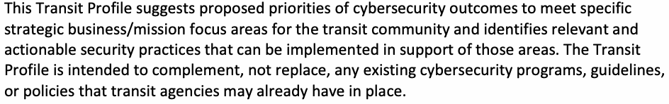

NIST IR 8576 日本語訳
英語タイトル : Transit Cybersecurity Framework Community Profile日本語タイトル : 公共交通機関向けサイバーセキュリティフレームワーク・コミュニティプロファイル
公開日 : 2026-08-05
原文URL : https://csrc.nist.gov/pubs/ir/8576/final
翻訳編集 : 自動生成（有志による非公式の日本語訳）, 原文取得日 : 2026-10-31, 訳文 : 492 / 493 ブロック
[要約] NIST IR 8576 は、米国の公共交通事業者を支援するために作成された、サイバーセキュリティフレームワーク（CSF）のコミュニティプロファイルです。この「トランジットプロファイル」は、公共交通分野の優先事項とベストプラクティスに沿っており、サイバーセキュリティの活動と成果に優先順位を付けるための指針として、または新しいプログラムを構築する出発点として使用できるものとされています。公共交通システムのセキュリティ確保における課題を整理し、CSF の概要と、戦略的重点領域や優先順位付けのプロセスを含む作成手法を説明したうえで、統治・識別・防御・検知・対応・復旧の各機能についてプロファイルを示します。トランジットプロファイルは、公共交通事業者が依拠している、または導入している既存のサイバーセキュリティプログラム、ガイドライン、ポリシーを置き換えるのではなく、補完するために作成されました。
NIST Interagency Report
NIST Interagency Report
NIST IR 8576
NIST IR 8576
Transit Cybersecurity Framework Community Profile
公共交通機関向けサイバーセキュリティフレームワーク・コミュニティプロファイル
CheeYee Tang Alex Alshtein Eileen Division Matt Hardison Emma Holt Christina Sames Hillary Tran*
CheeYee Tang Alex Alshtein Eileen Division Matt Hardison Emma Holt Christina Sames Hillary Tran*
*Former employee; all work for this publication was done while at employer.
*元職員。本刊行物に関するすべての作業は、雇用主に在職していた期間中に行われました。
This publication is available free of charge from: https://doi.org/10.6028/NIST.8576
本刊行物は次の URL から無料で入手できます: https://doi.org/10.6028/NIST.8576
NIST Interagency Report
NIST Interagency Report
NIST IR 8576
NIST IR 8576
Transit Cybersecurity Framework Community Profile
公共交通機関向けサイバーセキュリティフレームワーク・コミュニティプロファイル
CheeYee Tang Applied Cybersecurity Division Information Technology Laboratory
CheeYee Tang Applied Cybersecurity Division Information Technology Laboratory
Alex Alshtein Eileen Division Matt Hardison Emma Holt Christina Sames Hillary Tran* The MITRE Corporation
Alex Alshtein Eileen Division Matt Hardison Emma Holt Christina Sames Hillary Tran* The MITRE Corporation
*Former employee; all work for this publication was done while at employer.
*元職員。本刊行物に関するすべての作業は、雇用主に在職していた期間中に行われました。
This publication is available free of charge from: https://doi.org/10.6028/NIST.8576
本刊行物は次の URL から無料で入手できます: https://doi.org/10.6028/NIST.8576
August 2026
2026 年 8 月
［米国商務省の紋章。公的な標章のため、この非公式サイトには掲載していません。原本 PDF を参照してください。］
U.S. Department of Commerce Howard Lutnick, Secretary
U.S. Department of Commerce Howard Lutnick, Secretary
National Institute of Standards and Technology Arvind Raman, Under Secretary of Commerce for Standards and Technology and NIST Director
National Institute of Standards and Technology Arvind Raman, Under Secretary of Commerce for Standards and Technology and NIST Director
Certain equipment, instruments, software, or materials, commercial or non-commercial, are identified in this paper in order to specify the experimental procedure adequately. Such identification does not imply recommendation or endorsement of any product or service by NIST, nor does it imply that the materials or equipment identified are necessarily the best available for the purpose.
本書では、実験手順を十分に特定するために、商用・非商用を問わず、特定の機器、計器、ソフトウェア、または資材を挙げています。こうした記載は、NIST がいかなる製品やサービスも推奨または支持していることを意味せず、また、挙げた資材や機器がその目的に最適であることを意味するものでもありません。
There may be references in this publication to other publications currently under development by NIST in accordance with its assigned statutory responsibilities. The information in this publication, including concepts and methodologies, may be used by federal agencies even before the completion of such companion publications. Thus, until each publication is completed, current requirements, guidelines, and procedures, where they exist, remain operative. For planning and transition purposes, federal agencies may wish to closely follow the development of these new publications by NIST.
本刊行物には、NIST が法令上の責務に従って現在作成中の他の刊行物への言及が含まれる場合があります。概念や方法論を含む本刊行物の情報は、そうした関連刊行物の完成前であっても、連邦機関が使用できます。したがって、各刊行物が完成するまでは、既存の要件、ガイドライン、手順がある場合は、それらが引き続き有効です。計画および移行のために、連邦機関は、これらの NIST の新しい刊行物の進捗を注意深く追うことを希望する場合があります。
Organizations are encouraged to review all draft publications during public comment periods and provide feedback to NIST. Many NIST cybersecurity publications, other than the ones noted above, are available at https://csrc.nist.gov/publications.
組織は、パブリックコメント期間中にすべてのドラフト刊行物を確認し、NIST にフィードバックを提供することが推奨されます。上記以外の NIST のサイバーセキュリティ関連刊行物の多くは、https://csrc.nist.gov/publications で入手できます。
NIST Technical Series Policies Copyright, Use, and Licensing Statements NIST Technical Series Publication Identifier Syntax
NIST Technical Series Policies Copyright, Use, and Licensing Statements NIST Technical Series Publication Identifier Syntax
Publication History Approved by the NIST Editorial Review Board on 2026-07-14
Publication History Approved by the NIST Editorial Review Board on 2026-07-14
How to Cite this NIST Technical Series Publication Tang CE, Alshtein A, Division E, Hardison M, Holt E, Sames C, Tran H (2026) Transit Cybersecurity Framework Community Profile. (National Institute of Standards and Technology, Gaithersburg, MD), NIST Internal Report (IR) NIST IR 8576. https://doi.org/10.6028/NIST.8576
How to Cite this NIST Technical Series Publication Tang CE, Alshtein A, Division E, Hardison M, Holt E, Sames C, Tran H (2026) Transit Cybersecurity Framework Community Profile. (National Institute of Standards and Technology, Gaithersburg, MD), NIST Internal Report (IR) NIST IR 8576. https://doi.org/10.6028/NIST.8576
Author ORCID iDs CheeYee Tang: 0009-0000-2847-1443 Alex Alshtein: 0009-0009-9071-160X Eileen Division: 0009-0004-3152-3776 Matt Hardison: 0009-0002-7422-8131 Emma Holt: 0009-0001-8269-4143 Christina Sames: 0009-0003-1817-8333 Hillary Tran: 0009-0000-7003-5506
Author ORCID iDs CheeYee Tang: 0009-0000-2847-1443 Alex Alshtein: 0009-0009-9071-160X Eileen Division: 0009-0004-3152-3776 Matt Hardison: 0009-0002-7422-8131 Emma Holt: 0009-0001-8269-4143 Christina Sames: 0009-0003-1817-8333 Hillary Tran: 0009-0000-7003-5506
National Institute of Standards and Technology Attn: Applied Cybersecurity Division, Information Technology Laboratory 100 Bureau Drive (Mail Stop 2000) Gaithersburg, MD 20899-2000
National Institute of Standards and Technology Attn: Applied Cybersecurity Division, Information Technology Laboratory 100 Bureau Drive (Mail Stop 2000) Gaithersburg, MD 20899-2000
Additional Information Additional information about this publication is available at https://csrc.nist.gov/pubs/ir/8576/final, including related content, potential updates, and document history.
追加情報 本刊行物に関する追加情報（関連コンテンツ、更新の可能性、文書の履歴を含む）は、https://csrc.nist.gov/pubs/ir/8576/final で入手できます。
Abstract
要旨
This document is a Cybersecurity Framework (CSF) Community Profile developed to support United States-based transit agencies. This “Transit Profile” is aligned with transit sector priorities and best practices and can be used as a guide for prioritizing cybersecurity activities and outcomes or as a starting point for building a new program. The Transit Profile was developed to complement, not replace, any existing cybersecurity programs, guidelines, or policies that transit agencies may rely on or have in place.
本書は、米国の公共交通事業者を支援するために作成された、サイバーセキュリティフレームワーク（CSF）のコミュニティプロファイルです。この「トランジットプロファイル」は、公共交通分野の優先事項とベストプラクティスに沿っており、サイバーセキュリティの活動と成果に優先順位を付けるための指針として、または新しいプログラムを構築する出発点として使用できます。トランジットプロファイルは、公共交通事業者が依拠している、または導入している既存のサイバーセキュリティプログラム、ガイドライン、ポリシーを置き換えるのではなく、補完するために作成されました。
Keywords
キーワード
Bus, commuter rail, cybersecurity, Cybersecurity Framework (CSF), operational technology (OT), public transportation, rail, risk management, subway, transit.
バス、通勤鉄道、サイバーセキュリティ、サイバーセキュリティフレームワーク（CSF）、運用技術（OT）、公共交通機関、鉄道、リスク管理、地下鉄、公共交通。
Reports on Computer Systems Technology
コンピュータシステム技術に関する報告書
The Information Technology Laboratory (ITL) at the National Institute of Standards and Technology (NIST) promotes the U.S. economy and public welfare by providing technical leadership for the Nation’s measurement and standards infrastructure. ITL develops tests, test methods, reference data, proof of concept implementations, and technical analyses to advance the development and productive use of information technology. ITL’s responsibilities include the development of management, administrative, technical, and physical standards and guidelines for the cost-effective security and privacy of other than national security-related information in federal information systems. The Special Publication 800-series reports on ITL’s research, guidelines, and outreach efforts in information system security, and its collaborative activities with industry, government, and academic organizations.
米国国立標準技術研究所（NIST）の情報技術研究所（ITL）は、国の計測・標準の基盤に対する技術的なリーダーシップを提供することで、米国経済と公共の福祉を促進しています。ITL は、情報技術の開発と生産的な利用を進めるため、テスト、テスト方法、参照データ、概念実証の実装、技術分析を開発しています。ITL の責務には、連邦情報システムにおける、国家安全保障に関するもの以外の情報について、費用対効果の高いセキュリティとプライバシーのための管理上、行政上、技術上、物理上の標準とガイドラインの策定が含まれます。Special Publication 800 シリーズは、情報システムセキュリティに関する ITL の研究、ガイドライン、アウトリーチの取り組みと、産業界、政府、学術機関との協力活動を報告するものです。
Patent Disclosure Notice
特許開示に関する通知
NOTICE: ITL has requested that holders of patent claims whose use may be required for compliance with the guidance or requirements of this publication disclose such patent claims to ITL. However, holders of patents are not obligated to respond to ITL calls for patents and ITL has not undertaken a patent search in order to identify which, if any, patents may apply to this publication.
通知: ITL は、本刊行物のガイダンスまたは要件への準拠に使用が必要となる可能性のある特許権の保有者に対し、当該特許権を ITL に開示するよう要請しています。ただし、特許権者には ITL からの特許の照会に応じる義務はなく、また ITL は、本刊行物に適用される可能性のある特許を特定するための特許調査を行っていません。
As of the date of publication and following call(s) for the identification of patent claims whose use may be required for compliance with the guidance or requirements of this publication, no such patent claims have been identified to ITL.
発行日の時点で、本刊行物のガイダンスまたは要件への準拠に使用が必要となる可能性のある特許権の特定を求めた後も、そのような特許権は ITL に対して特定されていません。
No representation is made or implied by ITL that licenses are not required to avoid patent infringement in the use of this publication.
ITL は、本刊行物の使用にあたり、特許侵害を避けるためにライセンスが不要であることを表明も示唆もしていません。
Table of Contents
目次
List of Tables
表の一覧
List of Figures
図の一覧
Acknowledgments
謝辞
The Transit Profile was developed based on feedback from federal agencies, industry organizations, and stakeholders of small, medium, and large transit agencies across the United States. We appreciate the contributions and valuable insights from representatives of all these organizations, and we especially thank those organizations listed below (in alphabetical order) that took part in the Spring Profile workshop series, which initiated the documentation and exploration of cybersecurity priorities and challenges for transit operators.
トランジットプロファイルは、米国全土の小規模、中規模、大規模な公共交通事業者に属する連邦機関、業界団体、関係者からのフィードバックに基づいて作成されました。これらすべての組織の代表者による貢献と貴重な知見に感謝します。とりわけ、交通事業者のサイバーセキュリティ上の優先事項と課題の文書化と検討のきっかけとなった「Spring Profile」ワークショップシリーズに参加した、以下の組織（アルファベット順）に深く感謝します。
Federal Government
連邦政府
•United States (U.S.) Department of Homeland Security (DHS) Transportation Security Administration (TSA)
•United States (U.S.) Department of Homeland Security (DHS) Transportation Security Administration (TSA)
•U.S. Department of Transportation (DOT) Federal Railroad Administration (FRA)
•U.S. Department of Transportation (DOT) Federal Railroad Administration (FRA)
•U.S. DOT Federal Transit Administration (FTA)
•U.S. DOT Federal Transit Administration (FTA)
•U.S. DOT Office of the Chief Digital and Information Officer (OCDIO)
•U.S. DOT Office of the Chief Digital and Information Officer (OCDIO)
National Industry and Research Organizations
全国的な業界・研究組織
•American Public Transportation Association (APTA)
•American Public Transportation Association (APTA)
•Community Transportation Association of America (CTAA)
•Community Transportation Association of America (CTAA)
•Mineta Transportation Institute
•Mineta Transportation Institute
Transit Agencies
公共交通事業者
•Bay Area Rapid Transit (BART) (San Francisco, California)
•Bay Area Rapid Transit (BART) (San Francisco, California)
•Capital Metro (CapMetro) (Austin, Texas)
•Capital Metro (CapMetro) (Austin, Texas)
•Central Ohio Transit Authority (COTA) (Columbus, Ohio)
•Central Ohio Transit Authority (COTA) (Columbus, Ohio)
•Foothill Transit (West Covina, California)
•Foothill Transit (West Covina, California)
•MARTA (Atlanta, Georgia)
•MARTA (Atlanta, Georgia)
•Mendocino Transit Authority (Ukiah, California)
•Mendocino Transit Authority (Ukiah, California)
•Metra (Chicago, Illinois)
•Metra (Chicago, Illinois)
•Metropolitan Transportation Authority (MTA) (New York, New York)
•Metropolitan Transportation Authority (MTA) (New York, New York)
•Monterey-Salinas Transit (Monterey, California)
•Monterey-Salinas Transit (Monterey, California)
•Prairie Hills Transit (Spearfish, South Dakota)
•Prairie Hills Transit (Spearfish, South Dakota)
•Regional Transportation District (RTD) (Denver, Colorado)
•Regional Transportation District (RTD) (Denver, Colorado)
•Rogue Valley Transportation District (Medford, Oregon)
•Rogue Valley Transportation District (Medford, Oregon)
•SamTrans (San Carlos, California)
•SamTrans (San Carlos, California)
•South Shore Line (South Bend, Indiana)
•South Shore Line (South Bend, Indiana)
•Virginia Railway Express (VRE) (Virginia)
•Virginia Railway Express (VRE) (Virginia)
Executive Summary
エグゼクティブサマリー
The Transit Cybersecurity Framework (CSF) Community Profile (“Transit Profile”) is a voluntary, risk-based guide designed to help U.S. transit agencies enhance cybersecurity while maintaining safe and resilient transit services. Built on the National Institute of Standards and Technology (NIST) CSF 2.0, it translates transit mission needs into a community-informed baseline of cybersecurity outcomes that transit agencies can adopt and tailor to their unique operational environments.
公共交通機関向けサイバーセキュリティフレームワーク（CSF）コミュニティプロファイル（「トランジットプロファイル」）は、米国の公共交通事業者が、安全で強靭な公共交通サービスを維持しながらサイバーセキュリティを強化できるよう設計された、任意のリスクベースの指針です。米国国立標準技術研究所（NIST）の CSF 2.0 を基に、公共交通の使命上のニーズを、コミュニティの知見を踏まえたサイバーセキュリティ成果のベースラインに落とし込んでおり、公共交通事業者はこれを採用し、それぞれの運用環境に合わせて調整できます。
Transit agencies operate complex networks of business and operational systems, such as rail signaling, bus charging, scheduling, ticketing, and public information systems. The transition to digital, network-based communication has expanded the cyberattack surface, requiring agencies to manage cybersecurity risks alongside safety and operational demands. To address these challenges, this Transit Profile focuses on three strategic priorities: securing and managing critical assets to ensure safe and reliable operations, fostering collaboration with stakeholders and suppliers to enhance resilience and supply chain security, and continuously improving organizational processes and workforce cybersecurity awareness and capabilities.
公共交通事業者は、鉄道の信号、バスの充電、スケジューリング、発券、旅客案内システムなど、業務システムと運用システムが複雑に組み合わさったネットワークを運営しています。デジタルかつネットワークベースの通信への移行によって、サイバー攻撃の対象領域が拡大し、事業者は安全性や運用上の要求とあわせてサイバーセキュリティリスクを管理しなければならなくなっています。こうした課題に対処するため、本トランジットプロファイルは 3 つの戦略的優先事項に焦点を当てています。すなわち、安全で信頼できる運行を確保するために重要資産を保護・管理すること、レジリエンスとサプライチェーンのセキュリティを高めるために関係者や供給者と連携すること、組織のプロセスと職員のサイバーセキュリティに対する意識と能力を継続的に改善することです。
The Transit Profile can help transit agencies focus resources on cybersecurity activities aligned with these strategic priorities by mapping them to relevant CSF Subcategories. This enables transit leaders to prioritize cybersecurity capabilities, perform gap analyses, and make informed risk-based decisions. It integrates industry-specific cybersecurity considerations and guidelines for agencies of all sizes, including small- and medium-sized transit agencies (SMTAs) with limited resources and supports scalable actions based on size and maturity. This Transit Profile can enhance existing cybersecurity programs, helping agencies adopt best practices, establish a shared taxonomy for discussing cybersecurity risk with leadership, plan strategically, and communicate cybersecurity needs to stakeholders, suppliers, and funding entities.
トランジットプロファイルは、これらの戦略的優先事項を関連する CSF サブカテゴリに対応付けることで、公共交通事業者がそれに沿ったサイバーセキュリティ活動にリソースを集中させる助けとなります。これにより、公共交通分野の指導者は、サイバーセキュリティ能力の優先順位付け、ギャップ分析、情報に基づくリスクベースの意思決定を行えます。本プロファイルは、リソースが限られた小規模・中規模の公共交通事業者（SMTA）を含むあらゆる規模の事業者に向けて、業界特有のサイバーセキュリティ上の考慮事項とガイドラインを取り込み、規模や成熟度に応じた拡張可能な対応を支援します。このトランジットプロファイルは、既存のサイバーセキュリティプログラムを強化し、事業者がベストプラクティスを採用し、経営層とサイバーセキュリティリスクを議論するための共通の分類体系を確立し、戦略的に計画を立て、サイバーセキュリティ上のニーズを関係者、供給者、資金提供組織に伝える助けとなります。
The Transit Profile is intended to complement, not replace, existing programs, standards, and regulatory obligations. As a non-regulatory and neutral entity, NIST developed the Transit Profile in collaboration with the transit community to provide cybersecurity considerations and guidelines tailored to the sector’s unique challenges. By working closely with transit operators, federal agencies, and other stakeholders, NIST ensures the Transit Profile reflects industry needs while supporting voluntary adoption of cybersecurity best practices.
トランジットプロファイルは、既存のプログラム、標準、規制上の義務を置き換えるのではなく、補完することを意図しています。NIST は、規制を行わない中立的な組織として、公共交通コミュニティと協力してトランジットプロファイルを作成し、この分野特有の課題に合わせたサイバーセキュリティ上の考慮事項とガイドラインを提供しています。NIST は、公共交通事業者、連邦機関、その他の関係者と緊密に連携することで、トランジットプロファイルが業界のニーズを反映するようにするとともに、サイバーセキュリティのベストプラクティスの任意の採用を支援します。
1. Introduction
1. はじめに
The National Institute of Standards and Technology (NIST) Cybersecurity Framework (CSF) 2.0 introduced the concept of a Community Profile, which is a baseline of CSF cybersecurity outcomes that is created and published to address shared interests and goals among several organizations. It is typically developed for a particular sector, subsector, technology, threat type, or other use case, and can be used by an organization as the basis for its own Organizational Target Profile [CSF2.0].
米国国立標準技術研究所（NIST）のサイバーセキュリティフレームワーク（CSF）2.0 では、コミュニティプロファイルという概念が導入されました。これは、複数の組織に共通する関心事や目標に対応するために作成・公開される、CSF のサイバーセキュリティ成果のベースラインです。通常、特定の分野、サブ分野、技術、脅威の種類、またはその他のユースケースを対象に作成され、組織が独自の組織ターゲットプロファイルの基礎として使用できます [CSF2.0]。
NIST developed the Transit Profile to provide a voluntary, risk-based approach for managing cybersecurity activities, reducing cybersecurity risks, and improving the cybersecurity posture of the transit community.
NIST は、サイバーセキュリティ活動の管理、サイバーセキュリティリスクの低減、公共交通コミュニティのサイバーセキュリティ態勢の改善に向けて、任意のリスクベースのアプローチを提供するために、トランジットプロファイルを作成しました。
1.1. Purpose and Scope
1.1. 目的と範囲
This document represents a CSF Community Profile that describes shared interests, goals, and outcomes for mitigating cybersecurity risk within the transit community. For the purposes of this Profile, “transit agencies” include owners and operators of public transportation services, such as bus and rail systems (e.g., light rail, subway, commuter rail), as well as paratransit, microtransit, and demand-responsive transit services [FTA-Definitions]. The term also encompasses affiliated entities, such as federal agencies and county governments, that oversee and/or fund transit agencies. The Transit Profile focuses on the operational systems (including information technology (IT) and operational technology (OT) that transit agencies own and operate, as well as the challenges involved in managing these services. The Profile is not intended to cover automated driving systems or national rail passenger or freight rail services.
本書は、公共交通コミュニティにおけるサイバーセキュリティリスクを低減するための共通の関心事、目標、成果を記述した CSF コミュニティプロファイルです。本プロファイルでは、「公共交通事業者」とは、バスや鉄道（例: ライトレール、地下鉄、通勤鉄道）などの公共交通サービスに加え、パラトランジット、マイクロトランジット、デマンド応答型交通サービスの所有者および運営者を指します [FTA-Definitions]。この用語には、公共交通事業者を監督または資金面で支援する連邦機関や郡政府などの関連組織も含まれます。トランジットプロファイルは、公共交通事業者が所有・運営する運用システム（情報技術（IT）および運用技術（OT）を含む）と、これらのサービスの管理に伴う課題に焦点を当てています。本プロファイルは、自動運転システムや、全国規模の鉄道旅客サービス、貨物鉄道サービスを対象とするものではありません。
This Transit Profile suggests proposed priorities of cybersecurity outcomes to meet specific strategic business/mission focus areas for the transit community and identifies relevant and actionable security practices that can be implemented in support of those areas. The Transit Profile is intended to complement, not replace, any existing cybersecurity programs, guidelines, or policies that transit agencies may already have in place.
原本PDFの抜粋画像

本トランジットプロファイルは、公共交通コミュニティにおける特定の戦略的な事業・使命上の重点領域を満たすために、サイバーセキュリティ成果の優先順位案を示し、それらの領域を支える実施可能で関連性の高いセキュリティ対策を特定します。トランジットプロファイルは、公共交通事業者が既に導入している可能性のある既存のサイバーセキュリティプログラム、ガイドライン、ポリシーを置き換えるのではなく、補完することを意図しています。
The Transit Community Profile:
トランジットコミュニティプロファイルは、次の役割を果たします。
•Describes a shared taxonomy to support communication about cybersecurity risk management for transit owners/operators
•公共交通の所有者・運営者向けに、サイバーセキュリティリスクマネジメントに関するコミュニケーションを支える共通の分類体系を示す
•Offers a framework to aggregate transit cybersecurity considerations and guidelines from multiple industry resources
•複数の業界リソースから公共交通のサイバーセキュリティに関する考慮事項とガイドラインを集約するための枠組みを提供する
•Develops common target outcomes that transit owners and operators can use to support strategic planning efforts and cybersecurity assessments
•公共交通の所有者・運営者が戦略的計画の取り組みやサイバーセキュリティ評価に使用できる、共通の目標成果を策定する
•Assists in identifying and communicating cybersecurity needs to the broader transit community of suppliers, operating partners, and funding entities
•サイバーセキュリティ上のニーズを、供給者、運行パートナー、資金提供組織からなる、より広い公共交通コミュニティに特定し伝える助けとなる
•Provides scalable and achievable cybersecurity considerations and guidelines for transit owners/operators of all sizes, including urban, rural, and resource-constrained transit agencies
•都市部、地方、リソースが限られた公共交通事業者を含む、あらゆる規模の公共交通の所有者・運営者に、拡張可能で達成可能なサイバーセキュリティ上の考慮事項とガイドラインを提供する
1.2. Audience
1.2. 想定読者
This document focuses on cybersecurity considerations specific to transit agencies and assumes readers have a foundational understanding of OT and general IT security concepts. The intended audience includes:
本書は、公共交通事業者に固有のサイバーセキュリティ上の考慮事項に焦点を当てており、読者が OT と一般的な IT セキュリティの概念について基礎的な理解を持っていることを前提としています。想定する読者は次のとおりです。
•Control engineers, integrators, system suppliers, and architects involved in designing or implementing secure transit systems
•安全な公共交通システムの設計または実装に携わる制御エンジニア、インテグレーター、システム供給者、アーキテクト
•System and network administrators, cybersecurity professionals, physical security personnel, and OT operators responsible for managing, patching, or securing transit systems
•公共交通システムの管理、パッチ適用、保護を担当するシステム管理者およびネットワーク管理者、サイバーセキュリティの専門家、物理セキュリティの担当者、OT 運用者
•Executives and management teams overseeing transit operations
•公共交通の運営を監督する経営幹部および管理チーム
•Senior security officials evaluating cybersecurity risks and implementing cybersecurity programs to support transit operations
•サイバーセキュリティリスクを評価し、公共交通の運営を支えるサイバーセキュリティプログラムを実施する上級セキュリティ責任者
•Affiliated entities (such as federal agencies and county governments) that oversee and/or fund transit agencies
•公共交通事業者を監督または資金面で支援する関連組織（連邦機関や郡政府など）
•Transit industry associations and researchers seeking to understand the unique cybersecurity needs of transit systems
•公共交通システム固有のサイバーセキュリティ上のニーズを理解しようとする公共交通の業界団体および研究者
•Small and medium-sized transit agencies (SMTAs), along with any transit agency with evolving cybersecurity capabilities or resource constraints for a cybersecurity risk management program
•小規模・中規模の公共交通事業者（SMTAs）、およびサイバーセキュリティ能力が発展途上にある、またはサイバーセキュリティリスクマネジメントプログラムにリソースの制約がある公共交通事業者
1.3. Document Structure
1.3. 文書の構成
The remainder of the Transit Profile is divided into the following sections:
トランジットプロファイルの以降の部分は、次の節で構成されています。
•Section 2 provides a summary of challenges to securing transit systems.
•第 2 節では、公共交通システムのセキュリティ確保における課題をまとめています。
•Section 3 provides an overview of the NIST CSF 2.0.
•第 3 節では、NIST CSF 2.0 の概要を説明しています。
•Section 4 describes the Transit Profile development methodology.
•第 4 節では、トランジットプロファイルの作成手法を説明しています。
•Section 5 provides the transit sector-specific rationale, guidelines, and considerations for prioritized CSF Subcategories.
•第 5 節では、優先順位を付けた CSF サブカテゴリについて、公共交通分野に固有の根拠、ガイドライン、考慮事項を示しています。
•References provide a list of references used in the development of this document.
•参考文献には、本書の作成に使用した参考資料の一覧を示しています。
•Appendix A provides a complete listing of all CSF Subcategory designations.
•附属書 A には、すべての CSF サブカテゴリ識別子の一覧を示しています。
•Appendix B provides a list of symbols, abbreviations, and acronyms used in this document.
•附属書 B には、本書で使用している記号、略語、頭字語の一覧を示しています。
2. Challenges to Securing Transit Systems
2. 公共交通システムのセキュリティ確保における課題
Transit agencies manage a complex network of business and operational systems to support their mission. Examples can include:
公共交通事業者は、その使命を支えるために、業務システムと運用システムが複雑に組み合わさったネットワークを管理しています。例として次のものがあります。
•Rail signaling and train control systems
•鉄道の信号システムおよび列車制御システム
•Bus fueling, battery-electric charging, and charge management systems
•バスの燃料補給、バッテリー式電気バスの充電、および充電管理システム
•Scheduling and dispatching
•スケジューリングおよび配車
•Facility management systems
•施設管理システム
•Emergency communications systems
•緊急通信システム
•Control and communication systems
•制御・通信システム
•Ticketing systems
•発券システム
•Command centers
•指令センター
•Revenue collection systems, including back office and fare payment systems
•バックオフィスや運賃決済システムを含む、運賃収入の収集システム
•Public information systems, such as station-based electronic signage and web and mobile applications/systems
•駅の電子サイネージや、ウェブ・モバイルのアプリケーション／システムなどの旅客案内システム
Traditionally, many of these systems relied on direct connections for communications. Today, communication between and among these systems is digital and network-based, including through the extensive use of wireless connectivity. This dependence on digital technology and interconnections to sustain daily operations has widened the cyberattack surface for transit agencies. Operators must now manage the cybersecurity risk of their IT and OT systems while meeting increasingly demanding safety and operating requirements.
従来、これらのシステムの多くは、通信を直接接続に頼っていました。今日では、これらのシステム間の通信はデジタルかつネットワークベースであり、無線接続も広く利用されています。日常の運営を維持するためにデジタル技術と相互接続に依存するようになったことで、公共交通事業者に対するサイバー攻撃の対象領域が拡大しました。事業者は現在、ますます厳しくなる安全性と運用の要件を満たしながら、IT システムと OT システムのサイバーセキュリティリスクを管理しなければなりません。
Several aspects of the transit sector make it uniquely challenging to protect and require a more tailored approach to prioritize and apply cybersecurity risk management measures. These include:
公共交通分野には、保護が特に困難で、サイバーセキュリティリスクマネジメント対策の優先順位付けと適用にいっそう個別に合わせたアプローチが必要となる側面がいくつかあります。次のようなものです。
•Safety-centric culture. A transit agency’s top responsibility is safety. Cybersecurity knowledge and awareness in many agencies is still maturing. The American Public Transportation Association (APTA), federal agencies, suppliers, and the operating agencies themselves have worked to develop and organize resources to advance cybersecurity awareness and protections specific to transit operations. Cybersecurity measures, including training, must be integrated into an agency’s overall safety framework to improve effectiveness.
•安全を重視する文化。公共交通事業者の最優先の責務は安全です。多くの事業者では、サイバーセキュリティに関する知識と意識はまだ成熟の途上にあります。American Public Transportation Association（APTA）、連邦機関、供給者、そして運営事業者自身が、公共交通の運営に固有のサイバーセキュリティ意識と保護を高めるためのリソースの開発と整理に取り組んできました。訓練を含むサイバーセキュリティ対策は、効果を高めるために、事業者全体の安全の枠組みに組み込まなければなりません。
•Safety-critical control systems. Safety-critical control systems (e.g., signaling and train control for rail, and steering, acceleration, and brake control for buses) are governed by strict standards and are typically certified as an integrated package of technologies. A failure or compromise of these systems could directly endanger human life. Any cybersecurity controls applied, even well-intentioned ones, must be carefully planned, tested, validated, and continuously monitored to preserve their safety certification.
•安全上重要な制御システム。安全上重要な制御システム（例: 鉄道の信号・列車制御、バスのステアリング・加速・ブレーキ制御）は、厳格な標準によって規律されており、通常は統合された一式の技術として認証されています。これらのシステムの障害や危殆化は、人命を直接危険にさらす可能性があります。たとえ善意によるものであっても、適用するサイバーセキュリティ対策は、安全認証を維持するために、慎重に計画、テスト、妥当性確認を行い、継続的に監視しなければなりません。
Moreover, because availability is often the primary security objective for safety-critical systems, especially legacy ones, adding safeguards intended to improve confidentiality and integrity can create practical implementation and architectural challenges.
さらに、安全上重要なシステム、特にレガシーシステムでは、可用性が主要なセキュリティ目標であることが多いため、機密性と完全性の向上を意図した保護策を追加すると、実装上およびアーキテクチャ上の実務的な課題が生じる場合があります。
•Long-lived and legacy systems. Most transit agencies simultaneously manage both modern and legacy IT and OT infrastructure and systems. Many systems and assets in the transit sector have long lifecycles measured in decades, not years, and may not be able to accommodate modern cybersecurity controls (e.g., multifactor authentication (MFA), advanced encryption, and automated patch management). This is evident in legacy systems and long-lived OT systems that are remote, difficult to access, or challenging to update. Retrofitting these systems for cybersecurity purposes can be cost-prohibitive and disruptive, and compensating cybersecurity controls may be an alternative to meet security outcomes.
•長寿命のシステムとレガシーシステム。ほとんどの公共交通事業者は、最新の IT・OT のインフラとシステムと、レガシーなものの両方を同時に管理しています。公共交通分野の多くのシステムと資産は、ライフサイクルが数年ではなく数十年単位と長く、最新のサイバーセキュリティ対策（例: 多要素認証（MFA）、高度な暗号化、自動パッチ管理）に対応できない場合があります。これは、遠隔地にある、アクセスが難しい、または更新が困難なレガシーシステムや長寿命の OT システムで顕著です。こうしたシステムをサイバーセキュリティのために改修することは、費用が過大になり、運行の妨げになる場合があり、セキュリティ成果を満たす代替手段として補完的なサイバーセキュリティ対策が考えられます。
•Communication systems. Communication systems (e.g., Wi-Fi, radio, cellular, satellite, wired, mesh networks) are the backbone of public transit operations, supporting coordination between buses, vehicles, trains, control centers, and infrastructure. They facilitate real-time updates, signaling, dispatching, and monitoring. Any disruption or compromise of these systems can lead to operational failures and delays, adversely affecting the safety and reliability of transit systems.
•通信システム。通信システム（例: Wi-Fi、無線、携帯電話網、衛星、有線、メッシュネットワーク）は、公共交通の運営の基盤であり、バス、車両、列車、指令センター、インフラ間の連携を支えています。これらは、リアルタイムの更新、信号制御、配車、監視を可能にします。これらのシステムが途絶または危殆化すると、運行の障害や遅延につながり、公共交通システムの安全性と信頼性に悪影響を及ぼすおそれがあります。
•Vendor supply chain. Transit agency systems and components are supplied by a large variety of domestic and global suppliers that offer varying levels of baseline cybersecurity assurance. Likewise, transit agencies rely heavily on vendor services and contractors to install, manage, and maintain their IT and OT systems and infrastructure. Cybersecurity supply chain risk management must be part of an organization-wide risk management strategy.
•ベンダーのサプライチェーン。公共交通事業者のシステムと構成要素は、国内外の多様な供給者から提供されており、供給者ごとにベースラインのサイバーセキュリティ保証の水準は異なります。同様に、公共交通事業者は、IT・OT のシステムとインフラの導入、管理、保守を、ベンダーのサービスや請負業者に大きく依存しています。サイバーセキュリティのサプライチェーンリスクマネジメントは、組織全体のリスクマネジメント戦略の一部でなければなりません。
•Distributed and mobile operations. Transit operations and their support systems are geographically dispersed. Rail operators, for example, manage systems and sensors that encompass the rail network and associated facilities. Likewise, bus operators support mobile assets, garages, and maintenance facilities that are deployed across a metropolitan region.
•分散した移動を伴う運営。公共交通の運営とそれを支えるシステムは、地理的に分散しています。たとえば鉄道事業者は、鉄道網と関連施設にまたがるシステムとセンサーを管理しています。同様に、バス事業者は、大都市圏全体に展開された移動資産、車庫、整備施設を支えています。
•Physical security concerns. Transit assets and infrastructure are both accessible to and used by the public. Many of the supporting systems are also distributed across a broad region, making physical security more challenging and exposing certain elements, such as telecommunications systems or wayside equipment, to potential unauthorized physical and logical access by malicious actors.
•物理セキュリティ上の懸念。公共交通の資産とインフラは、一般の人々がアクセスでき、利用もしています。支援システムの多くも広い地域に分散しているため、物理セキュリティの確保がいっそう難しくなり、通信システムや沿線設備などの一部の要素が、悪意ある者による物理的および論理的な不正アクセスにさらされる可能性があります。
•Funding. Transit agencies often face resource constraints and must balance cybersecurity investments against competing operational and capital priorities. Transit agencies, as public sector entities, generally rely on subsidies to cover all or some part of their capital and operating costs. This reliance creates a unique challenge to securing the funds necessary to implement and manage cybersecurity measures for protecting their systems. While agencies can pursue a variety of funding sources, such as capital funding, operating funding, and grant funding, these sources must address multiple competing priorities. Additionally, even when funding is approved, it could involve a lengthy authorization process, making it difficult to secure resources for cybersecurity needs. This unpredictability and longer lead-time can work against efforts to address cybersecurity needs promptly.
•資金。公共交通事業者は、リソースの制約に直面することが多く、サイバーセキュリティへの投資を、競合する運営上および資本上の優先事項とのバランスの中で判断しなければなりません。公共交通事業者は公的機関として、一般に、資本コストと運営コストの全部または一部を補助金で賄っています。この依存により、システムを保護するためのサイバーセキュリティ対策の実施と管理に必要な資金の確保が、特有の課題となっています。事業者は、資本資金、運営資金、助成金など、さまざまな資金源を追求できますが、これらの資金源は複数の競合する優先事項に対応しなければなりません。さらに、資金が承認された場合でも、承認手続きに長い時間がかかることがあり、サイバーセキュリティ上のニーズのためにリソースを確保しにくくなります。この予測の難しさと長いリードタイムは、サイバーセキュリティ上のニーズに迅速に対処する取り組みの妨げになることがあります。
•Emerging AI/ML-enabled systems. Transit agencies are exploring or adopting Artificial Intelligence/Machine Learning (AI/ML) capabilities (e.g., for predictive maintenance, operations optimization, customer-facing services, and security monitoring). These systems can introduce new cybersecurity and privacy risks through expanded data collection and sharing, new cloud and API dependencies, and reliance on vendors and third-party services for models and model management. AI/ML systems also require continuous monitoring and governance to ensure the integrity, security, and reliability of outputs and safe transit operations as operating conditions, data, and threat landscapes evolve.
•新たに登場する AI/ML 対応システム。公共交通事業者は、人工知能／機械学習（AI/ML）の機能（例: 予知保全、運営の最適化、利用者向けサービス、セキュリティ監視）を検討または導入しています。これらのシステムは、データの収集と共有の拡大、クラウドや API への新たな依存、モデルとそのモデル管理におけるベンダーや第三者サービスへの依存を通じて、新たなサイバーセキュリティリスクとプライバシーリスクをもたらす可能性があります。また AI/ML システムでは、運用条件、データ、脅威の状況が変化しても、出力の完全性、セキュリティ、信頼性と、安全な公共交通の運営を確保するために、継続的な監視とガバナンスが必要です。
3. Overview of the NIST Cybersecurity Framework
3. NIST サイバーセキュリティフレームワークの概要
This Transit Profile is based on the NIST CSF 2.0 [CSF2.0], which provides a flexible and risk-based approach to managing cybersecurity.
本トランジットプロファイルは、NIST CSF 2.0 [CSF2.0] に基づいています。CSF 2.0 は、サイバーセキュリティを管理するための柔軟でリスクベースのアプローチを提供します。
The CSF helps organizations of any size, sector, or level of cyber maturity address their unique cybersecurity risks while improving communication and collaboration across stakeholders. For the transit sector, the CSF provides a foundation to:
CSF は、規模、分野、サイバー成熟度の水準を問わず、組織が固有のサイバーセキュリティリスクに対処するのを助けるとともに、関係者間のコミュニケーションと協力を改善します。公共交通分野にとって、CSF は次のための基盤となります。
•Establish a common understanding of cybersecurity risks, threats, and priorities
•サイバーセキュリティのリスク、脅威、優先事項について共通の理解を確立する
•Align on desired outcomes and target states for cybersecurity practices
•サイバーセキュリティの実践における望ましい成果と目標状態をそろえる
•Identify and prioritize opportunities for improvement in a consistent, repeatable manner
•改善の機会を、一貫性と再現性のある方法で特定し、優先順位を付ける
•Support cross-organization communication and coordination to manage cybersecurity risk effectively
•組織をまたぐコミュニケーションと調整を支援し、サイバーセキュリティリスクを効果的に管理する
The CSF Core is a taxonomy of high-level cybersecurity outcomes that can help organizations manage their cybersecurity risks. The Core components are a hierarchy of Functions, Categories, and Subcategories that detail each outcome. These outcomes can be understood by a broad audience, including executives, managers, and practitioners, regardless of their cybersecurity expertise [CSF2.0].
CSF コアは、組織がサイバーセキュリティリスクを管理するのに役立つ、ハイレベルなサイバーセキュリティ成果の分類体系です。コアの構成要素は、各成果を詳細に記述する機能、カテゴリ、サブカテゴリの階層です。これらの成果は、サイバーセキュリティの専門知識の有無にかかわらず、経営幹部、管理者、実務担当者を含む幅広い読者が理解できます [CSF2.0]。
The CSF Core Functions (Govern, Identify, Protect, Detect, Respond, and Recover) organize cybersecurity outcomes at their highest level. The Core then identifies underlying key Categories and Subcategories for each Function [CSF2.0]. The six Functions of the CSF 2.0 Core are composed of 22 Categories, which are further broken down into 106 Subcategories of more specific outcomes.
CSF コアの機能（統治（GOVERN）、識別（IDENTIFY）、防御（PROTECT）、検知（DETECT）、対応（RESPOND）、復旧（RECOVER））は、サイバーセキュリティ成果を最上位の水準で整理しています。コアはさらに、各機能の下にある主要なカテゴリとサブカテゴリを特定しています [CSF2.0]。CSF 2.0 コアの 6 つの機能は 22 のカテゴリで構成され、カテゴリはさらに、より具体的な成果を示す 106 のサブカテゴリに分けられます。
Section 5 provides more detailed information on each Function, Category, and Subcategory as part of defining the Transit Profile. Additionally, NIST provides supplemental resources to help organizations understand, adopt, and use CSF 2.0 and achieve the desired outcome of each Subcategory, including Implementation Examples and Informative References. The NIST CSF website contains the most current information regarding available Implementation Examples and Informative References. Communities and organizations can choose to add their own Implementation Examples and Informative References that are unique to their transit environment in the future.
第 5 節では、トランジットプロファイルの定義の一環として、各機能、カテゴリ、サブカテゴリについて、より詳細な情報を示します。また NIST は、組織が CSF 2.0 を理解、採用、使用し、各サブカテゴリの望ましい成果を達成するのを助ける補足リソースとして、実装例と参考情報を提供しています。利用可能な実装例と参考情報に関する最新の情報は、NIST CSF のウェブサイトに掲載されています。コミュニティや組織は、将来、自らの公共交通環境に固有の実装例や参考情報を追加することもできます。
The following sections present the CSF Functions and their associated Categories, beginning with the Govern Function.
以降の節では、統治（GOVERN）機能から始めて、CSF の各機能と、それに関連するカテゴリを示します。
3.1. Govern (GV)
3.1. 統治（GV）
The organization’s cybersecurity risk management strategy, expectations, and policy are established, communicated, and monitored.
組織のサイバーセキュリティリスクマネジメントの戦略、期待事項、ポリシーが確立され、伝達され、監視されます。
Table 1. Govern (GV) Cybersecurity Framework Categories
表 1. 統治（GV）サイバーセキュリティフレームワークのカテゴリ
| Category | Cybersecurity Outcome |
|---|---|
| GV.OC | The circumstances—mission, stakeholder expectations, dependencies, and legal, regulatory, and contractual requirements—surrounding the organization’s cybersecurity risk management decisions are understood |
| GV.RM | The organization’s priorities, constraints, risk tolerance and appetite statements, and assumptions are established, communicated, and used to support operational risk decisions |
| GV.RR | Cybersecurity roles, responsibilities, and authorities to foster accountability, performance assessment, and continuous improvement are established and communicated |
| GV.PO | Organizational cybersecurity policy is established, communicated, and enforced |
| GV.OV | Results of organization-wide cybersecurity risk management activities and performance are used to inform, improve, and adjust the risk management strategy |
| GV.SC | Cyber supply chain risk management processes are identified, established, managed, monitored, and improved by organizational stakeholders |
| カテゴリ | サイバーセキュリティ成果 |
|---|---|
| GV.OC | 組織のサイバーセキュリティリスクマネジメントの意思決定を取り巻く状況（使命、関係者の期待、依存関係、法的・規制上・契約上の要件）が理解されている |
| GV.RM | 組織の優先事項、制約、リスク許容度とリスク選好度の表明、前提が確立され、伝達され、運用上のリスクに関する意思決定を支えるために使用されている |
| GV.RR | 説明責任、パフォーマンス評価、継続的改善を促すために、サイバーセキュリティの役割、責任、権限が確立され、伝達されている |
| GV.PO | 組織のサイバーセキュリティポリシーが確立され、伝達され、実施されている |
| GV.OV | 組織全体のサイバーセキュリティリスクマネジメント活動とパフォーマンスの結果が、リスクマネジメント戦略に情報を提供し、その改善と調整に使用されている |
| GV.SC | サイバーサプライチェーンリスクマネジメントのプロセスが、組織の関係者によって特定、確立、管理、監視、改善されている |
3.2. Identify (ID)
3.2. 識別（ID）
The organization’s current cybersecurity risks are understood.
組織の現在のサイバーセキュリティリスクが理解されます。
Table 2. Identify (ID) Cybersecurity Framework Categories
表 2. 識別（ID）サイバーセキュリティフレームワークのカテゴリ
| Category | Cybersecurity Outcome |
|---|---|
| ID.AM | Assets (e.g., data, hardware, software, systems, facilities, services, people) that enable the organization to achieve business purposes are identified and managed consistent with their relative importance to organizational objectives and the organization’s risk strategy |
| ID.RA | The cybersecurity risk to the organization, assets, and individuals is understood by the organization |
| ID.IM | Improvements to organizational cybersecurity risk management processes, procedures and activities are identified across all CSF Functions |
| カテゴリ | サイバーセキュリティ成果 |
|---|---|
| ID.AM | 組織が事業目的を達成することを可能にする資産（例: データ、ハードウェア、ソフトウェア、システム、施設、サービス、人員）が、組織の目標に対する相対的な重要度と組織のリスク戦略に沿って特定され、管理されている |
| ID.RA | 組織、資産、個人に対するサイバーセキュリティリスクが、組織によって理解されている |
| ID.IM | 組織のサイバーセキュリティリスクマネジメントのプロセス、手順、活動の改善点が、すべての CSF 機能にわたって特定されている |
3.3. Protect (PR)
3.3. 防御（PR）
Safeguards to manage the organization’s cybersecurity risk are used.
組織のサイバーセキュリティリスクを管理するための保護措置が講じられます。
Table 3. Protect (PR) Cybersecurity Framework Categories
表 3. 防御（PR）サイバーセキュリティフレームワークのカテゴリ
| Category | Cybersecurity Outcome |
|---|---|
| PR.AA | Access to physical and logical assets is limited to authorized users, services, and hardware and managed commensurate with the assessed risk of unauthorized access |
| PR.AT | The organization's personnel are provided with cybersecurity awareness and training so that they can perform their cybersecurity-related tasks |
| PR.DS | Data are managed consistent with the organization’s risk strategy to protect the confidentiality, integrity, and availability of information |
| PR.PS | The hardware, software (e.g., firmware, operating systems, applications), and services of physical and virtual platforms are managed consistent with the organization’s risk strategy to protect their confidentiality, integrity, and availability |
| PR.IR | Security architectures are managed with the organization’s risk strategy to protect asset confidentiality, integrity, availability, and organizational resilience |
| カテゴリ | サイバーセキュリティ成果 |
|---|---|
| PR.AA | 物理的資産および論理的資産へのアクセスが、認可されたユーザー、サービス、ハードウェアに限定され、不正アクセスについて評価されたリスクに見合った形で管理されている |
| PR.AT | 組織の要員が、サイバーセキュリティに関連する業務を遂行できるよう、サイバーセキュリティの意識向上と訓練を受けている |
| PR.DS | 情報の機密性、完全性、可用性を保護するために、データが組織のリスク戦略に沿って管理されている |
| PR.PS | 物理プラットフォームおよび仮想プラットフォームのハードウェア、ソフトウェア（例: ファームウェア、オペレーティングシステム、アプリケーション）、サービスが、その機密性、完全性、可用性を保護するために、組織のリスク戦略に沿って管理されている |
| PR.IR | 資産の機密性、完全性、可用性と組織のレジリエンスを保護するために、セキュリティアーキテクチャが組織のリスク戦略に沿って管理されている |
3.4. Detect (DE)
3.4. 検知（DE）
Possible cybersecurity attacks and compromises are found and analyzed.
起こりうるサイバーセキュリティ攻撃と危殆化が発見され、分析されます。
Table 4. Detect (DE) Cybersecurity Framework Categories
表 4. 検知（DE）サイバーセキュリティフレームワークのカテゴリ
| Category | Cybersecurity Outcome |
|---|---|
| DE.CM | Assets are monitored to find anomalies, indicators of compromise, and other potentially adverse events |
| DE.AE | Anomalies, indicators of compromise, and other potentially adverse events are analyzed to characterize the events and detect cybersecurity incidents |
| カテゴリ | サイバーセキュリティ成果 |
|---|---|
| DE.CM | 異常、侵害の痕跡、その他の悪影響を及ぼしうる事象を発見するために、資産が監視されている |
| DE.AE | 異常、侵害の痕跡、その他の悪影響を及ぼしうる事象が分析され、事象の特性が明らかにされ、サイバーセキュリティインシデントが検知されている |
3.5. Respond (RS)
3.5. 対応（RS）
Actions regarding a detected cybersecurity incident are taken.
検知されたサイバーセキュリティインシデントに対する措置が講じられます。
Table 5. Respond (RS) Cybersecurity Framework Categories
表 5. 対応（RS）サイバーセキュリティフレームワークのカテゴリ
| Category | Cybersecurity Outcome |
|---|---|
| RS.MA | Responses to detected cybersecurity incidents are managed |
| RS.AN | Investigations are conducted to ensure effective response and support forensics and recovery activities |
| RS.CO | Response activities are coordinated with internal and external stakeholders as required by laws, regulations, or policies |
| RS.MI | Activities are performed to prevent expansion of an event and mitigate its effects |
| カテゴリ | サイバーセキュリティ成果 |
|---|---|
| RS.MA | 検知されたサイバーセキュリティインシデントへの対応が管理されている |
| RS.AN | 効果的な対応を確保し、フォレンジックと復旧活動を支えるために、調査が実施されている |
| RS.CO | 法律、規制、またはポリシーで求められているとおりに、内部および外部の関係者と対応活動が調整されている |
| RS.MI | 事象の拡大を防ぎ、その影響を軽減するための活動が実施されている |
3.6. Recover (RC)
3.6. 復旧（RC）
Assets and operations affected by a cybersecurity incident are restored.
サイバーセキュリティインシデントの影響を受けた資産と業務が復元されます。
Table 6. Recover (RC) Cybersecurity Framework Categories
表 6. 復旧（RC）サイバーセキュリティフレームワークのカテゴリ
| Category | Cybersecurity Outcome |
|---|---|
| RC.RP | Restoration activities are performed to ensure operational availability of systems and services affected by cybersecurity incidents |
| RC.CO | Restoration activities are coordinated with internal and external parties |
| カテゴリ | サイバーセキュリティ成果 |
|---|---|
| RC.RP | サイバーセキュリティインシデントの影響を受けたシステムとサービスの運用上の可用性を確保するために、復元活動が実施されている |
| RC.CO | 復元活動が、内部および外部の関係者と調整されている |
4. Transit Profile Development Methodology
4. トランジットプロファイルの作成手法
Developing a Community Profile involves active participation and collaboration from community stakeholders. The NIST National Cybersecurity Center of Excellence (NCCoE) engaged with representatives from key federal agencies and national organizations (listed below) to identify a cross section of small, medium, and large transit agencies to take part in a series of Community Profile working sessions for developing the Transit Profile.
コミュニティプロファイルの作成には、コミュニティの関係者の積極的な参加と協力が必要です。NIST の National Cybersecurity Center of Excellence（NCCoE）は、主要な連邦機関と全国的な組織（下記に列挙）の代表者と連携し、トランジットプロファイルを作成するための一連のコミュニティプロファイル作業セッションに参加する、小規模・中規模・大規模の公共交通事業者を幅広く選びました。
Federal Agencies:
連邦機関:
•United States (U.S.) Department of Homeland Security (DHS) Transportation Security Administration (TSA)
•United States (U.S.) Department of Homeland Security (DHS) Transportation Security Administration (TSA)
•U.S. Department of Transportation (DOT) Federal Railroad Administration (FRA)
•U.S. Department of Transportation (DOT) Federal Railroad Administration (FRA)
•U.S. DOT Federal Transit Administration (FTA)
•U.S. DOT Federal Transit Administration (FTA)
•U.S. DOT Office of the Chief Digital and Information Officer (OCDIO)
•U.S. DOT Office of the Chief Digital and Information Officer (OCDIO)
National Industry and Research Organizations:
全国的な業界・研究組織:
•American Public Transportation Association (APTA)
•American Public Transportation Association (APTA)
•Community Transportation Association of America (CTAA)
•Community Transportation Association of America (CTAA)
•Mineta Transportation Institute
•Mineta Transportation Institute
During these working sessions, transit agency representatives (see Acknowledgements for a complete list) took part in facilitated discussions and tailored activities designed to gather and consolidate information and perspectives on their unique cybersecurity challenges, mission priorities, organizational capabilities and resources, and general insights and expertise to inform the Community Profile.
これらの作業セッションでは、公共交通事業者の代表者（完全な一覧は謝辞を参照）が、進行役を立てた議論と、目的に合わせた活動に参加しました。これは、各事業者に固有のサイバーセキュリティ上の課題、使命上の優先事項、組織の能力とリソース、そして全般的な知見と専門知識に関する情報や見解を集め、取りまとめて、コミュニティプロファイルに反映させるためのものでした。
In these discussions, transit community participants:
これらの議論で、公共交通コミュニティの参加者は次のことを行いました。
•Identified high-level community priorities based on importance/criticality to the transit community and its operations
•公共交通コミュニティとその運営にとっての重要性・必須性に基づいて、コミュニティのハイレベルな優先事項を特定した
•Discussed ranked cybersecurity outcomes that enable each transit community priority
•公共交通コミュニティの各優先事項を実現するサイバーセキュリティ成果に順位を付けたものについて議論した
•Shared their expertise, challenges, perspectives, and expectations to enrich the Community Profile and ensure that it addresses the specific threats and vulnerabilities unique to the transit sector
•コミュニティプロファイルを充実させ、公共交通分野に固有の脅威と脆弱性に確実に対処できるよう、専門知識、課題、見解、期待を共有した
•Shared key transit-specific cybersecurity resources and guidance, including APTA’s Cybersecurity Resources, FTA’s Cybersecurity Resources for Transit Agencies, and TSA’s Surface Transportation Cybersecurity Toolkit to inform Profile development
•プロファイルの作成に役立てるため、APTA の Cybersecurity Resources、FTA の Cybersecurity Resources for Transit Agencies、TSA の Surface Transportation Cybersecurity Toolkit など、公共交通に特化した主要なサイバーセキュリティのリソースとガイダンスを共有した
The team used insights from this process to create NIST Cybersecurity White Paper (CSWP) 51, Developing a Transit Cybersecurity Framework Community Profile: Project Update [CSWP 51], which outlines key industry challenges, themes, and preliminary Transit Profile content. The white paper was released publicly to allow industry participants and the public to review preliminary findings and provide input on transit priorities, challenges, and recommendations. Feedback gathered through this process was incorporated into the Profile.
チームは、このプロセスで得られた知見を用いて、NIST Cybersecurity White Paper（CSWP）51『Developing a Transit Cybersecurity Framework Community Profile: Project Update』[CSWP 51] を作成しました。このホワイトペーパーには、業界の主要な課題、テーマ、トランジットプロファイルの暫定的な内容がまとめられています。ホワイトペーパーは、業界の参加者と一般の人々が暫定的な調査結果を確認し、公共交通の優先事項、課題、推奨事項についての意見を提供できるよう、一般に公開されました。このプロセスを通じて集まったフィードバックは、プロファイルに反映されました。
4.1. Transit Sector Strategic Focus Areas
4.1. 公共交通分野の戦略的重点領域
The Transit Profile was developed considering common Strategic Focus Areas for transit agencies. The Strategic Focus Areas are made up of the business/mission priorities that the community identified during working sessions and through public feedback. These Strategic Focus Areas provide the necessary context for identifying and managing applicable cybersecurity risk mitigation measures. Three common Strategic Focus Areas identified by the transit community were initially identified along with key cybersecurity practices for supporting each of the community’s business/mission priorities. This information allows users to better prioritize actions and resources according to their defined needs. While the three Strategic Focus Areas each address transit-specific cybersecurity risks from a different angle, they share common elements and mutually reinforce one another as part of a holistic approach to enterprise risk management and managing an enterprise-wide portfolio of risks [IR8286], [SP800-221], [SP800-221A].
トランジットプロファイルは、公共交通事業者に共通する戦略的重点領域を考慮して作成されました。戦略的重点領域は、作業セッションと一般からのフィードバックを通じてコミュニティが特定した、事業・使命上の優先事項で構成されています。これらの戦略的重点領域は、適用可能なサイバーセキュリティリスク低減策を特定し管理するために必要な背景を提供します。公共交通コミュニティが特定した3つの共通の戦略的重点領域は、コミュニティの各事業・使命上の優先事項を支える主要なサイバーセキュリティの実践とともに、当初特定されました。この情報により、利用者は自らが定めたニーズに応じて、措置とリソースの優先順位をより適切に付けられます。3つの戦略的重点領域は、それぞれ異なる角度から公共交通に固有のサイバーセキュリティリスクに対処しますが、共通する要素を持ち、組織のリスクマネジメントと組織全体のリスクポートフォリオを管理する包括的なアプローチの一環として、相互に補強し合います [IR8286]、[SP800-221]、[SP800-221A]。
The Strategic Focus Areas are not listed in priority order.
戦略的重点領域は、優先順位の順に並べてはいません。
Strategic Focus Area 1: Secure and Manage Critical Assets
戦略的重点領域 1: 重要資産の保護と管理
To ensure safe, efficient, and reliable operations, transit agencies across the U.S. must be able to secure and manage critical assets. Within Strategic Focus Area 1, this extends to:
安全、効率的、信頼できる運行を確保するために、米国全土の公共交通事業者は、重要資産を保護し、管理できなければなりません。戦略的重点領域 1 の範囲は、次の事項に及びます。
•Delivering Safe, Efficient, and Reliable Transit: Ensure safety, efficiency, and resilience in transit operations by identifying and protecting critical assets, monitoring for threats, maintaining business continuity, and complying with safety regulations.
•安全、効率的、信頼できる公共交通の提供: 重要資産の特定と保護、脅威の監視、事業継続の維持、安全規制の遵守を通じて、公共交通の運営における安全性、効率性、レジリエンスを確保します。
•Protecting Data: Safeguard sensitive information and financial systems and comply with data protection laws.
•データの保護: 機微な情報と金融システムを保護し、データ保護法を遵守します。
•Protecting IT/OT Systems and Assets: Maintain asset inventories, secure legacy and communication systems, protect physical and remote assets, and leverage modern cybersecurity solutions without compromising safety.
•IT/OT システムと資産の保護: 資産目録を維持し、レガシーシステムと通信システムを保護し、物理的資産と遠隔の資産を保護し、安全性を損なうことなく最新のサイバーセキュリティソリューションを活用します。
Strategic Focus Area 2: Collaborate with Partners and Suppliers
戦略的重点領域 2: パートナーおよび供給者との連携
Effective cybersecurity in transit agencies depends on strong collaboration and consensus among internal and external stakeholders. Within Strategic Focus Area 2, this includes:
公共交通事業者における効果的なサイバーセキュリティは、内部および外部の関係者間の強力な連携と合意に依存します。戦略的重点領域 2 の範囲には、次の事項が含まれます。
•Fostering Collaboration Among Stakeholders: Align cybersecurity goals with stakeholder needs, define roles and responsibilities, and support incident response and recovery.
•関係者間の連携の促進: サイバーセキュリティの目標を関係者のニーズに合わせ、役割と責任を定め、インシデント対応と復旧を支援します。
•Delivering Reliable “On Time” Service: Coordinate with internal and external partners to maintain and/or restore services during disruptions by implementing robust disaster recovery and continuity planning, ensuring resilience in both routine and emergency operations.
•信頼できる「定時」サービスの提供: 堅牢な災害復旧計画と継続計画を実施し、通常時と緊急時の双方の運営でレジリエンスを確保することで、内部および外部のパートナーと連携し、障害発生時にサービスを維持または復旧します。
•Securing the Transit Supply Chain: Manage risks from vendors and suppliers, integrate cybersecurity into procurement, and plan for equipment replacement to ensure business continuity.
•公共交通のサプライチェーンの保護: ベンダーと供給者に起因するリスクを管理し、調達にサイバーセキュリティを組み込み、事業継続を確保するために機器の更新を計画します。
Strategic Focus Area 3: Continuously Improve the Organization and Workforce
戦略的重点領域 3: 組織と職員の継続的な改善
Building a resilient transit organization requires ongoing investment in people, processes, and technology. Within Strategic Focus Area 3, this encompasses:
レジリエントな公共交通組織を築くには、人、プロセス、技術への継続的な投資が必要です。戦略的重点領域 3 は、次の事項を包含します。
•Engaging in Continuous Improvement of Transit Operations: Evaluate and secure new/emerging technologies (e.g., AI/ML), enhance operational efficiency, and apply lessons learned to strengthen cybersecurity.
•公共交通の運営の継続的改善への取り組み: 新規・新興の技術（例: AI/ML）を評価して保護し、運用効率を高め、得られた教訓を適用してサイバーセキュリティを強化します。
•Cultivating a Cyber Aware Workforce: Train back office and frontline staff, integrate cybersecurity into enterprise risk management, and promote awareness and accountability.
•サイバーセキュリティを意識する職員の育成: バックオフィスと現場の職員を訓練し、サイバーセキュリティを全社的リスクマネジメントに組み込み、意識と説明責任を促進します。
4.2. Prioritization Process
4.2. 優先順位付けのプロセス
The considerations and priority of each Subcategory were determined based on observations in the field, subject matter expertise, and input from stakeholders during working sessions and public comment on CSWP 51 [CSWP51]. The NCCoE team of transit sector and cybersecurity subject matter experts (SMEs) analyzed outputs from the CSF Profile working sessions, Strategic Focus Areas, community priorities, and CSF Category prioritization activities with stakeholders. Analysis of stakeholder input and contributions informed the selection and prioritization of CSF Subcategories in the Transit Profile.
各サブカテゴリの考慮事項と優先順位は、現場での観察、分野の専門知識、作業セッションでの関係者の意見、および CSWP 51 [CSWP51] に対するパブリックコメントに基づいて決定されました。公共交通分野とサイバーセキュリティの専門家（SME）からなる NCCoE チームは、CSF プロファイルの作業セッション、戦略的重点領域、コミュニティの優先事項、関係者とともに行った CSF カテゴリの優先順位付け活動の成果を分析しました。関係者の意見と貢献の分析は、トランジットプロファイルにおける CSF サブカテゴリの選択と優先順位付けに役立てられました。
The Transit Profile offers proposed Subcategory priorities to assist transit agencies in identifying which Subcategories they may decide to address sooner. The priorities are not intended to reflect the degree of difficulty in achieving the Subcategory. When implementing the Transit Profile, a transit agency may decide to adjust (i.e., raise, lower) a proposed Subcategory priority based on their unique environment, needs, risk tolerance, and other factors. The proposed Subcategory priority is indicated in each Table using the following designations:
トランジットプロファイルは、公共交通事業者がどのサブカテゴリを先に取り組むことにするかを判断する助けとなるよう、サブカテゴリの優先順位案を示しています。この優先順位は、サブカテゴリの達成の難しさを反映することを意図したものではありません。トランジットプロファイルを実装する際、公共交通事業者は、固有の環境、ニーズ、リスク許容度、その他の要因に基づいて、サブカテゴリの優先順位案を調整（引き上げまたは引き下げ）することにしてもよいです。サブカテゴリの優先順位案は、各表において次の区分で示されます。
•Elevated (E): These Subcategories are considered the most critical to address the challenges for a Strategic Focus Area, as communicated by the stakeholders. They should typically be addressed first, based on available resources.
•重点（Elevated、E）: 関係者から伝えられた、戦略的重点領域の課題に対処するうえで最も重要と考えられるサブカテゴリです。通常は、利用可能なリソースに基づいて、最初に取り組むべきです。
•Supporting (S): These Subcategories are generally important to a Strategic Focus Area but are generally less urgent than Elevated Subcategories. The “Supporting” designation does not imply a Subcategory should be excluded or is unnecessary; rather, these Subcategories should be addressed based on available resources and risk considerations.
•補助（Supporting、S）: 一般に戦略的重点領域にとって重要ですが、一般に重点サブカテゴリほど緊急ではないサブカテゴリです。「補助」という区分は、サブカテゴリを除外してよいことや不要であることを意味するものではありません。むしろ、これらのサブカテゴリには、利用可能なリソースとリスクの考慮に基づいて取り組むべきです。
For clarity and usability, only Subcategories with one or more Strategic Focus Areas labeled as “Elevated” are included in the Transit Profile mapping in Sec. 5. Appendix A provides a complete list of both Elevated and Supporting designations for all CSF Subcategories across each Strategic Focus Area.
わかりやすさと使いやすさのため、第 5 節のトランジットプロファイルの対応付けには、1 つ以上の戦略的重点領域で「重点」とされたサブカテゴリのみを含めています。附属書 A には、各戦略的重点領域にわたるすべての CSF サブカテゴリについて、重点と補助の両方の区分の完全な一覧を示しています。
The Transit Profile prioritizations highlight cybersecurity outcomes that can have the greatest impact on addressing transit-related challenges within each Strategic Focus Area. Transit agencies are encouraged to pursue a comprehensive cybersecurity program that addresses all CSF 2.0 Subcategories consistent with the challenges and priorities of each agency. The prioritizations in this Transit Profile are intended as a community-informed starting point for transit risk management and as adaptable guidance on the cybersecurity capabilities most likely to help meet transit-related challenges in each Strategic Focus Area.
トランジットプロファイルの優先順位付けでは、各戦略的重点領域における公共交通に関連する課題への対処に最も大きな効果をもたらしうる、サイバーセキュリティ成果を強調しています。公共交通事業者は、各事業者の課題と優先事項に沿って、CSF 2.0 のすべてのサブカテゴリに対処する包括的なサイバーセキュリティプログラムを追求することが推奨されます。本トランジットプロファイルの優先順位付けは、公共交通のリスクマネジメントにおける、コミュニティの知見を踏まえた出発点であり、各戦略的重点領域で公共交通に関連する課題の解決に最も役立つ可能性が高いサイバーセキュリティ能力に関する、適応可能なガイダンスとして意図されています。
Subcategory designations in this Transit Profile are relative and may not align exactly with the needs of every transit agency. Transit agencies should consider their specific goals, priorities, unique risk context and tolerance, operating environment, resources, and cybersecurity program maturity when deciding how to apply and tailor the Transit Profile. The trade-offs among mitigation strategies will vary depending on each agency’s environment and circumstances.
本トランジットプロファイルにおけるサブカテゴリの区分は相対的なものであり、すべての公共交通事業者のニーズに正確に合致するとは限りません。公共交通事業者は、トランジットプロファイルをどのように適用し調整するかを決めるにあたり、自らの具体的な目標、優先事項、固有のリスクの状況と許容度、運用環境、リソース、サイバーセキュリティプログラムの成熟度を考慮すべきです。低減策の間のトレードオフは、各事業者の環境と状況によって異なります。
4.3. Transit Agency Size and Risk Management
4.3. 公共交通事業者の規模とリスクマネジメント
Discussions with transit stakeholders revealed that differences in transit agency size can shape cybersecurity risk management priorities and challenges. While both large and small agencies face financial pressures, the source of those pressures and the operational priorities may differ. Smaller and rural agencies, for example, often operate with limited technical and financial resources, requiring staff to operate in multiple roles and rely on vendor-supplied and -supported solutions. While their smaller scale allows for quicker response and closer coordination between IT and OT teams, these agencies face challenges in implementing and managing advanced cybersecurity controls while also delivering comprehensive cybersecurity systems governance, oversight, and consistent training.
公共交通の関係者との議論から、公共交通事業者の規模の違いが、サイバーセキュリティリスクマネジメントの優先事項と課題を左右しうることが明らかになりました。大規模な事業者も小規模な事業者も財政的な圧力に直面しますが、その圧力の源と運営上の優先事項は異なる場合があります。たとえば、小規模な事業者や地方の事業者は、技術面と財政面のリソースが限られた状態で運営していることが多く、職員が複数の役割を兼ね、ベンダーが提供・支援するソリューションに依存せざるをえません。規模が小さいために迅速な対応と IT チームと OT チームの緊密な連携が可能ですが、これらの事業者は、高度なサイバーセキュリティ対策を実装・管理しつつ、包括的なサイバーセキュリティシステムのガバナンス、監督、一貫した訓練も実施することに課題を抱えています。
In contrast, larger agencies often benefit from dedicated technical staff and greater resources, but at the same time must contend with complex, geographically dispersed systems and extensive legacy infrastructure. These agencies therefore often face challenges managing cybersecurity programs across large regions and with outdated or difficult-to-maintain systems.
一方、大規模な事業者は、専任の技術要員とより潤沢なリソースの恩恵を受けることが多いものの、同時に、複雑で地理的に分散したシステムと、膨大なレガシーインフラにも対処しなければなりません。そのため、こうした事業者は、広い地域にまたがって、また古い、あるいは保守が難しいシステムを抱えながら、サイバーセキュリティプログラムを管理することに課題を抱えることが多くあります。
This diversity makes protecting the transit sector particularly challenging as solutions must be tailored to each agency’s unique characteristics and priorities. Regardless of size, all transit agencies must balance operational needs with cybersecurity risks.
こうした多様性によって、公共交通分野の保護はとりわけ困難になっています。ソリューションを各事業者に固有の特性と優先事項に合わせなければならないためです。規模にかかわらず、すべての公共交通事業者は、運用上のニーズとサイバーセキュリティリスクのバランスをとらなければなりません。
This Transit Profile is designed to help agencies of all sizes reduce and better manage their cybersecurity risks. It does so by exploring the full spectrum of priorities and risks and identifying key considerations for each, so that each agency can align their plans with their own specific circumstances. It is also designed to complement, not replace, any existing cybersecurity standards and industry guidelines already in use by transit agencies. As such, the discussion of Subcategory considerations and guidelines includes citations for the many references and resources available to the industry. These references include resources (e.g., NIST CSF 2.0 Quick Start Guides (QSGs)1, Cybersecurity and Infrastructure Security Agency (CISA) Cross-Sector Cybersecurity Performance Goals (CPGs) [CISA-CPGs], CISA CPG Final Report Version 2.0 Report [CISA-CPGs-Final-Report]) available for use by smaller organizations or organizations with less mature cyber capabilities to help them manage cybersecurity risks while considering their agency’s size, cybersecurity risk management program maturity, and resource constraints.
本トランジットプロファイルは、あらゆる規模の事業者がサイバーセキュリティリスクを低減し、より適切に管理できるよう設計されています。そのために、優先事項とリスクの全体像を検討し、それぞれの重要な考慮事項を特定して、各事業者が自らの具体的な状況に計画を合わせられるようにしています。また、公共交通事業者が既に使用している既存のサイバーセキュリティ標準や業界ガイドラインを置き換えるのではなく、補完するようにも設計されています。そのため、サブカテゴリの考慮事項とガイドラインの説明には、業界で利用可能な数多くの参考資料やリソースへの引用を含めています。これらの参考資料には、規模が小さい組織や、サイバー能力の成熟度が低い組織が、事業者の規模、サイバーセキュリティリスクマネジメントプログラムの成熟度、リソースの制約を考慮しながらサイバーセキュリティリスクを管理するために利用できるリソース（例: NIST CSF 2.0 クイックスタートガイド（QSG）1、Cybersecurity and Infrastructure Security Agency（CISA）の分野横断的サイバーセキュリティパフォーマンス目標（CPG）[CISA-CPGs]、CISA CPG 最終報告書バージョン 2.0 [CISA-CPGs-Final-Report]）が含まれます。
In short, the Transit Profile is not a one-size-fits-all solution for managing cybersecurity risk but is designed to help agencies identify activities essential to critical service delivery and prioritize investments to maximize the effectiveness of their resources.
要するに、トランジットプロファイルは、サイバーセキュリティリスクを管理するための万能の解決策ではなく、事業者が重要なサービス提供に不可欠な活動を特定し、リソースの効果を最大化するよう投資の優先順位を付けるのを助けるために設計されています。
5. The Transit Profile
5. トランジットプロファイル
Tables 7-12 below use the CSF Core to summarize transit-related considerations and guidelines, where relevant, for those CSF Subcategories designated as Elevated (indicated as a bold “E”) within at least one of the three Strategic Focus Areas for the transit sector. Each table addresses a single CSF Function. To support usability, only Subcategories with a Strategic Focus Area marked as “Elevated” are included in Tables 7-12. Appendix B provides a complete list of all “Elevated” and “Supporting” CSF Subcategory designations for each Strategic Focus Area.
以下の表 7〜12 は、公共交通分野の 3 つの戦略的重点領域のうち少なくとも 1 つで重点（太字の「E」で表示）とされた CSF サブカテゴリについて、CSF コアを用いて、公共交通に関連する考慮事項とガイドラインを、関連する場合にまとめています。各表は、1 つの CSF 機能を扱います。使いやすさのため、表 7〜12 には、戦略的重点領域が「重点」とされたサブカテゴリのみを含めています。附属書 B には、各戦略的重点領域について、すべての CSF サブカテゴリの「重点」と「補助」の区分の完全な一覧を示しています。
Each table contains the following columns (depicted in Fig 1. How to Read the Transit Profile Tables 7-12):
各表には、次の列があります（図 1「トランジットプロファイルの表 7〜12 の読み方」に図示）。
•NIST CSF 2.0 Subcategory: Lists the unique identifier and description of the CSF Subcategory.
•NIST CSF 2.0 サブカテゴリ: CSF サブカテゴリの一意の識別子と説明を示します。
•Strategic Focus Area and Subcategory Priorities: Indicates the priority level (“Elevated” or “Supporting,” as described earlier) for each Strategic Focus Area, indicating how important it may be for a transit agency to achieve the Subcategory’s outcome(s) to meet the objective of each Strategic Focus Area.
•戦略的重点領域とサブカテゴリの優先順位: 各戦略的重点領域について、（前述のとおり）優先度のレベル（「重点」または「補助」）を示します。これにより、各戦略的重点領域の目標を満たすために、公共交通事業者がそのサブカテゴリの成果を達成することがどの程度重要かを示します。
•Subcategory Rationale, Considerations, and Guidelines: Contains the following:
•サブカテゴリの根拠、考慮事項、ガイドライン: 次の内容を含みます。
Bold Number (i.e., 1, 2, 3) and Rationale: Identifies Subcategories prioritized as “Elevated” for a Strategic Focus Area, with the bold number indicating alignment to a Strategic Focus Area(s). The rationale explains the importance of a Subcategory in relation to a Strategic Focus Area. These rationales may reflect stakeholder input shared during working sessions and public feedback on CSWP 51 [CSWP51].
太字の番号（すなわち 1、2、3）と根拠: 戦略的重点領域について「重点」と優先付けされたサブカテゴリを示し、太字の番号は、そのサブカテゴリが整合する戦略的重点領域を示します。根拠は、戦略的重点領域に関連してサブカテゴリが重要である理由を説明します。これらの根拠には、作業セッションで共有された関係者の意見や、CSWP 51 [CSWP51] に対する一般からのフィードバックが反映されている場合があります。
Considerations and Guidelines: Provides non-comprehensive recommendations to help transit agencies achieve the outcomes of the Subcategory, relevant to the Strategic Focus Area. Considerations are informed by observations in the field and subject matter expertise. Guidelines provide context for implementing a CSF Subcategory in support of a Strategic Focus Area consistent with existing transit cybersecurity resources such as APTA standards, NIST publications, and CISA CPGs [CISA-CPGs] that transit agencies may already be using.
考慮事項とガイドライン: 公共交通事業者が、戦略的重点領域に関連するサブカテゴリの成果を達成するのに役立つ、網羅的ではない推奨事項を示します。考慮事項は、現場での観察と専門知識に基づいています。ガイドラインは、APTA 標準、NIST の刊行物、CISA CPGs [CISA-CPGs] など、公共交通事業者がすでに使用している可能性のある既存の公共交通サイバーセキュリティリソースと整合する形で、戦略的重点領域を支援するために CSF サブカテゴリを実装する際の背景情報を提供します。
Informative References: Includes mappings to publicly available and applicable resources (e.g., laws, standards, guidelines). These mappings reference a relevant2 subset of NIST SP 800-53 Revision 5 [SP800-53r5]3 controls and CISA CPGs [CISA-CPGs] for each Elevated Subcategory. These references can assist transit agencies in achieving Subcategory outcomes and understanding alignment with existing transit resources. Agencies can also use these references to identify where they may already meet the outcomes.
参考情報: 一般に入手可能で適用可能なリソース（例: 法律、標準、ガイドライン）へのマッピングを含みます。これらのマッピングは、各「重点」サブカテゴリについて、NIST SP 800-53 Revision 5 [SP800-53r5]3 の管理策と CISA CPGs [CISA-CPGs] のうち関連する2サブセットを参照します。これらの参考情報は、公共交通事業者がサブカテゴリの成果を達成し、既存の公共交通リソースとの整合を理解するのに役立ちます。事業者は、これらの参考情報を使って、すでに成果を満たしている可能性のある箇所を特定することもできます。
![An annotated sample row from the Transit Profile tables. The sample table has the columns NIST CSF 2.0 Subcategory; 1. Secure and Manage Critical Assets; 2. Collaborate with Partners and Suppliers; 3. Continuously Improve the Organization and Workforce; Subcategory Rationale, Considerations, and Guidelines; and Informative References. The sample row is GV.RM-05: Lines of communication across the organization are established for cybersecurity risks, including risks from suppliers and other third parties, with priorities S, E, E, a rationale for focus areas 2 and 3 with Considerations and Guidelines bullets, and the references NIST SP 800-53 Rev. 5: PM-09, PM-30 and CISA CPG: 1.A. Callouts label the parts: “Strategic Focus Area and Subcategory prioritization” (the three priority columns); “Rationales for Strategic Focus Areas with Elevated Subcategory prioritization and Considerations and Guidelines to help inform implementation of the Subcategory” (the rationale column); “Subcategory identifier and description (color-coded to match CSF 2.0)” (the first column); and “Informative References mapping between a CSF Subcategory and NIST SP 800-53 Rev 5. and / or CISA CPGs” (the last column).](assets/ir-8576/p0024-figure-01.png)
Transit Profile の表の 1 行を例に、各部分を注記した図です。例の表の列は NIST CSF 2.0 Subcategory（サブカテゴリー）、1. Secure and Manage Critical Assets（重要資産の保護と管理）、2. Collaborate with Partners and Suppliers（パートナーおよび供給者との連携）、3. Continuously Improve the Organization and Workforce（組織と職員の継続的な改善）、Subcategory Rationale, Considerations, and Guidelines（根拠・考慮事項・指針）、Informative References（参考情報）です。例の行は GV.RM-05（組織全体でサイバーセキュリティリスク（サプライヤーその他の第三者によるリスクを含む）に関する連絡経路が確立されている）で、優先度は S、E、E、重点分野 2・3 の根拠と考慮事項・指針の箇条書き、参考情報 NIST SP 800-53 Rev. 5: PM-09、PM-30 と CISA CPG: 1.A が示されています。注記は、3 つの優先度の列を「Strategic Focus Area and Subcategory prioritization（戦略重点分野とサブカテゴリーの優先度）」、根拠の列を「Rationales for Strategic Focus Areas with Elevated Subcategory prioritization and Considerations and Guidelines to help inform implementation of the Subcategory（Elevated に優先付けした戦略重点分野の根拠と、実施に役立つ考慮事項・指針）」、最初の列を「Subcategory identifier and description (color-coded to match CSF 2.0)（サブカテゴリーの識別子と説明。CSF 2.0 に合わせて色分け）」、最後の列を「Informative References mapping between a CSF Subcategory and NIST SP 800-53 Rev 5. and / or CISA CPGs（CSF サブカテゴリーと NIST SP 800-53 Rev. 5 または CISA CPG との対応付け）」と説明しています。
Fig. 1. How to Read the Transit Profile’s Tables 7-12
図 1. トランジットプロファイルの表 7〜12 の読み方
NIST のトランジットプロファイルと IEC 標準
NIST recognizes the importance of the International Electrotechnical Commission (IEC) 62443 series of standards, which defines requirements and processes for securing industrial automation and control systems, and the emerging IEC 63452 series being developed for railway cybersecurity.
NIST は、産業用オートメーション・制御システムを保護するための要件とプロセスを定める International Electrotechnical Commission（IEC）62443 シリーズの標準と、鉄道のサイバーセキュリティ向けに策定が進められている新たな IEC 63452 シリーズの重要性を認識しています。
Because the Transit Profile is an outcome-focused, transit-specific resource, it does not include direct mappings to broader IEC standards. Providing CSF-to-IEC mappings at the level of detail needed for control-systems security would make this document significantly more complex. Instead, those detailed mappings are handled in separate crosswalks, such as the Online Informative References (OLIR)4, which are maintained by NIST and other organizations.
トランジットプロファイルは、成果に焦点を当てた公共交通固有のリソースであるため、より広範な IEC 標準への直接の対応付けは含んでいません。制御システムのセキュリティに必要な詳細さで CSF と IEC の対応付けを示すと、本書は大幅に複雑になります。その代わりに、そうした詳細な対応付けは、NIST などの組織が維持している Online Informative References（OLIR）4 のような別のクロスウォークで扱われています。
In addition, IEC 63452 is still under development. Once that standard is finalized, NIST may consider adding references or mappings to it in future updates of this Transit Profile. Transit agencies that require detailed alignment with IEC 62443 or other control-system standards are encouraged to use this Transit Profile together with existing APTA-focused resources.
さらに、IEC 63452 はまだ策定中です。この標準が確定した後、NIST は本トランジットプロファイルの今後の更新で、これへの参照や対応付けの追加を検討する可能性があります。IEC 62443 やその他の制御システム標準との詳細な整合が必要な公共交通事業者は、本トランジットプロファイルを、APTA 関連の既存リソースと併せて使用することが推奨されます。
5.1. Govern
5.1. 統治
Table 7. Subcategory-level Guidelines for the Govern Function
表 7. 統治機能に対するサブカテゴリレベルのガイドライン
| NIST CSF 2.0 Subcategory | 1. Secure and Manage Critical Assets | 2. Collaborate with Partners and Suppliers | 3. Continuously Improve the Organization and Workforce | Subcategory Rationale, Considerations, and Guidelines | Informative References |
|---|---|---|---|---|---|
| GV.OC-01: The organizational mission is understood and informs cybersecurity risk management | E | E | E | 1: Cybersecurity is an enterprise risk that senior leaders should consider alongside others, such as operational, financial and reputational risk. A transit agency’s mission and vision inform and help prioritize cybersecurity risk management decisions related to safe and reliable transit services, and the need for, or use of, new or emerging technologies. 2: A transit agency’s mission depends on a network of internal stakeholders, external partners, and suppliers. A shared understanding, alignment, and coordination across this ecosystem enables a transit agency to have confidence that its mission is understood in a way that meaningfully informs cybersecurity risk management. Clarifying roles, strengthening communication channels, integrating mission requirements into contracts, and coordinating decision making provides a foundation to align stakeholders in their efforts to collectively improve a transit agency’s security posture. 3: Understanding the transit operator’s mission helps identify and prioritize the groups or functional areas where cybersecurity training and awareness would be most beneficial, including groups that administer technology or handle sensitive information both inside and outside of IT (e.g., OT/Supervisory Control and Data Acquisition (SCADA), garages, vehicles) and organizational elements such as senior management, operations, safety, security, human resources, legal, and procurement/contracts. | NIST SP 800-53 Rev. 5: PM-11 |
| NIST CSF 2.0 サブカテゴリ | 1. 重要資産の保護と管理 | 2. パートナーおよび供給者との連携 | 3. 組織と職員の継続的な改善 | サブカテゴリの根拠、考慮事項、ガイドライン | 参考情報 |
|---|---|---|---|---|---|
| GV.OC-01: 組織の使命が理解され、サイバーセキュリティリスクマネジメントに反映されている | E | E | E | 1: サイバーセキュリティは、運用上のリスク、財務リスク、評判リスクなどと並んで、上級の指導者が考慮すべき全社的リスクです。公共交通事業者の使命とビジョンは、安全で信頼できる公共交通サービスや、新技術・新興技術の必要性や利用に関するサイバーセキュリティリスクマネジメントの意思決定に情報を提供し、その優先順位付けを助けます。 2: 公共交通事業者の使命は、内部の関係者、外部のパートナー、供給者のネットワークに依存しています。このエコシステム全体で共通の理解、整合、調整が得られれば、公共交通事業者は、自らの使命が理解され、サイバーセキュリティリスクマネジメントに有意義に反映されているという確信を持てます。役割の明確化、コミュニケーション経路の強化、使命上の要件の契約への組み込み、意思決定の調整は、公共交通事業者のセキュリティ態勢を全体として改善するための関係者の取り組みをそろえる基盤となります。 3: 公共交通事業者の使命を理解することは、サイバーセキュリティの訓練と意識向上が最も有益となるグループや機能領域を特定し、優先順位を付ける助けとなります。これには、IT の内外（例: OT／Supervisory Control and Data Acquisition（SCADA）、車庫、車両）で技術を管理する、または機微な情報を扱うグループや、上級管理職、運用、安全、セキュリティ、人事、法務、調達／契約などの組織上の部門が含まれます。 | NIST SP 800-53 Rev. 5: PM-11 |
| NIST CSF 2.0 Subcategory | 1. Secure and Manage Critical Assets | 2. Collaborate with Partners and Suppliers | 3. Continuously Improve the Organization and Workforce | Subcategory Rationale, Considerations, and Guidelines | Informative References |
|---|---|---|---|---|---|
Considerations and Guidelines:
| |||||
| GV.OC-02: Internal and external stakeholders are understood, and their needs and expectations regarding cybersecurity risk management are understood and considered | E | E | S | 1, 2: A transit agency needs to document stakeholder needs and expectations for activities and concepts such as data protection, privacy, service availability, incident response, regulatory compliance, and communications during disruptions and should actively consider them when creating cybersecurity policies and practices. Stakeholders can include, among others, staff, management, contractors, service providers, the public, regulators, and emergency responders. By understanding what stakeholders expect, transit operators can prioritize cybersecurity efforts to ensure the protection of their most critical assets and services, such as operational control centers, fare systems, communications, and maintenance systems. Considerations and Guidelines: | NIST SP 800-53 Rev. 5: PM-09 |
| NIST CSF 2.0 サブカテゴリ | 1. 重要資産の保護と管理 | 2. パートナーおよび供給者との連携 | 3. 組織と職員の継続的な改善 | サブカテゴリの根拠、考慮事項、ガイドライン | 参考情報 |
|---|---|---|---|---|---|
考慮事項とガイドライン:
| |||||
| GV.OC-02: 内部および外部の関係者が把握され、サイバーセキュリティリスクマネジメントに関する彼らのニーズと期待が理解され、考慮されている | E | E | S | 1, 2: 公共交通事業者は、データ保護、プライバシー、サービスの可用性、インシデント対応、規制遵守、障害時のコミュニケーションなどの活動や概念に関する関係者のニーズと期待を文書化する必要があり、サイバーセキュリティのポリシーと実践を作成する際にそれらを積極的に考慮すべきです。関係者には、職員、管理職、請負業者、サービス提供者、一般市民、規制当局、緊急対応要員などが含まれます。関係者が何を期待しているかを理解することで、公共交通事業者は、運用管制センター、運賃システム、通信、保守システムなど、最も重要な資産とサービスの保護を確保するよう、サイバーセキュリティの取り組みに優先順位を付けられます。 考慮事項とガイドライン: | NIST SP 800-53 Rev. 5: PM-09 |
| NIST CSF 2.0 Subcategory | 1. Secure and Manage Critical Assets | 2. Collaborate with Partners and Suppliers | 3. Continuously Improve the Organization and Workforce | Subcategory Rationale, Considerations, and Guidelines | Informative References |
|---|---|---|---|---|---|
| |||||
| GV.RM-02: Risk appetite and risk tolerance statements are established, communicated, and maintained | E | S | S | 1: To manage IT and OT risk strategically, risk appetite and tolerance statements are needed to communicate and establish the mitigations needed for protecting IT and OT assets and system operations. Risk appetite (i.e., statements about risk you can accept) and tolerance (i.e., statements about risk you cannot accept) will evolve as risks and threats evolve. This requires transit agencies to regularly review decisions about which protections, controls, or safeguards cannot be implemented, identify what risks remain that still need to be addressed to maintain the required operating conditions, and determine what protection mechanisms (compensating controls) can be implemented instead. Considerations and Guidelines:
| NIST SP 800-53 Rev. 5: PM-09 |
| NIST CSF 2.0 サブカテゴリ | 1. 重要資産の保護と管理 | 2. パートナーおよび供給者との連携 | 3. 組織と職員の継続的な改善 | サブカテゴリの根拠、考慮事項、ガイドライン | 参考情報 |
|---|---|---|---|---|---|
| |||||
| GV.RM-02: リスク選好度とリスク許容度に関する表明が確立され、伝達され、維持されている | E | S | S | 1: IT と OT のリスクを戦略的に管理するには、IT・OT の資産とシステムの運用を保護するために必要な低減策を伝達し、確立するための、リスク選好度とリスク許容度に関する表明が必要です。リスク選好度（すなわち、受け入れられるリスクについての表明）と許容度（すなわち、受け入れられないリスクについての表明）は、リスクと脅威の進展に伴って変化します。そのため公共交通事業者は、どの保護、管理策、保護措置を実装できないかについての判断を定期的に見直し、必要な運用条件を維持するために依然として対処が必要なリスクが何かを特定し、代わりに実装できる保護の仕組み（補完的管理策）を決定する必要があります。 考慮事項とガイドライン:
| NIST SP 800-53 Rev. 5: PM-09 |
| NIST CSF 2.0 Subcategory | 1. Secure and Manage Critical Assets | 2. Collaborate with Partners and Suppliers | 3. Continuously Improve the Organization and Workforce | Subcategory Rationale, Considerations, and Guidelines | Informative References |
|---|---|---|---|---|---|
| |||||
| GV.RM-05: Lines of communication across the organization are established for cybersecurity risks, including risks from suppliers and other third parties | S | E | E | 2, 3: Defining and formalizing methods for communicating cyber risk across a transit agency, such as with management, IT/OT operations, legal, procurement, physical security, and human resources, can help enable timely escalation and regular sharing of cybersecurity risk information, including risks from third parties and suppliers. Considerations and Guidelines:
| NIST SP 800-53 Rev. 5: PM-09 PM-30 CISA CPG: 1.A |
| GV.RR-01: Organizational leadership is responsible and accountable for cybersecurity risk and fosters a culture that is risk-aware, ethical, | S | S | E | 3: A single leader must be responsible and accountable for cybersecurity within a transit organization. Considerations and Guidelines:
| NIST SP 800-53 Rev. 5: PM-02 |
| NIST CSF 2.0 サブカテゴリ | 1. 重要資産の保護と管理 | 2. パートナーおよび供給者との連携 | 3. 組織と職員の継続的な改善 | サブカテゴリの根拠、考慮事項、ガイドライン | 参考情報 |
|---|---|---|---|---|---|
| |||||
| GV.RM-05: サプライヤーやその他の第三者に起因するリスクを含め、サイバーセキュリティリスクに関する組織全体のコミュニケーション経路が確立されている | S | E | E | 2, 3: 経営陣、IT／OT の運用、法務、調達、物理セキュリティ、人事など、公共交通事業者全体でサイバーリスクを伝達する方法を定義し、正式なものにすることは、第三者や供給者に起因するリスクを含むサイバーセキュリティリスク情報の適時のエスカレーションと定期的な共有を可能にする助けとなります。 考慮事項とガイドライン:
| NIST SP 800-53 Rev. 5: PM-09 PM-30 CISA CPG: 1.A |
| GV.RR-01: 組織のリーダーシップがサイバーセキュリティリスクに責任と説明責任を負い、リスクを意識し、倫理的で、 | S | S | E | 3: 公共交通組織内のサイバーセキュリティについて、責任と説明責任を負う指導者は 1 人でなければなりません。 考慮事項とガイドライン:
| NIST SP 800-53 Rev. 5: PM-02 |
| NIST CSF 2.0 Subcategory | 1. Secure and Manage Critical Assets | 2. Collaborate with Partners and Suppliers | 3. Continuously Improve the Organization and Workforce | Subcategory Rationale, Considerations, and Guidelines | Informative References |
|---|---|---|---|---|---|
| and continually improving |
| ||||
| GV.RR-02: Roles, responsibilities, and authorities related to cybersecurity risk management are established, communicated, understood, and enforced | S | E | E | 2: Identifying and understanding roles and responsibilities among stakeholders who may be responsible for certain aspects of the transit ecosystem such as specific IT systems, OT or field systems, networking equipment, workforce (e.g., contractors, vendors), or those that may have a role during an incident response or recovery process are critical to document and socialize. Memorandums of Understanding (MOUs) between operators and stakeholders will help document, communicate and enable these roles, responsibilities, and authorities. 3: Workforce success depends on establishing, documenting, and enforcing cybersecurity roles, responsibilities, and authorities. This is often documented in a cybersecurity program plan or associated policies (e.g., account management plan, incident response plan, contingency plans). Personnel must know what’s expected of them in their cybersecurity risk management roles, and the organization should have the mechanisms in place to communicate those expectations so they can be enforced. Considerations and Guidelines:
| NIST SP 800-53 Rev. 5: PM-02 PM-13 PM-29 |
| NIST CSF 2.0 サブカテゴリ | 1. 重要資産の保護と管理 | 2. パートナーおよび供給者との連携 | 3. 組織と職員の継続的な改善 | サブカテゴリの根拠、考慮事項、ガイドライン | 参考情報 |
|---|---|---|---|---|---|
| かつ継続的に改善している |
| ||||
| GV.RR-02: サイバーセキュリティリスクマネジメントに関連する役割、責任、権限が確立され、伝達され、理解され、実施されている | S | E | E | 2: 特定の IT システム、OT システムやフィールドのシステム、ネットワーク機器、要員（例: 請負業者、ベンダー）など、公共交通のエコシステムの特定の側面に責任を負う可能性がある関係者や、インシデント対応または復旧のプロセスで役割を担う可能性がある関係者の役割と責任を特定して理解することは、文書化して周知するうえで重要です。事業者と関係者の間で覚書（MOU）を交わすことは、これらの役割、責任、権限を文書化し、伝達し、実効性を持たせる助けとなります。 3: 要員の成功は、サイバーセキュリティの役割、責任、権限を確立し、文書化し、実施することにかかっています。これは多くの場合、サイバーセキュリティプログラム計画や関連するポリシー（例: アカウント管理計画、インシデント対応計画、緊急時対応計画）に文書化されます。要員は、サイバーセキュリティリスクマネジメントの役割で自分に何が期待されているかを知っていなければならず、組織は、それらの期待を実施できるように伝達するための仕組みを整えておくべきです。考慮事項とガイドライン:
| NIST SP 800-53 Rev. 5: PM-02 PM-13 PM-29 |
| NIST CSF 2.0 Subcategory | 1. Secure and Manage Critical Assets | 2. Collaborate with Partners and Suppliers | 3. Continuously Improve the Organization and Workforce | Subcategory Rationale, Considerations, and Guidelines | Informative References |
|---|---|---|---|---|---|
medium-sized transit agencies (SMTAs), this may be the same position as named in GV.RR-01.
| |||||
| GV.PO-01: Policy for managing cybersecurity risks is established based on organizational context, cybersecurity strategy, and priorities and is communicated and enforced | E | S | E | 1: Cybersecurity risk management policies ensure consistency in how security measures are implemented across an organization. 3: Clear, well-communicated cybersecurity policies promote a culture of security within the organization, encouraging employees to prioritize and take ownership of security in their daily activities. These policies should address risks related to both legacy and emerging technologies and tools, including those that are unauthorized or not yet mature. This cultural shift helps create a more resilient organization. Considerations and Guidelines:
| NIST SP 800-53 Rev. 5: AC-01 AT-01 AU-01 CM-01 CP-01 IR-01 MA-01 PE-01 PM-01 PT-01 RA-01 SA-01 |
| NIST CSF 2.0 サブカテゴリ | 1. 重要資産の保護と管理 | 2. パートナーおよび供給者との連携 | 3. 組織と職員の継続的な改善 | サブカテゴリの根拠、考慮事項、ガイドライン | 参考情報 |
|---|---|---|---|---|---|
中規模の公共交通事業者（SMTAs）では、これは GV.RR-01 で挙げた職位と同じである可能性があります。
| |||||
| GV.PO-01: サイバーセキュリティリスクを管理するためのポリシーが、組織の状況、サイバーセキュリティ戦略、優先事項に基づいて確立され、伝達され、実施されている | E | S | E | 1: サイバーセキュリティリスクマネジメントのポリシーは、組織全体でセキュリティ対策を実施する方法の一貫性を確保します。 3: 明確で、よく伝達されたサイバーセキュリティポリシーは、組織内にセキュリティの文化を育み、従業員が日常の活動の中でセキュリティを優先し、自らの責任として取り組むよう促します。これらのポリシーは、レガシーな技術やツールと新興の技術やツールの両方（無許可のものや、まだ成熟していないものを含む）に関するリスクに対処すべきです。この文化の転換は、よりレジリエントな組織を作る助けとなります。 考慮事項とガイドライン:
| NIST SP 800-53 Rev. 5: AC-01 AT-01 AU-01 CM-01 CP-01 IR-01 MA-01 PE-01 PM-01 PT-01 RA-01 SA-01 |
| NIST CSF 2.0 Subcategory | 1. Secure and Manage Critical Assets | 2. Collaborate with Partners and Suppliers | 3. Continuously Improve the Organization and Workforce | Subcategory Rationale, Considerations, and Guidelines | Informative References |
|---|---|---|---|---|---|
| |||||
| GV.SC-01: A cybersecurity supply chain risk management program, strategy, objectives, policies, and processes are established and agreed to by organizational stakeholders | S | E | S | 2: Establishing a cyber supply chain risk management (C-SCRM) plan or strategy is essential to systematically identify, assess, communicate, and address risks associated with sensitive information and the use of various technologies and services in a transit organization. C-SCRM should take a comprehensive approach that considers supply chain risks to both technology-based inputs (e.g., software, hardware) and non-technology-based inputs (e.g., personnel, physical facilities). This process requires approval from key stakeholders, including those in charge of IT, OT, and safety-critical systems, to align the organization’s broader cybersecurity strategies and objectives with risk management efforts across the transit ecosystem. A cybersecurity supply chain risk management plan involves a cross-functional team with representation from groups across the transit organization, including cybersecurity, IT, operations, legal, procurement/contracts, physical security, and safety. | NIST SP 800-53 Rev. 5: PM-30 SR-02 SR-03 |
| NIST CSF 2.0 サブカテゴリ | 1. 重要資産の保護と管理 | 2. パートナーおよび供給者との連携 | 3. 組織と職員の継続的な改善 | サブカテゴリの根拠、考慮事項、ガイドライン | 参考情報 |
|---|---|---|---|---|---|
| |||||
| GV.SC-01: サイバーセキュリティのサプライチェーンリスクマネジメントのプログラム、戦略、目標、ポリシー、プロセスが確立され、組織の関係者によって合意されている | S | E | S | 2: サイバーサプライチェーンリスクマネジメント（C-SCRM）の計画または戦略を確立することは、公共交通組織における機微な情報や、さまざまな技術とサービスの使用に伴うリスクを、体系的に特定、評価、伝達し、対処するために不可欠です。C-SCRM は、技術ベースの入力（例: ソフトウェア、ハードウェア）と、技術以外の入力（例: 要員、物理的施設）の両方に対するサプライチェーンリスクを考慮した、包括的なアプローチをとるべきです。このプロセスには、組織のより広範なサイバーセキュリティ戦略および目標を、公共交通エコシステム全体のリスクマネジメントの取り組みに整合させるために、IT、OT、安全上重要なシステムを担当する者を含む主要な関係者の承認が必要です。サイバーセキュリティのサプライチェーンリスクマネジメント計画には、サイバーセキュリティ、IT、運用、法務、調達／契約、物理セキュリティ、安全など、公共交通組織内の各グループから代表者が参加する部門横断チームが関わります。 | NIST SP 800-53 Rev. 5: PM-30 SR-02 SR-03 |
| NIST CSF 2.0 Subcategory | 1. Secure and Manage Critical Assets | 2. Collaborate with Partners and Suppliers | 3. Continuously Improve the Organization and Workforce | Subcategory Rationale, Considerations, and Guidelines | Informative References |
|---|---|---|---|---|---|
Considerations and Guidelines:
| |||||
| GV.SC-02: Cybersecurity roles and responsibilities for suppliers, customers, and partners are established, communicated, and coordinated internally and externally | S | E | E | 2: Transit operators are highly dependent on external service providers to help deliver and maintain critical technologies. Establishing and communicating clear and mutually acceptable requirements, plans, and procedures serves as protection for both the transit operator and their suppliers, customers, and partners. 3: Transit staff with a mature level of cyber literacy will be necessary to identify, communicate and promote security needs and requirements in vendor discussions, requests for proposals, contracts, and service level agreements. Considerations and Guidelines:
| NIST SP 800-53 Rev. 5: SR-02 SR-03 |
| GV.SC-04: Suppliers are known and prioritized by criticality | E | E | S | 1, 2: A necessary precursor to managing C-SCRM is knowing your organization’s technology suppliers and determining how critical each one is to your organization and its mission. Not all system components, functions, or services require the same level of protection. When considering the criticality of systems or their components, | NIST SP 800-53, Rev 5: RA-09 SR-06 |
| NIST CSF 2.0 サブカテゴリ | 1. 重要資産の保護と管理 | 2. パートナーおよび供給者との連携 | 3. 組織と職員の継続的な改善 | サブカテゴリの根拠、考慮事項、ガイドライン | 参考情報 |
|---|---|---|---|---|---|
考慮事項とガイドライン:
| |||||
| GV.SC-02: 供給者、顧客、パートナーに対するサイバーセキュリティの役割と責任が確立され、内部および外部で伝達され、調整されている | S | E | E | 2: 公共交通事業者は、重要な技術の提供と維持を外部のサービス提供者に大きく依存しています。明確で、双方が受け入れられる要件、計画、手順を確立して伝達することは、公共交通事業者とその供給者、顧客、パートナーの双方を守ることにつながります。 3: ベンダーとの協議、提案依頼書、契約、サービスレベル合意書の中で、セキュリティ上のニーズと要件を特定し、伝達し、推進するには、成熟したレベルのサイバーリテラシーを持つ公共交通事業者の職員が必要になります。 考慮事項とガイドライン:
| NIST SP 800-53 Rev. 5: SR-02 SR-03 |
| GV.SC-04: 供給者が把握され、重要度によって優先順位付けされている | E | E | S | 1, 2: C-SCRM を管理するための必要な前段階は、組織の技術の供給者を把握し、それぞれが組織とその使命にとってどの程度重要かを判断することです。すべてのシステム構成要素、機能、サービスが、同じ水準の保護を必要とするわけではありません。システムまたはその構成要素の重要度を考慮するとき、 | NIST SP 800-53, Rev 5: RA-09 SR-06 |
| NIST CSF 2.0 Subcategory | 1. Secure and Manage Critical Assets | 2. Collaborate with Partners and Suppliers | 3. Continuously Improve the Organization and Workforce | Subcategory Rationale, Considerations, and Guidelines | Informative References |
|---|---|---|---|---|---|
consider applicable laws, regulations, directives, policies, standards, system functionality requirements, and system and component interfaces and dependencies. Considerations and Guidelines:
| |||||
| GV.SC-05: Requirements to address cybersecurity | E | E | S | 1, 2: Clearly defining cybersecurity requirements (e.g., software development attestations, secure remote access requirements, patching service level agreements [SLAs], vulnerability disclosure policies, incident notification timelines, right-to-audit, | NIST SP 800-53 Rev. 5: |
| NIST CSF 2.0 サブカテゴリ | 1. 重要資産の保護と管理 | 2. パートナーおよび供給者との連携 | 3. 組織と職員の継続的な改善 | サブカテゴリの根拠、考慮事項、ガイドライン | 参考情報 |
|---|---|---|---|---|---|
適用される法律、規制、指令、ポリシー、標準、システムの機能要件、システムと構成要素のインタフェースおよび依存関係を考慮してください。 考慮事項とガイドライン:
| |||||
| GV.SC-05: サイバーセキュリティに対処するための要件 | E | E | S | 1, 2: サイバーセキュリティ要件（例: ソフトウェア開発の証明、セキュアなリモートアクセスの要件、パッチ適用のサービスレベル合意書［SLA］、脆弱性開示ポリシー、インシデント通知の期限、監査権、 | NIST SP 800-53 Rev. 5: |
| NIST CSF 2.0 Subcategory | 1. Secure and Manage Critical Assets | 2. Collaborate with Partners and Suppliers | 3. Continuously Improve the Organization and Workforce | Subcategory Rationale, Considerations, and Guidelines | Informative References |
|---|---|---|---|---|---|
| risks in supply chains are established, prioritized, and integrated into contracts and other types of agreements with suppliers and other relevant third parties | and end-of-life/ Considerations and Guidelines:
| SA-04 SA-09 SR-06 SR-03 CISA CPG: 1.D | |||
| GV.SC-08: Relevant suppliers and other third parties are included in incident planning, response, and recovery activities | E | E | S | 1, 2: Transit services are time-sensitive and critical to the daily lives of passengers. A cybersecurity incident, such as a ransomware attack or data breach, could disrupt operations, delay services, or compromise passenger safety. Suppliers and third parties often have specialized knowledge, tools, and resources to address incidents involving their systems or products. Including them in planning and response | NIST SP 800-53 Rev. 5: CP-08 IR-01 SR-08 |
| NIST CSF 2.0 サブカテゴリ | 1. 重要資産の保護と管理 | 2. パートナーおよび供給者との連携 | 3. 組織と職員の継続的な改善 | サブカテゴリの根拠、考慮事項、ガイドライン | 参考情報 |
|---|---|---|---|---|---|
| サプライチェーンにおけるリスクが確立され、優先順位付けされ、供給者およびその他の関連する第三者との契約やその他の種類の合意に組み込まれている | および製品寿命終了／サポート終了に関する約束）を契約や合意で明確に定義することは、供給者と第三者に説明責任を負わせることになります。これにより、供給者と第三者は自らの責任を理解し、公共交通事業者と同じセキュリティ基準を課されることになります。要件を定める際は、供給者に自らの開発・提供プロセスでサイバーセキュリティを優先するよう促してください。そうすることで、サプライチェーン全体にセキュリティの文化を築けます。 考慮事項とガイドライン:
| SA-04 SA-09 SR-06 SR-03 CISA CPG: 1.D | |||
| GV.SC-08: 関連する供給者とその他の第三者が、インシデントの計画、対応、復旧の活動に含まれている | E | E | S | 1, 2: 公共交通サービスは時間に敏感であり、乗客の日常生活にとって重要です。ランサムウェア攻撃やデータ侵害などのサイバーセキュリティインシデントは、運行を妨げ、サービスを遅延させ、乗客の安全を脅かすおそれがあります。供給者や第三者は、自らのシステムや製品に関わるインシデントに対処するための専門知識、ツール、リソースを持っていることがよくあります。計画と対応の | NIST SP 800-53 Rev. 5: CP-08 IR-01 SR-08 |
| NIST CSF 2.0 Subcategory | 1. Secure and Manage Critical Assets | 2. Collaborate with Partners and Suppliers | 3. Continuously Improve the Organization and Workforce | Subcategory Rationale, Considerations, and Guidelines | Informative References |
|---|---|---|---|---|---|
activities ensures a coordinated and rapid recovery, minimizing downtime and service disruptions. Considerations and Guidelines:
| CISA CPG: 1.D |
| NIST CSF 2.0 サブカテゴリ | 1. 重要資産の保護と管理 | 2. パートナーおよび供給者との連携 | 3. 組織と職員の継続的な改善 | サブカテゴリの根拠、考慮事項、ガイドライン | 参考情報 |
|---|---|---|---|---|---|
活動にこれらを含めることで、連携のとれた迅速な復旧が確保され、ダウンタイムとサービスの中断が最小限に抑えられます。 考慮事項とガイドライン:
| CISA CPG: 1.D |
5.2. Identify
5.2. 識別
Table 8. Subcategory-level Guidelines for the Identify Function
表 8. 識別機能に対するサブカテゴリレベルのガイドライン
| NIST CSF 2.0 Subcategory | 1. Secure and Manage Critical Assets | 2. Collaborate with Partners and Suppliers | 3. Continuously Improve the Organization and Workforce | Subcategory Rationale, Considerations, and Guidelines | Informative References |
|---|---|---|---|---|---|
| ID.AM-01: Inventories of hardware managed by the organization are maintained | E | S | S | 1: An up-to-date inventory of all hardware—including more difficult to inventory OT hardware such as wayside devices, onboard vehicle equipment (e.g., computer-aided dispatch (CAD)/automatic vehicle location [AVL] systems, video surveillance systems, fare payment devices, Wi-Fi routers, cellular gateways, private cellular core infrastructure, small cells, distributed antenna systems, network slicing components), radio communication systems, and station infrastructure—is vital to ensure agencies know what equipment they have and what security measures are required. Well-designed inventory management also supports cybersecurity efforts, such as identifying and addressing security weaknesses, managing equipment configuration and lifecycles, and controlling device access. Considerations and Guidelines:
| NIST SP 800-53 Rev. 5: CM-08 PM-05 CISA CPG: 2.A |
| NIST CSF 2.0 サブカテゴリ | 1. 重要資産の保護と管理 | 2. パートナーおよび供給者との連携 | 3. 組織と職員の継続的な改善 | サブカテゴリの根拠、考慮事項、ガイドライン | 参考情報 |
|---|---|---|---|---|---|
| ID.AM-01: 組織が管理するハードウェアの資産目録が維持されている | E | S | S | 1: 地上設備、車両搭載機器（例: コンピュータ支援配車（CAD）／自動車両位置特定［AVL］システム、ビデオ監視システム、運賃決済機器、Wi-Fi ルーター、セルラーゲートウェイ、プライベートセルラーコアインフラ、スモールセル、分散アンテナシステム、ネットワークスライシング構成要素）、無線通信システム、駅のインフラなど、資産目録の作成がより難しい OT ハードウェアを含む、すべてのハードウェアの最新の資産目録は、事業者がどのような機器を持っており、どのようなセキュリティ対策が必要かを把握するために不可欠です。適切に設計された資産目録の管理は、セキュリティ上の弱点の特定と対処、機器の構成とライフサイクルの管理、デバイスへのアクセスの制御など、サイバーセキュリティの取り組みも支えます。 考慮事項とガイドライン:
| NIST SP 800-53 Rev. 5: CM-08 PM-05 CISA CPG: 2.A |
| NIST CSF 2.0 Subcategory | 1. Secure and Manage Critical Assets | 2. Collaborate with Partners and Suppliers | 3. Continuously Improve the Organization and Workforce | Subcategory Rationale, Considerations, and Guidelines | Informative References |
|---|---|---|---|---|---|
| ID.AM-02: Inventories of software, services, and systems managed by the organization are maintained | E | S | S | 1: Rationale for this Subcategory is similar to ID.AM-01 above. Maintaining inventories of software, services, and systems is vital to manage licensing, updates/patches, and vulnerabilities. Considerations and Guidelines:
| NIST SP 800-53 Rev. 5: AC-20 CM-08 PM-05 |
| ID.AM-04: Inventories of services provided by suppliers are maintained | E | E | S | 1, 2: Some transit operators rely on external services and vendors for both transportation services and general operations. An inventory of services, including cloud services, helps ensure that only authorized users and systems have access to specific services, reducing the risk of unauthorized access. In the event of a security breach, knowing which suppliers/services are in use and their associated data flows can help a transit agency respond quickly and effectively. Considerations and Guidelines:
| NIST SP 800-53 Rev. 5: AC-20 SA-09 SR-02 |
| ID.AM-05: Assets are prioritized based on classification, | E | S | S | 1: Prioritizing assets based on classification, criticality, and the impact of their loss on mission execution is essential for effectively allocating security resources. Mission-critical systems, also called “crown jewels,” in transit can include operationally- and | NIST SP 800-53 Rev. 5: RA-03 |
| NIST CSF 2.0 サブカテゴリ | 1. 重要資産の保護と管理 | 2. パートナーおよび供給者との連携 | 3. 組織と職員の継続的な改善 | サブカテゴリの根拠、考慮事項、ガイドライン | 参考情報 |
|---|---|---|---|---|---|
| ID.AM-02: 組織が管理するソフトウェア、サービス、システムの資産目録が維持されている | E | S | S | 1: このサブカテゴリの根拠は、上記の ID.AM-01 と同様です。ソフトウェア、サービス、システムの資産目録を維持することは、ライセンス、更新／パッチ、脆弱性を管理するために不可欠です。 考慮事項とガイドライン:
| NIST SP 800-53 Rev. 5: AC-20 CM-08 PM-05 |
| ID.AM-04: 供給者が提供するサービスの資産目録が維持されている | E | E | S | 1, 2: 一部の公共交通事業者は、輸送サービスと一般的な業務の両方で、外部のサービスやベンダーに依存しています。 クラウドサービスを含むサービスの資産目録は、特定のサービスへのアクセスを認可されたユーザーとシステムのみに限定し、不正アクセスのリスクを低減する助けとなります。セキュリティ侵害が発生した場合、どの供給者／サービスが使われていて、それらに関連するデータフローがどうなっているかを把握していれば、公共交通事業者は迅速かつ効果的に対応できます。 考慮事項とガイドライン:
| NIST SP 800-53 Rev. 5: AC-20 SA-09 SR-02 |
| ID.AM-05: 資産が、分類、 | E | S | S | 1: 分類、重要度、喪失が使命の遂行に与える影響に基づいて資産に優先順位を付けることは、セキュリティリソースを効果的に配分するために不可欠です。公共交通における「クラウンジュエル」とも呼ばれる使命上重要なシステムには、運用上および | NIST SP 800-53 Rev. 5: RA-03 |
| NIST CSF 2.0 Subcategory | 1. Secure and Manage Critical Assets | 2. Collaborate with Partners and Suppliers | 3. Continuously Improve the Organization and Workforce | Subcategory Rationale, Considerations, and Guidelines | Informative References |
|---|---|---|---|---|---|
| criticality, resources, and impact on the mission | safety-critical systems such as CAD/AVL assets, communications systems and software (e.g., cellular, radio, satellite), fare payment gateways, train control interfaces, traction power/SCADA, depot charging/energy management, public information systems, and enterprise identity platforms. Asset prioritization also supports risk-based decision making and resource allocation across the supply chain, while criticality helps inform contingency plans and disaster recovery plans. Considerations and Guidelines:
| RA-09 | |||
| ID.AM-07: Inventories of data and corresponding metadata for designated data types are maintained | E | S | S | 1: Cataloging and classifying all business data is an essential step in safeguarding data and ensuring compliance with relevant privacy regulations and security standards (e.g., Payment Card Industry Data Security Standard [PCI DSS]). Identifying and categorizing data based on its sensitivity and importance will help a transit agency focus protection efforts where they are most needed. This approach ensures that highly sensitive information, such as personally identifiable information (PII), payment card information, or other security sensitive information, is secured with stricter controls, while less critical data is managed with proportionate measures. | NIST SP 800-53 Rev. 5: CM-12 |
| NIST CSF 2.0 サブカテゴリ | 1. 重要資産の保護と管理 | 2. パートナーおよび供給者との連携 | 3. 組織と職員の継続的な改善 | サブカテゴリの根拠、考慮事項、ガイドライン | 参考情報 |
|---|---|---|---|---|---|
| 重要度、リソース、使命への影響に基づいて優先順位付けされている | 安全上重要なシステム（CAD/AVL 資産、通信システムとソフトウェア（例: セルラー、無線、衛星）、運賃決済ゲートウェイ、列車制御インタフェース、き電／SCADA、車庫の充電／エネルギー管理、旅客案内システム、企業のアイデンティティ基盤など）が含まれる場合があります。資産の優先順位付けは、サプライチェーン全体にわたるリスクベースの意思決定とリソース配分も支え、重要度は緊急時対応計画や災害復旧計画に情報を提供する助けとなります。 考慮事項とガイドライン:
| RA-09 | |||
| ID.AM-07: 指定されたデータ種別について、データと対応するメタデータの資産目録が維持されている | E | S | S | 1: すべての業務データを目録化して分類することは、データを保護し、関連するプライバシー規制やセキュリティ標準（例: Payment Card Industry Data Security Standard [PCI DSS]）への準拠を確保するための重要な手順です。データを機微度と重要度に基づいて特定し分類することは、公共交通事業者が最も必要とされる箇所に保護の取り組みを集中させる助けとなります。この方法により、個人を特定できる情報（PII）、決済カード情報、その他のセキュリティ上機微な情報といった機微度の高い情報はより厳格な管理策で保護され、重要度の低いデータは、それに見合った対策で管理されます。 | NIST SP 800-53 Rev. 5: CM-12 |
| NIST CSF 2.0 Subcategory | 1. Secure and Manage Critical Assets | 2. Collaborate with Partners and Suppliers | 3. Continuously Improve the Organization and Workforce | Subcategory Rationale, Considerations, and Guidelines | Informative References |
|---|---|---|---|---|---|
Considerations and Guidelines:
| |||||
| ID.AM-08: Systems, hardware, software, services, and data are managed throughout their life cycles | E | S | S | 1: Actively managing assets throughout their life cycle is essential to maintain security, performance, and compliance across the transit ecosystem. This supports risk management, operational efficiency, and the secure decommissioning of assets. Enterprise IT typically has established life cycle management processes that may need to be adjusted for OT systems, which have unique dependencies, vendors, and service contracts (e.g., warranties). As such, life cycle management processes for OT may differ from the organization’s IT processes. Cloud services and virtualized assets may require separate life cycle management practices. Considerations and Guidelines:
| NIST SP 800-53 Rev. 5: MA-02 SA-03 |
| ID.RA-01: Vulnerabilities in assets are identified, | E | S | E | 1: Identifying, validating, and recording vulnerabilities is crucial for effectively managing cybersecurity risks. This supports proactive risk mitigation, patch management, and secure supply chain practices. Since vulnerabilities can exist in any | NIST SP 800-53 Rev. 5: |
| NIST CSF 2.0 サブカテゴリ | 1. 重要資産の保護と管理 | 2. パートナーおよび供給者との連携 | 3. 組織と職員の継続的な改善 | サブカテゴリの根拠、考慮事項、ガイドライン | 参考情報 |
|---|---|---|---|---|---|
考慮事項とガイドライン:
| |||||
| ID.AM-08: システム、ハードウェア、ソフトウェア、サービス、データがライフサイクル全体を通じて管理されている | E | S | S | 1: ライフサイクル全体を通じて資産を能動的に管理することは、公共交通のエコシステム全体でセキュリティ、性能、コンプライアンスを維持するために不可欠です。これは、リスクマネジメント、運用効率、資産の安全な廃止を支えます。 企業の IT には通常、確立されたライフサイクル管理のプロセスがありますが、固有の依存関係、ベンダー、サービス契約（例: 保証）を持つ OT システムに合わせて調整する必要がある場合があります。そのため、OT のライフサイクル管理プロセスは、組織の IT のプロセスと異なる場合があります。クラウドサービスや仮想化された資産には、別個のライフサイクル管理の実践が必要な場合があります。 考慮事項とガイドライン:
| NIST SP 800-53 Rev. 5: MA-02 SA-03 |
| ID.RA-01: 資産の脆弱性が特定され、 | E | S | E | 1: 脆弱性の特定、妥当性確認、記録は、サイバーセキュリティリスクを効果的に管理するうえで極めて重要です。これは、積極的なリスク低減、パッチ管理、安全なサプライチェーンの実践を支えます。脆弱性はあらゆる | NIST SP 800-53 Rev. 5: |
| NIST CSF 2.0 Subcategory | 1. Secure and Manage Critical Assets | 2. Collaborate with Partners and Suppliers | 3. Continuously Improve the Organization and Workforce | Subcategory Rationale, Considerations, and Guidelines | Informative References |
|---|---|---|---|---|---|
| validated, and recorded | hardware, software, or service, identification and validation are key in prioritizing remediation. 3: Frontline transit employees are the eyes and ears of every transit system. Bus and rail operators and maintenance employees, with the appropriate training, can be crucial in identifying and reporting unusual behavior or anomalies in vehicles, stations, and facilities that could indicate potential system vulnerabilities. Organizational development efforts (such as training, policy creation, and cross-team collaboration) are essential to ensure vulnerabilities are effectively identified, validated, and recorded. The broader workforce is involved both directly (in technical roles) and indirectly (through awareness and reporting). Considerations and Guidelines:
| CA-02 CA-07 CA-08 RA-03 RA-05 SI-04 SI-05 CISA CPG: 2.C |
| NIST CSF 2.0 サブカテゴリ | 1. 重要資産の保護と管理 | 2. パートナーおよび供給者との連携 | 3. 組織と職員の継続的な改善 | サブカテゴリの根拠、考慮事項、ガイドライン | 参考情報 |
|---|---|---|---|---|---|
| 妥当性確認され、記録されている | ハードウェア、ソフトウェア、またはサービスの脆弱性を特定し、妥当性確認することは、修復の優先順位付けの鍵となります。 3: 公共交通の現場の従業員は、あらゆる公共交通システムの目と耳です。バスや鉄道の運転者と保守の従業員は、適切な訓練を受けていれば、システムの脆弱性の可能性を示しうる、車両、駅、施設での異常な挙動や異常を特定して報告するうえで、重要な役割を果たせます。脆弱性が効果的に特定され、妥当性確認され、記録されるようにするには、組織開発の取り組み（訓練、ポリシーの作成、チーム間の連携など）が不可欠です。より広い職員は、（技術的な役割として）直接的にも、（意識向上と報告を通じて）間接的にも関わります。 考慮事項とガイドライン:
| CA-02 CA-07 CA-08 RA-03 RA-05 SI-04 SI-05 CISA CPG: 2.C |
| NIST CSF 2.0 Subcategory | 1. Secure and Manage Critical Assets | 2. Collaborate with Partners and Suppliers | 3. Continuously Improve the Organization and Workforce | Subcategory Rationale, Considerations, and Guidelines | Informative References |
|---|---|---|---|---|---|
| penetration tests, bug bounties, incident simulations, or table-top exercises, should include both unannounced and announced tests. [CISA-CPGs] | |||||
| ID.RA-05: Threats, vulnerabilities, likelihoods, and impacts are used to understand inherent risk and inform risk response prioritization | E | S | S | 1: Realistic and actionable risk models depend on a thorough understanding of threats, vulnerabilities, likelihoods, and impacts to both IT and OT assets and systems. Risk models built around this understanding ensure a complete view of the organization’s risk posture and enable informed decision-making. Considerations and Guidelines:
| NIST SP 800-53 Rev. 5: RA-03 RA-07 |
| ID.RA-07: Changes and exceptions are managed, assessed for risk impact, recorded, and tracked | E | S | S | 1: Managing changes and exceptions is crucial for maintaining operational integrity and adapting to new requirements or technologies. To achieve this, processes for addressing vulnerabilities often use a risk-based approach that takes operational constraints into account—such as situations where patching OT devices is not feasible—which may, in turn, lead to delayed implementation or necessary trade-off decisions. Considerations and Guidelines:
| NIST SP 800-53 Rev. 5: CM-03 CM-04 |
| NIST CSF 2.0 サブカテゴリ | 1. 重要資産の保護と管理 | 2. パートナーおよび供給者との連携 | 3. 組織と職員の継続的な改善 | サブカテゴリの根拠、考慮事項、ガイドライン | 参考情報 |
|---|---|---|---|---|---|
| ペネトレーションテスト、バグバウンティ、インシデントシミュレーション、机上演習などを含む場合があり、予告なしのテストと予告ありのテストの両方を含めるべきです。[CISA-CPGs] | |||||
| ID.RA-05: 脅威、脆弱性、起こりやすさ、影響が、固有リスクを理解し、リスク対応の優先順位付けに情報を提供するために使用されている | E | S | S | 1: 現実的で実行可能なリスクモデルは、IT・OT の資産とシステムの両方に対する、脅威、脆弱性、起こりやすさ、影響の十分な理解に依存します。この理解に基づいて構築されたリスクモデルは、組織のリスク態勢の全体像を確保し、情報に基づく意思決定を可能にします。 考慮事項とガイドライン:
| NIST SP 800-53 Rev. 5: RA-03 RA-07 |
| ID.RA-07: 変更と例外が管理され、リスクへの影響が評価され、記録され、追跡されている | E | S | S | 1: 変更と例外を管理することは、運用の完全性を維持し、新たな要件や技術に適応するために極めて重要です。これを実現するため、脆弱性に対処するプロセスでは、OT デバイスへのパッチ適用が現実的でない状況など、運用上の制約を考慮に入れたリスクベースのアプローチがよく用いられます。その結果、実装の遅れや、必要なトレードオフの判断が生じる場合があります。 考慮事項とガイドライン:
| NIST SP 800-53 Rev. 5: CM-03 CM-04 |
| NIST CSF 2.0 Subcategory | 1. Secure and Manage Critical Assets | 2. Collaborate with Partners and Suppliers | 3. Continuously Improve the Organization and Workforce | Subcategory Rationale, Considerations, and Guidelines | Informative References |
|---|---|---|---|---|---|
approval/disapproval prior to implementation; documentation and retention of records of all changes; and monitoring of the impacts of such changes.
| |||||
| ID.RA-08: Processes for receiving, analyzing, and responding to vulnerability disclosures are established | E | E | S | 1: Failure to effectively manage vulnerability disclosures can lead to a transit operator’s noncompliance with legal obligations and regulatory requirements, jeopardize passenger safety, and undermine stakeholder trust. 2: Establishing clear processes for vulnerability disclosures enables transit owners and operators to communicate with suppliers and customers, outline expectations for addressing vulnerabilities in contractual agreements, and define roles, responsibilities, and coordinated actions to address potential risks. Considerations and Guidelines:
| NIST SP 800-53 Rev. 5: RA-05 RA-05(11) CISA CPG: 2.D |
| ID.RA-10: Critical suppliers are assessed prior to acquisition | E | E | S | 1, 2: By assessing critical suppliers for cybersecurity and supply chain risk prior to acquisition, a transit operator can proactively identify and mitigate threats to OT and IT systems—such as signaling systems, dispatch systems, communications, fare | NIST SP 800-53 Rev. 5: SR-06 |
| NIST CSF 2.0 サブカテゴリ | 1. 重要資産の保護と管理 | 2. パートナーおよび供給者との連携 | 3. 組織と職員の継続的な改善 | サブカテゴリの根拠、考慮事項、ガイドライン | 参考情報 |
|---|---|---|---|---|---|
実装前の承認／不承認、すべての変更の記録の文書化と保持、およびそうした変更の影響の監視を含めます。
| |||||
| ID.RA-08: 脆弱性の開示を受け取り、分析し、それに対応するためのプロセスが確立されている | E | E | S | 1: 脆弱性の開示を効果的に管理できないと、公共交通事業者が法的義務や規制要件を遵守できなくなり、乗客の安全が脅かされ、関係者の信頼が損なわれるおそれがあります。 2: 脆弱性の開示に関する明確なプロセスを確立することで、公共交通の所有者・運営者は、供給者や顧客とコミュニケーションをとり、契約上の合意の中で脆弱性への対処に対する期待を明示し、潜在的なリスクに対処するための役割、責任、協調した行動を定義できます。 考慮事項とガイドライン:
| NIST SP 800-53 Rev. 5: RA-05 RA-05(11) CISA CPG: 2.D |
| ID.RA-10: 重要な供給者が取得前に評価されている | E | E | S | 1, 2: 重要な供給者を取得前にサイバーセキュリティとサプライチェーンのリスクについて評価することで、公共交通事業者は、信号システム、配車システム、通信、運賃 | NIST SP 800-53 Rev. 5: SR-06 |
| NIST CSF 2.0 Subcategory | 1. Secure and Manage Critical Assets | 2. Collaborate with Partners and Suppliers | 3. Continuously Improve the Organization and Workforce | Subcategory Rationale, Considerations, and Guidelines | Informative References |
|---|---|---|---|---|---|
collection systems, vehicle onboard systems, and operations control centers. This ensures that suppliers align with transit-specific security and compliance requirements and protect their operations and data. This is a fundamental part of a robust supply chain risk management strategy and helps the operator maintain a strong cybersecurity posture. Considerations and Guidelines:
| |||||
| ID.IM-02: Improvements are identified from security tests and exercises, including those done in coordination with suppliers and relevant third parties | E | E | S | 1, 2: Engaging both internal and external stakeholders—such as operations control center staff, maintenance teams, fare collection and IT systems personnel, and contractors—in security tests and exercises to identify potential incident response strategies and areas for improvement in advance. Involving all relevant parties in this process helps uncover necessary updates to policies, processes, and procedures, ultimately enhancing overall operational effectiveness. These exercises evaluate not only the capability and impact of external adversaries attempting to breach the network but also the potential actions of internal threats or an “assume breach” scenario. Evaluation identifies improvement opportunities, and improvement planning provides a disciplined process for implementing corrective actions. Considerations and Guidelines:
| NIST SP 800-53 Rev. 5: CA-02 CA-05 CP-01 CP-02 IR-01 IR-04 IR-08 RA-03 RA-05 RA-07 SI-02 SI-04 CISA CPG: 1.C |
| NIST CSF 2.0 サブカテゴリ | 1. 重要資産の保護と管理 | 2. パートナーおよび供給者との連携 | 3. 組織と職員の継続的な改善 | サブカテゴリの根拠、考慮事項、ガイドライン | 参考情報 |
|---|---|---|---|---|---|
収集システム、車両搭載システム、運用管制センターなどです。これにより、供給者が公共交通固有のセキュリティおよびコンプライアンスの要件に整合し、自らの運営とデータを保護することが確保されます。これは堅牢なサプライチェーンリスクマネジメント戦略の基本的な部分であり、事業者が強固なサイバーセキュリティ態勢を維持する助けとなります。 考慮事項とガイドライン:
| |||||
| ID.IM-02: セキュリティテストと演習（供給者や関連する第三者と連携して行うものを含む）から改善点が特定されている | E | E | S | 1, 2: 運用管制センターの職員、保守チーム、運賃収集・IT システムの要員、請負業者など、内部と外部の両方の関係者をセキュリティテストと演習に参加させることで、起こりうるインシデント対応戦略と改善領域を事前に特定します。このプロセスに関連するすべての当事者を関与させることは、ポリシー、プロセス、手順に必要な更新を明らかにする助けとなり、最終的には全体的な運用の有効性を高めます。これらの演習は、ネットワークへの侵入を試みる外部の敵対者の能力と影響だけでなく、内部の脅威や「侵害を前提とした」シナリオで起こりうる行動も評価します。評価によって改善の機会が特定され、改善計画によって是正措置を実施するための規律あるプロセスが提供されます。 考慮事項とガイドライン:
| NIST SP 800-53 Rev. 5: CA-02 CA-05 CP-01 CP-02 IR-01 IR-04 IR-08 RA-03 RA-05 RA-07 SI-02 SI-04 CISA CPG: 1.C |
| NIST CSF 2.0 Subcategory | 1. Secure and Manage Critical Assets | 2. Collaborate with Partners and Suppliers | 3. Continuously Improve the Organization and Workforce | Subcategory Rationale, Considerations, and Guidelines | Informative References |
|---|---|---|---|---|---|
| |||||
| ID.IM-04: Incident response plans and other cybersecurity plans that affect operations are established, communicated, maintained, and improved | E | E | S | 1, 2: Establishing and maintaining incident response and other cybersecurity plans (e.g., contingency plans, vulnerability management plans) supports a transit agency’s mission and operation. While the robustness of implementing these plans will vary, these plans establish direction and guidance to transit agencies, enable proactive responses, and improve resilience to cyberthreats. Considerations and Guidelines:
| NIST SP 800-53 Rev. 5: CP-02 IR-08 PL-02 SR-02 |
| NIST CSF 2.0 サブカテゴリ | 1. 重要資産の保護と管理 | 2. パートナーおよび供給者との連携 | 3. 組織と職員の継続的な改善 | サブカテゴリの根拠、考慮事項、ガイドライン | 参考情報 |
|---|---|---|---|---|---|
| |||||
| ID.IM-04: インシデント対応計画と、運用に影響するその他のサイバーセキュリティ計画が確立され、伝達され、維持され、改善されている | E | E | S | 1, 2: インシデント対応計画とその他のサイバーセキュリティ計画（例: 緊急時対応計画、脆弱性管理計画）を確立し維持することは、公共交通事業者の使命と運営を支えます。これらの計画の実装の堅牢さは異なりますが、計画は公共交通事業者に方向性と指針を示し、積極的な対応を可能にし、サイバー脅威に対するレジリエンスを高めます。 考慮事項とガイドライン:
| NIST SP 800-53 Rev. 5: CP-02 IR-08 PL-02 SR-02 |
| NIST CSF 2.0 Subcategory | 1. Secure and Manage Critical Assets | 2. Collaborate with Partners and Suppliers | 3. Continuously Improve the Organization and Workforce | Subcategory Rationale, Considerations, and Guidelines | Informative References |
|---|---|---|---|---|---|
|
| NIST CSF 2.0 サブカテゴリ | 1. 重要資産の保護と管理 | 2. パートナーおよび供給者との連携 | 3. 組織と職員の継続的な改善 | サブカテゴリの根拠、考慮事項、ガイドライン | 参考情報 |
|---|---|---|---|---|---|
|
5.3. Protect
5.3. 防御
Table 9. Subcategory-level Guidelines for the Protect Function
表 9. 防御機能に対するサブカテゴリレベルのガイドライン
| NIST CSF 2.0 Subcategory | 1. Secure and Manage Critical Assets | 2. Collaborate with Partners and Suppliers | 3. Continuously Improve the Organization and Workforce | Subcategory Rationale, Considerations, and Guidelines | Informative Reference |
|---|---|---|---|---|---|
| PR.AA-01: Identities and credentials for authorized users, services, and hardware are managed by the organization | E | S | S | 1: Implementing robust identity and access management practices allows a transit agency to safeguard sensitive information and critical systems, such as wayside and station monitoring and management (i.e., OT) equipment, by ensuring that only authenticated and authorized entities have access. These practices should also extend to vendor and third-party user accounts. Considerations and Guidelines:
| NIST SP 800-53 Rev. 5: AC-01 AC-02 AC-14 IA-02 IA-03 IA-04 IA-05 CISA CPG: 3.C 3.D 3.K |
| PR.AA-03: Users, services, and hardware are authenticated | E | S | S | 1: Many OT systems continue to rely on default passwords, lack robust credential management systems, and fail to implement policies for deleting old accounts, enforcing password changes, or ensuring password complexity. These gaps can | NIST SP 800-53 Rev. 5: AC-07 AC-12 |
| NIST CSF 2.0 サブカテゴリ | 1. 重要資産の保護と管理 | 2. パートナーおよび供給者との連携 | 3. 組織と職員の継続的な改善 | サブカテゴリの根拠、考慮事項、ガイドライン | 参考情報 |
|---|---|---|---|---|---|
| PR.AA-01: 認可されたユーザー、サービス、ハードウェアの ID と認証情報が、組織によって管理されている | E | S | S | 1: 堅牢なアイデンティティ・アクセス管理の実践を実装することで、公共交通事業者は、認証され認可されたエンティティのみがアクセスできるようにし、沿線・駅の監視・管理（すなわち OT）機器などの機微な情報と重要なシステムを保護できます。これらの実践は、ベンダーと第三者のユーザーアカウントにも及ばせるべきです。 考慮事項とガイドライン:
| NIST SP 800-53 Rev. 5: AC-01 AC-02 AC-14 IA-02 IA-03 IA-04 IA-05 CISA CPG: 3.C 3.D 3.K |
| PR.AA-03: ユーザー、サービス、ハードウェアが認証されている | E | S | S | 1: 多くの OT システムは、いまだにデフォルトパスワードに依存しており、堅牢な認証情報管理システムを欠き、古いアカウントの削除、パスワード変更の強制、パスワードの複雑さの確保に関するポリシーを実施できていません。こうした欠陥は、 | NIST SP 800-53 Rev. 5: AC-07 AC-12 |
| NIST CSF 2.0 Subcategory | 1. Secure and Manage Critical Assets | 2. Collaborate with Partners and Suppliers | 3. Continuously Improve the Organization and Workforce | Subcategory Rationale, Considerations, and Guidelines | Informative Reference |
|---|---|---|---|---|---|
significantly increase the risk of unauthorized access, compromising the security of critical operational systems. Considerations and Guidelines:
| CISA CPG: 3.A 3.B 3.E 3.F | ||||
| PR.AA-05: Access permissions, entitlements, and authorizations are defined in a policy, | E | S | S | 1: Managing access permissions by adhering to the principles of least privilege and separation of duties is a foundational cybersecurity best practice for protecting sensitive data and systems. However, safety must remain a priority when implementing these solutions. Access control mechanisms must be designed to | NIST SP 800-53 Rev. 5: AC-01 AC-02 AC-03 |
| NIST CSF 2.0 サブカテゴリ | 1. 重要資産の保護と管理 | 2. パートナーおよび供給者との連携 | 3. 組織と職員の継続的な改善 | サブカテゴリの根拠、考慮事項、ガイドライン | 参考情報 |
|---|---|---|---|---|---|
不正アクセスのリスクを大幅に高め、重要な運用システムのセキュリティを損ないます。 考慮事項とガイドライン:
| CISA CPG: 3.A 3.B 3.E 3.F | ||||
| PR.AA-05: アクセス許可、権利付与、認可がポリシーで定義され、 | E | S | S | 1: 最小権限と職務分離の原則を遵守してアクセス許可を管理することは、機微なデータとシステムを保護するための基本的なサイバーセキュリティのベストプラクティスです。ただし、これらのソリューションを実装する際にも、安全が優先事項であり続けなければなりません。アクセス制御の仕組みは、 | NIST SP 800-53 Rev. 5: AC-01 AC-02 AC-03 |
| NIST CSF 2.0 Subcategory | 1. Secure and Manage Critical Assets | 2. Collaborate with Partners and Suppliers | 3. Continuously Improve the Organization and Workforce | Subcategory Rationale, Considerations, and Guidelines | Informative Reference |
|---|---|---|---|---|---|
| managed, enforced, and reviewed, and incorporate the principles of least privilege and separation of duties | minimize latency or operational delays that could impact the real-time functionality of OT devices and safety-critical operations. In large, distributed transit networks, agencies often rely on third party technicians for field changes to cabinets, poles, and wayside enclosures. Remote access for these ‑ vendors is operationally necessary but can undermine network segmentation and safety controls if it is persistent, unmanaged, or routed around monitored paths. Considerations and Guidelines:
| AC-05 AC-06 CISA CPG: 3.D 3.G 3.H |
| NIST CSF 2.0 サブカテゴリ | 1. 重要資産の保護と管理 | 2. パートナーおよび供給者との連携 | 3. 組織と職員の継続的な改善 | サブカテゴリの根拠、考慮事項、ガイドライン | 参考情報 |
|---|---|---|---|---|---|
| 管理され、実施され、レビューされ、最小権限と職務分離の原則を取り入れている | OT デバイスのリアルタイム機能と安全上重要な運用に影響しうる遅延や運用上の遅れを、最小限に抑えるように設計しなければなりません。 大規模で分散した公共交通ネットワークでは、事業者は、キャビネット、ポール、沿線の筐体に対する現場での変更を、第三者の技術者に頼ることが少なくありません。こうしたベンダーによるリモートアクセスは運用上必要ですが、常時接続である、管理されていない、または監視対象の経路を迂回している場合は、ネットワークセグメンテーションと安全上の管理策を損なうおそれがあります。 考慮事項とガイドライン:
| AC-05 AC-06 CISA CPG: 3.D 3.G 3.H |
| NIST CSF 2.0 Subcategory | 1. Secure and Manage Critical Assets | 2. Collaborate with Partners and Suppliers | 3. Continuously Improve the Organization and Workforce | Subcategory Rationale, Considerations, and Guidelines | Informative Reference |
|---|---|---|---|---|---|
| |||||
| PR.AA-06: Physical access to assets is managed, monitored, and enforced commensurate with risk | E | S | S | 1: Physical security is a critical component of a comprehensive cybersecurity strategy for transit agencies. Cyberattacks on OT systems can begin with physical access, such as plugging unauthorized devices into network ports or tampering with hardware. Many OT assets in the transit sector, such as trackside equipment, substations, and communication towers, are in remote or distributed areas. These assets are particularly vulnerable to theft, vandalism, or tampering. By securing physical access points, transit agencies can reduce the risk of cyber-physical attacks and protect safety- and operationally-critical systems and sensitive data. For older transit technology that cannot readily accommodate modern security controls, well-designed, layered, and enforced physical protections (e.g., controlled access, tamper-resistant enclosures, monitoring) can be among the most effective— and sometimes the primary—means of protecting legacy systems. Considerations and Guidelines:
| NIST SP 800-53 Rev. 5: PE-02 PE-03 PE-06 PE-08 PE-20 |
| NIST CSF 2.0 サブカテゴリ | 1. 重要資産の保護と管理 | 2. パートナーおよび供給者との連携 | 3. 組織と職員の継続的な改善 | サブカテゴリの根拠、考慮事項、ガイドライン | 参考情報 |
|---|---|---|---|---|---|
| |||||
| PR.AA-06: 資産への物理的アクセスが、リスクに見合った形で管理、監視、実施されている | E | S | S | 1: 物理セキュリティは、公共交通事業者の包括的なサイバーセキュリティ戦略の重要な構成要素です。OT システムに対するサイバー攻撃は、無許可のデバイスをネットワークポートに差し込む、ハードウェアに細工をするなど、物理的なアクセスから始まる場合があります。 公共交通分野の OT 資産の多く（線路脇の機器、変電所、通信塔など）は、遠隔地や分散した地域にあります。これらの資産は、盗難、破壊行為、改ざんに特に脆弱です。 物理的なアクセスポイントを保護することで、公共交通事業者は、サイバーフィジカル攻撃のリスクを低減し、安全上および運用上重要なシステムと機微なデータを保護できます。 最新のセキュリティ管理策に容易に対応できない旧来の公共交通技術では、適切に設計され、多層化され、実施される物理的保護（例: 管理されたアクセス、改ざん防止筐体、監視）が、レガシーシステムを保護する最も効果的な手段の一つとなりえ、場合によっては主たる手段となります。 考慮事項とガイドライン:
| NIST SP 800-53 Rev. 5: PE-02 PE-03 PE-06 PE-08 PE-20 |
| NIST CSF 2.0 Subcategory | 1. Secure and Manage Critical Assets | 2. Collaborate with Partners and Suppliers | 3. Continuously Improve the Organization and Workforce | Subcategory Rationale, Considerations, and Guidelines | Informative Reference |
|---|---|---|---|---|---|
| |||||
| PR.AT-01: Personnel are provided with awareness and training so that they possess the knowledge and skills to perform general | S | S | E | 3: Consistent and targeted training for all staff, including frontline workers—drivers, dispatchers, and technicians—plays a critical role in fostering efficiency and safety across operations. Considerations and Guidelines:
| NIST SP 800-53 Rev. 5: AT-02 AT-03 CISA CPG: 3.J |
| NIST CSF 2.0 サブカテゴリ | 1. 重要資産の保護と管理 | 2. パートナーおよび供給者との連携 | 3. 組織と職員の継続的な改善 | サブカテゴリの根拠、考慮事項、ガイドライン | 参考情報 |
|---|---|---|---|---|---|
| |||||
| PR.AT-01: 要員が、一般的な | S | S | E | 3: 運転士、配車担当者、技術者などの現場の従業員を含む全職員に対する、一貫した的を絞った訓練は、運営全体の効率と安全を促進するうえで重要な役割を果たします。 考慮事項とガイドライン:
| NIST SP 800-53 Rev. 5: AT-02 AT-03 CISA CPG: 3.J |
| NIST CSF 2.0 Subcategory | 1. Secure and Manage Critical Assets | 2. Collaborate with Partners and Suppliers | 3. Continuously Improve the Organization and Workforce | Subcategory Rationale, Considerations, and Guidelines | Informative Reference |
|---|---|---|---|---|---|
| tasks with security risks in mind |
| ||||
| PR.AT-02: Individuals in specialized roles are provided with awareness and training so that they possess the knowledge and skills to perform relevant tasks with security risks in mind | E | E | E | 1, 2, 3: Provide additional training for individuals with specialized roles in operating buses and rail systems and incident response, as well as for those in leadership positions, to prepare them for responding appropriately in both normal and adverse operating situations. Emphasize training as essential for delivering services and maintaining safe operations. Training and awareness should prepare the transit workforce with skill sets to safely manage existing and emerging technologies, possess knowledge of new cyber and operational risks not present in legacy environments, and train the workforce on risks of unauthorized and/or immature tools and technologies. Considerations and Guidelines:
| NIST SP 800-53 Rev. 5: AT-03 CISA CPG: 3.J |
| NIST CSF 2.0 サブカテゴリ | 1. 重要資産の保護と管理 | 2. パートナーおよび供給者との連携 | 3. 組織と職員の継続的な改善 | サブカテゴリの根拠、考慮事項、ガイドライン | 参考情報 |
|---|---|---|---|---|---|
| 業務をセキュリティリスクを念頭に置いて遂行する |
| ||||
| PR.AT-02: 専門的な役割を担う個人が、セキュリティリスクを念頭に置いて関連する業務を遂行するための知識と技能を持てるよう、意識向上と訓練を受けている | E | E | E | 1, 2, 3: バスや鉄道システムの運行、インシデント対応において専門的な役割を担う個人や、指導的な立場にある個人に追加の訓練を提供し、通常時と有事の運用状況の両方で適切に対応できるよう備えさせます。訓練は、サービスを提供し、安全な運行を維持するために不可欠であることを強調してください。訓練と意識向上は、公共交通の職員に、既存の技術と新興の技術を安全に管理するための技能を備えさせ、レガシー環境には存在しない新たなサイバーリスクと運用リスクについての知識を持たせるとともに、無許可の、または成熟していないツールや技術のリスクについても職員を訓練するものであるべきです。 考慮事項とガイドライン:
| NIST SP 800-53 Rev. 5: AT-03 CISA CPG: 3.J |
| NIST CSF 2.0 Subcategory | 1. Secure and Manage Critical Assets | 2. Collaborate with Partners and Suppliers | 3. Continuously Improve the Organization and Workforce | Subcategory Rationale, Considerations, and Guidelines | Informative Reference |
|---|---|---|---|---|---|
| |||||
| PR.DS-01: The confidentiality, integrity, and availability of data-at-rest are protected | E | E | S | 1, 2: Proper protection of sensitive data at rest, such as through encryption and secure backups, ensures that critical information can be restored quickly in the event of a cyber attack, hardware failure, or other incident. When using third-party services, transit agencies should also verify that providers implement robust data protection measures, including encryption, secure backup procedures, and clear recovery processes, to safeguard sensitive information and maintain operational continuity. Considerations and Guidelines:
| NIST SP 800-53 Rev. 5: CA-03 CP-09 SC-07 SC-13 SC-28 CISA CPG: 3.K |
| NIST CSF 2.0 サブカテゴリ | 1. 重要資産の保護と管理 | 2. パートナーおよび供給者との連携 | 3. 組織と職員の継続的な改善 | サブカテゴリの根拠、考慮事項、ガイドライン | 参考情報 |
|---|---|---|---|---|---|
| |||||
| PR.DS-01: 保存中のデータの機密性、完全性、可用性が保護されている | E | E | S | 1, 2: 暗号化や安全なバックアップなどによる、保存中の機微なデータの適切な保護は、サイバー攻撃、ハードウェア障害、その他のインシデントが発生した場合に、重要な情報を迅速に復元できることを確保します。第三者のサービスを利用する場合、公共交通事業者は、機微な情報を保護し運用の継続性を維持するために、サービス提供者が暗号化、安全なバックアップ手順、明確な復旧プロセスを含む堅牢なデータ保護対策を実装していることも確認すべきです。 考慮事項とガイドライン:
| NIST SP 800-53 Rev. 5: CA-03 CP-09 SC-07 SC-13 SC-28 CISA CPG: 3.K |
| NIST CSF 2.0 Subcategory | 1. Secure and Manage Critical Assets | 2. Collaborate with Partners and Suppliers | 3. Continuously Improve the Organization and Workforce | Subcategory Rationale, Considerations, and Guidelines | Informative Reference |
|---|---|---|---|---|---|
| |||||
| PR.DS-02: The confidentiality, integrity, and availability of data-in-transit are protected | E | S | S | 1: Implementing and configuring encryption in transit is critical to protecting the data of the agency and its users. However, in transit environments, signaling and control systems have strict timing requirements that operators must understand and manage. System managers therefore must consider the risk that any added latency from security controls (to include encryption) could negatively impact operational performance. Considerations and Guidelines:
| NIST SP 800-53 Rev. 5: CA-03 SC-07 SC-11 SC-13 CISA CPG: 3.K |
| PR.DS-11: Backups of data are created, | E | S | S | 1: Regularly backing up operational systems and tracking the physical location of backups are essential for ensuring rapid recovery from cyber incidents, hardware | NIST SP 800-53 Rev. 5: |
| NIST CSF 2.0 サブカテゴリ | 1. 重要資産の保護と管理 | 2. パートナーおよび供給者との連携 | 3. 組織と職員の継続的な改善 | サブカテゴリの根拠、考慮事項、ガイドライン | 参考情報 |
|---|---|---|---|---|---|
| |||||
| PR.DS-02: 伝送中のデータの機密性、完全性、可用性が保護されている | E | S | S | 1: 伝送中の暗号化を実装し構成することは、事業者とその利用者のデータを保護するうえで重要です。ただし、公共交通の環境では、信号システムと制御システムに、事業者が理解し管理しなければならない厳格なタイミング要件があります。したがってシステム管理者は、セキュリティ管理策（暗号化を含む）によって追加される遅延が、運用性能に悪影響を及ぼすリスクを考慮しなければなりません。 考慮事項とガイドライン:
| NIST SP 800-53 Rev. 5: CA-03 SC-07 SC-11 SC-13 CISA CPG: 3.K |
| PR.DS-11: データのバックアップが作成され、 | E | S | S | 1: 運用システムを定期的にバックアップし、バックアップの物理的な所在を追跡することは、サイバーインシデント、ハードウェア | NIST SP 800-53 Rev. 5: |
| NIST CSF 2.0 Subcategory | 1. Secure and Manage Critical Assets | 2. Collaborate with Partners and Suppliers | 3. Continuously Improve the Organization and Workforce | Subcategory Rationale, Considerations, and Guidelines | Informative Reference |
|---|---|---|---|---|---|
| protected, maintained, and tested | failures, or data loss. Special attention should be given to systems whose loss may interrupt service or compromise safety. Considerations and Guidelines:
| CP-06 CP-09 CISA CPG: 3.0 | |||
| PR.PS-01: Configuration management practices | E | S | S | 1: Proper configuration management helps maintain up-to-date software and hardware, reducing the risk of vulnerabilities caused by outdated or misconfigured systems. Change management in both IT and OT must consider their impacts on each other, especially at points of integration and where shared services exist. | NIST SP 800-53 Rev. 5: CM-01 CM-02 |
| NIST CSF 2.0 サブカテゴリ | 1. 重要資産の保護と管理 | 2. パートナーおよび供給者との連携 | 3. 組織と職員の継続的な改善 | サブカテゴリの根拠、考慮事項、ガイドライン | 参考情報 |
|---|---|---|---|---|---|
| 保護され、維持され、テストされている | 障害やデータ損失が発生した場合に迅速に復旧できるようにするために不可欠です。サービスの中断や安全の侵害につながりうる喪失が生じるシステムには、特に注意を払うべきです。 考慮事項とガイドライン:
| CP-06 CP-09 CISA CPG: 3.0 | |||
| PR.PS-01: 構成管理の実践が | E | S | S | 1: 適切な構成管理は、ソフトウェアとハードウェアを最新に保つ助けとなり、旧式のシステムや設定に誤りのあるシステムに起因する脆弱性のリスクを低減します。IT と OT の両方における変更管理は、特に統合の接点や共有サービスが存在する箇所で、互いに与える影響を考慮しなければなりません。 | NIST SP 800-53 Rev. 5: CM-01 CM-02 |
| NIST CSF 2.0 Subcategory | 1. Secure and Manage Critical Assets | 2. Collaborate with Partners and Suppliers | 3. Continuously Improve the Organization and Workforce | Subcategory Rationale, Considerations, and Guidelines | Informative Reference |
|---|---|---|---|---|---|
| are established and applied | Configuration management oversight extends to ensuring visibility into change orders, as even seemingly innocuous changes to networks can have significant consequences across both environments. By standardizing and monitoring configurations, transit agencies can enhance system integrity, streamline maintenance, support compliance with regulatory standards, and protect the infrastructure that underpins daily operations. Considerations and Guidelines:
| CM-03 CM-04 CM-05 CM-09 CISA CPG: 3.N | |||
| PR.PS-02: Software is maintained, replaced, and removed commensurate with risk | E | S | S | 1: Proper maintenance of software through patching, removal, or replacement ensures that systems remain functional, secure, and up to date. A transit agency should be able to confirm the integrity of files on each PLC or controller in safety-critical systems. In transit environments, vulnerability management must also balance the need for timely patching with the operational reality that many systems cannot be easily taken offline. | NIST SP 800-53 Rev. 5: CM-11 SI-02 SI-07 CISA CPG: 3.P |
| NIST CSF 2.0 サブカテゴリ | 1. 重要資産の保護と管理 | 2. パートナーおよび供給者との連携 | 3. 組織と職員の継続的な改善 | サブカテゴリの根拠、考慮事項、ガイドライン | 参考情報 |
|---|---|---|---|---|---|
| 確立され、適用されている | 構成管理の監督は、変更指示の可視性を確保することにまで及びます。ネットワークへの一見無害な変更でさえ、両方の環境に重大な影響を及ぼしうるためです。構成を標準化して監視することで、公共交通事業者は、システムの完全性を高め、保守を効率化し、規制標準への準拠を支え、日常の運営を支えるインフラを保護できます。 考慮事項とガイドライン:
| CM-03 CM-04 CM-05 CM-09 CISA CPG: 3.N | |||
| PR.PS-02: ソフトウェアが、リスクに見合った形で維持、置換、削除されている | E | S | S | 1: パッチ適用、削除、置換によるソフトウェアの適切な保守は、システムが機能的で、安全で、最新の状態に保たれることを確保します。公共交通事業者は、安全上重要なシステムの各 PLC やコントローラー上のファイルの完全性を確認できるようにすべきです。 公共交通の環境では、脆弱性管理においても、適時のパッチ適用の必要性と、多くのシステムを容易にオフラインにできないという運用上の現実とのバランスをとらなければなりません。 | NIST SP 800-53 Rev. 5: CM-11 SI-02 SI-07 CISA CPG: 3.P |
| NIST CSF 2.0 Subcategory | 1. Secure and Manage Critical Assets | 2. Collaborate with Partners and Suppliers | 3. Continuously Improve the Organization and Workforce | Subcategory Rationale, Considerations, and Guidelines | Informative Reference |
|---|---|---|---|---|---|
Considerations and Guidelines:
| |||||
| PR.PS-03: Hardware is maintained, replaced, and removed commensurate with risk | E | S | S | 1: By prioritizing hardware maintenance actions according to risk, a transit agency can address vulnerabilities proactively, minimize the likelihood of failures or security breaches, and optimize resource allocation. This approach helps prevent the continued use of unsupported or obsolete devices, reduces exposure to cyber and operational risks, and supports the overall safety and integrity of critical infrastructure. | NIST SP 800-53 Rev. 5: CM-07(09) SC-49 SC-51 CISA CPG: 3.P |
| NIST CSF 2.0 サブカテゴリ | 1. 重要資産の保護と管理 | 2. パートナーおよび供給者との連携 | 3. 組織と職員の継続的な改善 | サブカテゴリの根拠、考慮事項、ガイドライン | 参考情報 |
|---|---|---|---|---|---|
考慮事項とガイドライン:
| |||||
| PR.PS-03: ハードウェアが、リスクに見合った形で維持、置換、削除されている | E | S | S | 1: リスクに応じてハードウェアの保守作業に優先順位を付けることで、公共交通事業者は、脆弱性に積極的に対処し、故障やセキュリティ侵害の可能性を最小限に抑え、リソース配分を最適化できます。この方法は、サポートされていない、または旧式のデバイスの使用継続を防ぎ、サイバーリスクと運用リスクへのさらされ方を減らし、重要インフラ全体の安全性と完全性を支えます。 | NIST SP 800-53 Rev. 5: CM-07(09) SC-49 SC-51 CISA CPG: 3.P |
| NIST CSF 2.0 Subcategory | 1. Secure and Manage Critical Assets | 2. Collaborate with Partners and Suppliers | 3. Continuously Improve the Organization and Workforce | Subcategory Rationale, Considerations, and Guidelines | Informative Reference |
|---|---|---|---|---|---|
Considerations and Guidelines:
| |||||
| PR.PS-04: Log records are generated and made available for continuous monitoring | E | S | S | 1: Audit logs enable accountability and support forensic investigations by showing when cybersecurity measures were active and when issues occurred. Regular analysis of logs helps identify unexpected conditions. Considerations and Guidelines:
| NIST SP 800-53 Rev. 5: AU-02 AU-03 AU-11 AU-12 CISA CPG: 3.Q |
| NIST CSF 2.0 サブカテゴリ | 1. 重要資産の保護と管理 | 2. パートナーおよび供給者との連携 | 3. 組織と職員の継続的な改善 | サブカテゴリの根拠、考慮事項、ガイドライン | 参考情報 |
|---|---|---|---|---|---|
考慮事項とガイドライン:
| |||||
| PR.PS-04: ログ記録が生成され、継続的な監視に利用できるようになっている | E | S | S | 1: 監査ログは、サイバーセキュリティ対策がいつ有効であったか、問題がいつ発生したかを示すことで、説明責任を可能にし、フォレンジック調査を支えます。ログを定期的に分析することで、予期しない状況を特定しやすくなります。 考慮事項とガイドライン:
| NIST SP 800-53 Rev. 5: AU-02 AU-03 AU-11 AU-12 CISA CPG: 3.Q |
| NIST CSF 2.0 Subcategory | 1. Secure and Manage Critical Assets | 2. Collaborate with Partners and Suppliers | 3. Continuously Improve the Organization and Workforce | Subcategory Rationale, Considerations, and Guidelines | Informative Reference |
|---|---|---|---|---|---|
| |||||
| PR.IR-01: Networks and environments are protected from unauthorized logical access and usage | E | S | S | 1: Transit agency cybersecurity and safety engineers should work together to document and justify that network protections—particularly for safety-certified OT systems like communication-based train control and vital interlockings—do not introduce unacceptable latency or adversely affect certified operation of the system. This can help avoid triggering recertification by demonstrating that changes are isolated and non-intrusive. Modern rail vehicles contain complex internal communication networks that interconnect safety-critical train control systems (e.g., braking, door control) with non-critical passenger service systems (e.g., passenger Wi-Fi, ticketing). Without segmentation and monitoring of these networks, there is an increased risk that vulnerabilities or compromises in non-critical systems could be leveraged to affect safety-critical functions. | NIST SP 800-53 Rev. 5: AC-03 SC-07 CISA CPG: 3.I 3.S |
| NIST CSF 2.0 サブカテゴリ | 1. 重要資産の保護と管理 | 2. パートナーおよび供給者との連携 | 3. 組織と職員の継続的な改善 | サブカテゴリの根拠、考慮事項、ガイドライン | 参考情報 |
|---|---|---|---|---|---|
| |||||
| PR.IR-01: ネットワークと環境が、不正な論理アクセスと利用から保護されている | E | S | S | 1: 公共交通事業者のサイバーセキュリティ担当者と安全担当のエンジニアは、特に通信ベース列車制御（CBTC）や重要な連動装置など、安全認証を受けた OT システムにおいて、ネットワーク保護が許容できない遅延をもたらさず、システムの認証された運用に悪影響を及ぼさないことを、共同で文書化して正当化すべきです。これは、変更が隔離されていて干渉しないものであることを示すことで、再認証の発生を避ける助けとなります。 最新の鉄道車両には、安全上重要な列車制御システム（例: ブレーキ、ドア制御）と、重要でない旅客サービスシステム（例: 旅客向け Wi-Fi、発券）を相互接続する、複雑な車内通信ネットワークがあります。これらのネットワークのセグメンテーションと監視がなければ、重要でないシステムの脆弱性や危殆化が、安全上重要な機能に影響を与えるために悪用されるリスクが高まります。 | NIST SP 800-53 Rev. 5: AC-03 SC-07 CISA CPG: 3.I 3.S |
| NIST CSF 2.0 Subcategory | 1. Secure and Manage Critical Assets | 2. Collaborate with Partners and Suppliers | 3. Continuously Improve the Organization and Workforce | Subcategory Rationale, Considerations, and Guidelines | Informative Reference |
|---|---|---|---|---|---|
Additionally, when vehicles are coupled into multi-consist formations, inter-consist communication links may become an important attack surface if they are not sufficiently protected and monitored. In geographically distributed transit environments, OT network segmentation should extend consistently across depots, yards, wayside signaling backhaul, and station/enterprise interconnects. Considerations and Guidelines:
|
| NIST CSF 2.0 サブカテゴリ | 1. 重要資産の保護と管理 | 2. パートナーおよび供給者との連携 | 3. 組織と職員の継続的な改善 | サブカテゴリの根拠、考慮事項、ガイドライン | 参考情報 |
|---|---|---|---|---|---|
さらに、車両が連結されて複数編成の列車となる場合、編成間の通信リンクが十分に保護・監視されていなければ、重要な攻撃対象領域となるおそれがあります。 地理的に分散した公共交通環境では、OT ネットワークのセグメンテーションを、車庫、操車場、沿線信号のバックホール、駅／企業の相互接続にわたって一貫して拡張すべきです。 考慮事項とガイドライン:
|
| NIST CSF 2.0 Subcategory | 1. Secure and Manage Critical Assets | 2. Collaborate with Partners and Suppliers | 3. Continuously Improve the Organization and Workforce | Subcategory Rationale, Considerations, and Guidelines | Informative Reference |
|---|---|---|---|---|---|
| |||||
| PR.IR-02: The organization’s technology assets are protected from environmental threats | E | S | S | 1: Physical risks such as fires, failures in heating and air conditioning systems, flooding, and other natural disasters may cause service interruption and damage equipment or data. Considerations and Guidelines:
| NIST SP 800-53 Rev. 5: CP-02 PE-09 PE-10 PE-11 PE-12 PE-13 PE-14 PE-15 PE-18 |
| PR.IR-03: Mechanisms are implemented to achieve resilience requirements in normal and adverse situations | E | S | S | 1: Identifying and mitigating critical risks, including single points of failure, in transit systems is essential for maintaining availability, data integrity, security, and operational resilience. Employing redundancy, decentralization, regular testing, and robust security measures help minimize vulnerabilities, ensure continued service, and rapid recovery from failures. Resiliency measures should be clearly defined in contracts, along with an understanding of how other entities in an agency’s supply | NIST SP 800-53 Rev. 5: CP family IR family SC-39 |
| NIST CSF 2.0 サブカテゴリ | 1. 重要資産の保護と管理 | 2. パートナーおよび供給者との連携 | 3. 組織と職員の継続的な改善 | サブカテゴリの根拠、考慮事項、ガイドライン | 参考情報 |
|---|---|---|---|---|---|
| |||||
| PR.IR-02: 組織の技術資産が環境上の脅威から保護されている | E | S | S | 1: 火災、暖房・空調システムの故障、洪水、その他の自然災害などの物理的なリスクは、サービスの中断を引き起こし、機器やデータに損害を与える可能性があります。 考慮事項とガイドライン:
| NIST SP 800-53 Rev. 5: CP-02 PE-09 PE-10 PE-11 PE-12 PE-13 PE-14 PE-15 PE-18 |
| PR.IR-03: 通常時と有事の状況でレジリエンス要件を達成するための仕組みが実装されている | E | S | S | 1: 公共交通システムにおける、単一障害点を含む重大なリスクを特定して低減することは、可用性、データの完全性、セキュリティ、運用上のレジリエンスを維持するために不可欠です。冗長性、分散化、定期的なテスト、堅牢なセキュリティ対策を採用することは、脆弱性を最小限に抑え、サービスを継続し、障害から迅速に復旧する助けとなります。レジリエンス対策は契約で明確に定義すべきであり、事業者のサプライ | NIST SP 800-53 Rev. 5: CP family IR family SC-39 |
| NIST CSF 2.0 Subcategory | 1. Secure and Manage Critical Assets | 2. Collaborate with Partners and Suppliers | 3. Continuously Improve the Organization and Workforce | Subcategory Rationale, Considerations, and Guidelines | Informative Reference |
|---|---|---|---|---|---|
chain address adverse situations. Ensuring the availability of transit services is a top priority, and it is essential to incorporate resilience mechanisms, such as including backup suppliers or alternative sourcing agreements in contracts, into supply chain management for this sector. Considerations and Guidelines:
|
| NIST CSF 2.0 サブカテゴリ | 1. 重要資産の保護と管理 | 2. パートナーおよび供給者との連携 | 3. 組織と職員の継続的な改善 | サブカテゴリの根拠、考慮事項、ガイドライン | 参考情報 |
|---|---|---|---|---|---|
チェーンに属する他の事業体が有事に対処できるようにします。公共交通サービスの可用性の確保は最優先事項であり、予備の供給者や代替調達の取り決めを契約に含めるなど、レジリエンスを確保する仕組みを、この分野のサプライチェーン管理に組み込むことが不可欠です。 考慮事項とガイドライン:
|
5.4. Detect
5.4. 検知
Table 10. Subcategory-level Guidelines for the Detect Function
表 10. 検知機能に対するサブカテゴリレベルのガイドライン
| NIST CSF 2.0 Subcategory | 1. Secure and Manage Critical Assets | 2. Collaborate with Partners and Suppliers | 3. Continuously Improve the Organization and Workforce | Subcategory Rationale, Considerations, and Guidelines | Informative Reference |
|---|---|---|---|---|---|
| DE.CM-01: Networks and network services are monitored to find potentially adverse events | E | S | S | 1: A transit operator should be able to monitor IT and OT networks, systems, and services. Operators should seek to enable detection and alerting of anomalous activities and events or unusual activity where technically feasible, while planning and building the capability to do so across legacy systems and infrastructure, as needed. Complicating this responsibility is the fact that transit OT systems use a mix of industry-standard and proprietary signaling protocols deployed by the operator or vendor. Safety-critical OT systems such as positive train control, communications-based train control, centralized traffic control, interlockings, and traction power SCADA should be continuously monitored for cyber threats without altering certified configurations or affecting safety integrity levels. Considerations and Guidelines:
| NIST SP 800-53 Rev. 5: AC-02 CA-07 CM-03 SI-04 |
| NIST CSF 2.0 サブカテゴリ | 1. 重要資産の保護と管理 | 2. パートナーおよび供給者との連携 | 3. 組織と職員の継続的な改善 | サブカテゴリの根拠、考慮事項、ガイドライン | 参考情報 |
|---|---|---|---|---|---|
| DE.CM-01: ネットワークとネットワークサービスが、悪影響を及ぼしうる事象を発見するために監視されている | E | S | S | 1: 公共交通事業者は、IT・OT のネットワーク、システム、サービスを監視できるべきです。事業者は、技術的に可能な場合は異常な活動や事象、または普段と異なる活動の検知とアラートを可能にすることを目指すとともに、必要に応じて、レガシーシステムとインフラ全体でそれを行う能力を計画し構築すべきです。 この責務を複雑にしているのは、公共交通の OT システムが、事業者またはベンダーが展開した、業界標準と独自仕様が混在する信号プロトコルを使用しているという事実です。 自動列車制御（PTC）、通信ベース列車制御、集中列車制御、連動装置、き電 SCADA などの安全上重要な OT システムは、認証された構成を変更したり、安全度水準に影響を与えたりすることなく、サイバー脅威について継続的に監視すべきです。 考慮事項とガイドライン:
| NIST SP 800-53 Rev. 5: AC-02 CA-07 CM-03 SI-04 |
| NIST CSF 2.0 Subcategory | 1. Secure and Manage Critical Assets | 2. Collaborate with Partners and Suppliers | 3. Continuously Improve the Organization and Workforce | Subcategory Rationale, Considerations, and Guidelines | Informative Reference |
|---|---|---|---|---|---|
controls (network baselining, simple allowlists, log collection, and strict change management) and document residual risk and compensating controls.
| |||||
| DE.CM-02: The physical environment is monitored to find potentially adverse events | E | S | S | 1: Transit assets are highly accessible to the public, which can increase the risk of adverse events affecting transit IT, OT, and data. As a result, it is essential to implement monitoring tools and techniques within the physical environment to protect transit assets and identify potential adverse events as part of an effective incident response strategy. Considerations and Guidelines:
| NIST SP 800-53 Rev. 5: CA-07 PE-03 PE-06 |
| NIST CSF 2.0 サブカテゴリ | 1. 重要資産の保護と管理 | 2. パートナーおよび供給者との連携 | 3. 組織と職員の継続的な改善 | サブカテゴリの根拠、考慮事項、ガイドライン | 参考情報 |
|---|---|---|---|---|---|
（ネットワークのベースライン化、単純な許可リスト、ログ収集、厳格な変更管理などの）複雑さを抑えた多層的な管理策を導入し、残存リスクと補完的管理策を文書化します。
| |||||
| DE.CM-02: 悪影響を及ぼしうる事象を発見するために、物理環境が監視されている | E | S | S | 1: 公共交通の資産は一般の人々が非常にアクセスしやすく、それが公共交通の IT、OT、データに影響する悪影響を及ぼす事象のリスクを高める可能性があります。そのため、効果的なインシデント対応戦略の一環として、公共交通の資産を保護し、潜在的な悪影響を及ぼす事象を特定するための監視ツールと手法を物理環境に実装することが不可欠です。 考慮事項とガイドライン:
| NIST SP 800-53 Rev. 5: CA-07 PE-03 PE-06 |
| NIST CSF 2.0 Subcategory | 1. Secure and Manage Critical Assets | 2. Collaborate with Partners and Suppliers | 3. Continuously Improve the Organization and Workforce | Subcategory Rationale, Considerations, and Guidelines | Informative Reference |
|---|---|---|---|---|---|
and out of secure areas of facilities, and signs of tampering with physical access controls. [SP800-61r3]
| |||||
| DE.CM-06: External service provider activities and services are monitored to find potentially adverse events | E | E | S | 1: Transit operators that depend on external service providers require robust systems to protect, detect, and contain malicious or suspicious events that could put a transit operator and its assets at risk. Real-time visibility enables early identification of threats, making detection capabilities essential for ensuring the safety and security of assets from both cyber and operational standpoints. 2: External service providers—such as vendors, supply chain partners, and managed security service providers (MSSPs)—often exercise significant control over the security of the activities or services they deliver, including OT, cloud solutions, threat detection, and subscribed systems. Consequently, the ability to detect potentially adverse events depends on these providers implementing effective monitoring tools, techniques, and capabilities to identify deviations from expected behaviors. Transit agencies may formalize their monitoring expectations through documentation such as contracts or MOUs and may require enhanced communication protocols when potential events are detected. | NIST SP 800-53 Rev. 5: CA-07 SA-04 SA-09 SI-04 |
| NIST CSF 2.0 サブカテゴリ | 1. 重要資産の保護と管理 | 2. パートナーおよび供給者との連携 | 3. 組織と職員の継続的な改善 | サブカテゴリの根拠、考慮事項、ガイドライン | 参考情報 |
|---|---|---|---|---|---|
および施設のセキュアな区域への出入り、物理アクセス制御への改ざんの兆候を監視します。[SP800-61r3]
| |||||
| DE.CM-06: 悪影響を及ぼしうる事象を発見するために、外部サービス提供者の活動とサービスが監視されている | E | E | S | 1: 外部のサービス提供者に依存する公共交通事業者には、事業者とその資産を危険にさらしかねない悪意ある、または疑わしい事象を、保護し、検知し、封じ込めるための堅牢なシステムが必要です。リアルタイムの可視性は脅威の早期特定を可能にするため、検知能力は、サイバーと運用の両面から資産の安全とセキュリティを確保するために不可欠です。 2: ベンダー、サプライチェーンのパートナー、マネージドセキュリティサービスプロバイダー（MSSP）などの外部サービス提供者は、OT、クラウドソリューション、脅威検知、契約しているシステムなど、提供する活動やサービスのセキュリティに対して、大きな統制を及ぼしていることがよくあります。その結果、悪影響を及ぼしうる事象を検知できるかどうかは、これらの提供者が、想定される挙動からの逸脱を特定する効果的な監視ツール、手法、能力を実装しているかどうかにかかっています。公共交通事業者は、契約や MOU などの文書を通じて監視への期待を正式なものとすることができ、潜在的な事象が検知されたときには、強化された通信プロトコルを求めてもよいです。 | NIST SP 800-53 Rev. 5: CA-07 SA-04 SA-09 SI-04 |
| NIST CSF 2.0 Subcategory | 1. Secure and Manage Critical Assets | 2. Collaborate with Partners and Suppliers | 3. Continuously Improve the Organization and Workforce | Subcategory Rationale, Considerations, and Guidelines | Informative Reference |
|---|---|---|---|---|---|
Considerations and Guidelines:
| |||||
| DE.CM-09: Computing hardware and software, runtime environments, and their data are monitored to find potentially adverse events | E | S | S | 1: Similar to Subcategories DE.CM-01 and DE.CM-06. Hardware, software, runtime environments, and their data are critical to transit agencies’ infrastructure and enterprise information systems. Considerations and Guidelines:
| NIST SP 800-53 Rev. 5: CA-07 CM-06 CM-11 SI-04 |
| DE.AE-02: Potentially adverse events are analyzed to better | E | S | S | 1: Analyzing potentially adverse events (e.g., multiple failed login attempts, unplanned shutdowns, unusually heavy network traffic, unauthorized communication to external IPs) enables transit agencies to determine whether an incident is genuine | NIST SP 800-53 Rev. 5: AU-06 |
| NIST CSF 2.0 サブカテゴリ | 1. 重要資産の保護と管理 | 2. パートナーおよび供給者との連携 | 3. 組織と職員の継続的な改善 | サブカテゴリの根拠、考慮事項、ガイドライン | 参考情報 |
|---|---|---|---|---|---|
考慮事項とガイドライン:
| |||||
| DE.CM-09: コンピューティングのハードウェアとソフトウェア、ランタイム環境、およびそれらのデータが、悪影響を及ぼしうる事象を発見するために監視されている | E | S | S | 1: サブカテゴリ DE.CM-01 および DE.CM-06 と同様です。ハードウェア、ソフトウェア、ランタイム環境、およびそれらのデータは、公共交通事業者のインフラと企業の情報システムにとって重要です。 考慮事項とガイドライン:
| NIST SP 800-53 Rev. 5: CA-07 CM-06 CM-11 SI-04 |
| DE.AE-02: 悪影響を及ぼしうる事象が分析され、より | E | S | S | 1: 悪影響を及ぼしうる事象（例: 複数回のログイン失敗、計画外の停止、異常に多いネットワークトラフィック、外部 IP への無許可の通信）を分析することで、公共交通事業者は、インシデントが本物かどうかを判断できます。 | NIST SP 800-53 Rev. 5: AU-06 |
| NIST CSF 2.0 Subcategory | 1. Secure and Manage Critical Assets | 2. Collaborate with Partners and Suppliers | 3. Continuously Improve the Organization and Workforce | Subcategory Rationale, Considerations, and Guidelines | Informative Reference |
|---|---|---|---|---|---|
| understand associated activities | or a false positive, and to take the necessary actions to protect assets and maintain uninterrupted or minimally disrupted services. Automated tools, such as security information and event management (SIEM) and security orchestration automation and response (SOAR) systems, can accelerate the monitoring and identification of events that warrant further examination by staff. Considerations and Guidelines:
| CA-07 IR-04 SI-04 |
| NIST CSF 2.0 サブカテゴリ | 1. 重要資産の保護と管理 | 2. パートナーおよび供給者との連携 | 3. 組織と職員の継続的な改善 | サブカテゴリの根拠、考慮事項、ガイドライン | 参考情報 |
|---|---|---|---|---|---|
| 関連する活動を理解する | または誤検知かを判断し、資産を保護してサービスを途切れさせない、または中断を最小限にするために必要な措置をとることができます。セキュリティ情報イベント管理（SIEM）やセキュリティオーケストレーション自動化対応（SOAR）システムなどの自動化ツールは、職員によるさらなる調査が必要な事象の監視と特定を加速できます。 考慮事項とガイドライン:
| CA-07 IR-04 SI-04 |
| NIST CSF 2.0 Subcategory | 1. Secure and Manage Critical Assets | 2. Collaborate with Partners and Suppliers | 3. Continuously Improve the Organization and Workforce | Subcategory Rationale, Considerations, and Guidelines | Informative Reference |
|---|---|---|---|---|---|
| trackside equipment—can indicate potential compromise even when traditional IT-centric indicators are absent. | |||||
| DE.AE-06: Information on adverse events is provided to authorized staff and tools | E | E | S | 1, 2: Comparable to Subcategory DE.AE-02, once an adverse event is confirmed, relevant information should be shared with authorized personnel and systems to support recommendations for appropriate actions. By combining automated tools for rapid information correlation with human expertise and analysis, a transit agency can respond swiftly and make informed, risk-based decisions to safeguard assets, maintain service continuity, and communicate promptly with both internal and external stakeholders. Considerations and Guidelines:
| NIST SP 800-53 Rev. 5: PM-16 |
| NIST CSF 2.0 サブカテゴリ | 1. 重要資産の保護と管理 | 2. パートナーおよび供給者との連携 | 3. 組織と職員の継続的な改善 | サブカテゴリの根拠、考慮事項、ガイドライン | 参考情報 |
|---|---|---|---|---|---|
| 線路脇の機器の間の異常なデータフローなどは、従来の IT 中心の侵害の痕跡がない場合でも、危殆化の可能性を示すことがあります。 | |||||
| DE.AE-06: 悪影響を及ぼしうる事象に関する情報が、認可された職員とツールに提供されている | E | E | S | 1, 2: サブカテゴリ DE.AE-02 と同様に、悪影響を及ぼす事象が確認されたら、適切な措置の推奨を支えるために、関連する情報を認可された要員とシステムに共有すべきです。情報を迅速に相関させる自動化ツールと、人間の専門知識および分析を組み合わせることで、公共交通事業者は、迅速に対応し、資産を保護し、サービスの継続性を維持するための情報に基づくリスクベースの意思決定を行い、内部と外部の関係者の双方に速やかに連絡できます。 考慮事項とガイドライン:
| NIST SP 800-53 Rev. 5: PM-16 |
5.5. Respond
5.5. 対応
Table 11. Subcategory-level Guidelines for the Respond Function
表 11. 対応機能に対するサブカテゴリレベルのガイドライン
| NIST CSF 2.0 Subcategory | 1. Secure and Manage Critical Assets | 2. Collaborate with Partners and Suppliers | 3. Continuously Improve the Organization and Workforce | Subcategory Rationale, Considerations, and Guidelines | Informative References |
|---|---|---|---|---|---|
| RS.MA-01: The incident response plan is executed in coordination with relevant third parties once an incident is declared | E | E | E | 1, 2, 3: Transit agencies should be prepared to manage incidents quickly to protect service delivery and sensitive data. They may coordinate response efforts across different teams or asset types (IT and OT) for consistency. Effective incident response requires clear documentation and communication among stakeholders, including event confirmation, notifications, and alerts. Plans should also address supply chain disruptions. Considerations and Guidelines:
| NIST SP 800-53 Rev. 5: IR-06 IR-07 IR-08 SR-08 |
| RS.CO-02: Internal and external stakeholders are notified of incidents | E | E | S | 1, 2: Effective incident communications rely on notifications to stakeholders to promote collaboration. When responding to large-scale or large-impact incidents that could compromise transit agency assets, reporting and communication are crucial. Transit operators should understand their notification requirements and/or policies and be prepared to alert internal and external parties, as required. For transit | NIST SP 800-53 Rev. 5: IR-04 IR-06 IR-07 |
| NIST CSF 2.0 サブカテゴリ | 1. 重要資産の保護と管理 | 2. パートナーおよび供給者との連携 | 3. 組織と職員の継続的な改善 | サブカテゴリの根拠、考慮事項、ガイドライン | 参考情報 |
|---|---|---|---|---|---|
| RS.MA-01: インシデントが宣言されたときに、関連する第三者と連携して、インシデント対応計画が実行されている | E | E | E | 1, 2, 3: 公共交通事業者は、サービス提供と機微なデータを保護するために、インシデントを迅速に管理できるよう備えておくべきです。一貫性を保つために、異なるチームや資産の種類（IT と OT）にまたがって対応の取り組みを調整してもよいです。効果的なインシデント対応には、事象の確認、通知、アラートなど、関係者間の明確な文書化とコミュニケーションが必要です。計画では、サプライチェーンの中断にも対処すべきです。 考慮事項とガイドライン:
| NIST SP 800-53 Rev. 5: IR-06 IR-07 IR-08 SR-08 |
| RS.CO-02: 内部および外部の関係者にインシデントが通知されている | E | E | S | 1, 2: 効果的なインシデントのコミュニケーションは、連携を促進するための関係者への通知に依存します。公共交通事業者の資産を危殆化しうる大規模または影響の大きいインシデントに対応する際には、報告とコミュニケーションが極めて重要です。公共交通事業者は、自らの通知要件やポリシーを理解し、必要に応じて内部と外部の関係者に警告できるよう備えておくべきです。公共交通 | NIST SP 800-53 Rev. 5: IR-04 IR-06 IR-07 |
| NIST CSF 2.0 Subcategory | 1. Secure and Manage Critical Assets | 2. Collaborate with Partners and Suppliers | 3. Continuously Improve the Organization and Workforce | Subcategory Rationale, Considerations, and Guidelines | Informative References |
|---|---|---|---|---|---|
agencies/operators, OT and IT assets may be the responsibility of a single office or role, while for others, they may be split between different offices or roles, requiring a transit agency to establish capabilities to disseminate notifications among different owners. Internal stakeholders (e.g., the organization’s workforce) should have training that prepares and enables them with appropriate methods to respond to an incident. Transit agencies may also need to report to external stakeholders (e.g., vendors, supply chain partners, local law enforcement, and passengers) during incident response to allow for external collaboration and asset protection. Considerations and Guidelines:
| SR-03 SR-08 CISA CPG: 5.B |
| NIST CSF 2.0 サブカテゴリ | 1. 重要資産の保護と管理 | 2. パートナーおよび供給者との連携 | 3. 組織と職員の継続的な改善 | サブカテゴリの根拠、考慮事項、ガイドライン | 参考情報 |
|---|---|---|---|---|---|
事業者によっては、OT と IT の資産が単一の部署または役割の責任となっている場合もあれば、別々の部署または役割に分かれている場合もあり、後者では、公共交通事業者は、異なる所有者の間で通知を伝達する能力を確立する必要があります。内部の関係者（例: 組織の職員）は、インシデントに対応するための適切な方法を身につけ、実行できるようにする訓練を受けておくべきです。公共交通事業者は、外部との連携と資産保護を可能にするために、インシデント対応中に外部の関係者（例: ベンダー、サプライチェーンのパートナー、地元の法執行機関、乗客）に報告する必要がある場合もあります。 考慮事項とガイドライン:
| SR-03 SR-08 CISA CPG: 5.B |
| NIST CSF 2.0 Subcategory | 1. Secure and Manage Critical Assets | 2. Collaborate with Partners and Suppliers | 3. Continuously Improve the Organization and Workforce | Subcategory Rationale, Considerations, and Guidelines | Informative References |
|---|---|---|---|---|---|
| incidents. Agencies may use tracking systems to notify and coordinate with appropriate personnel and stakeholders (internal and external), especially if there are established notification agreement requirements on compromises and potential compromises. Coordinate and perform notifications with appropriate stakeholders who may have a role in incident coordination or response. [SP800-61r3] | |||||
| RS.MI-01: Incidents are contained | S | E | S | 2: To contain incidents and prevent further spread or impact to other systems that contain sensitive data or to IT or OT systems and assets, transit agencies should plan to coordinate the response with relevant stakeholders. These coordination plans may extend to vendors and supply chain partners, depending on the extent of the incident and the parties’ roles. Transit agencies may include requirements in contracts or agreements (e.g., MOUs) to identify, codify, and enforce stakeholder expectations, roles, and responsibilities, which supports incident mitigation efforts. Recommendations/
| NIST SP 800-53 Rev. 5: IR-04 |
| NIST CSF 2.0 サブカテゴリ | 1. 重要資産の保護と管理 | 2. パートナーおよび供給者との連携 | 3. 組織と職員の継続的な改善 | サブカテゴリの根拠、考慮事項、ガイドライン | 参考情報 |
|---|---|---|---|---|---|
| インシデント。事業者は、特に危殆化や潜在的な危殆化についての通知に関する合意要件が定められている場合、追跡システムを使用して適切な要員と関係者（内部および外部）に通知し、連携してもよいです。インシデントの調整や対応に役割を担う可能性のある適切な関係者と調整し、通知を行います。[SP800-61r3] | |||||
| RS.MI-01: インシデントが封じ込められている | S | E | S | 2: インシデントを封じ込め、機微なデータを含む他のシステムや、IT・OT のシステムと資産へのさらなる拡大や影響を防ぐために、公共交通事業者は、関連する関係者と対応を調整する計画を立てるべきです。これらの調整計画は、インシデントの範囲と各当事者の役割に応じて、ベンダーやサプライチェーンのパートナーにも及ぶ場合があります。公共交通事業者は、関係者の期待、役割、責任を明確にし、成文化し、実施させるために、契約や合意（例: MOU）に要件を含めてもよく、これはインシデントの低減の取り組みを支えます。 推奨事項／ガイドライン／考慮事項:
| NIST SP 800-53 Rev. 5: IR-04 |
| NIST CSF 2.0 Subcategory | 1. Secure and Manage Critical Assets | 2. Collaborate with Partners and Suppliers | 3. Continuously Improve the Organization and Workforce | Subcategory Rationale, Considerations, and Guidelines | Informative References |
|---|---|---|---|---|---|
| containment in addition to incident handlers performing containment. [SP800-61r3] |
| NIST CSF 2.0 サブカテゴリ | 1. 重要資産の保護と管理 | 2. パートナーおよび供給者との連携 | 3. 組織と職員の継続的な改善 | サブカテゴリの根拠、考慮事項、ガイドライン | 参考情報 |
|---|---|---|---|---|---|
| 封じ込めの側面を支えるよう構成できるかどうかを、インシデント対応担当者による封じ込めに加えて検討します。[SP800-61r3] |
5.6. Recover
5.6. 復旧
Table 12. Subcategory-level Guidelines for the Recover Function
表 12. 復旧機能に対するサブカテゴリレベルのガイドライン
| NIST CSF 2.0 Subcategory | 1. Secure and Manage Critical Assets | 2. Collaborate with Partners and Suppliers | 3. Continuously Improve the Organization and Workforce | Subcategory Rationale, Considerations, and Guidelines | Informative References |
|---|---|---|---|---|---|
| RC.RP-01: The recovery portion of the incident response plan is executed once initiated from the incident response process | E | E | E | 1: Recovery after a cybersecurity incident should be approached systematically, with a focus on restoring critical operational capabilities to minimize service disruptions and ensure passenger safety. The primary focus for recovery should be getting transit systems back online, with a clear emphasis on the tools and systems directly involved in service delivery, such as signaling systems, vehicle operations, and fare collection equipment. The order of recovery should be prioritized based on the impact to safety, service continuity, and passenger experience. 2, 3: Recovery plans should be developed, regularly maintained, and tested to ensure they remain current and effective in supporting recovery efforts after an incident, and to prevent outdated information or guidance. Additionally, transit operators must consider requirements outlined in contracts, MOUs, and other supplier agreements related to recovery and restoration and ensure third-party vendors and suppliers are aware of recovery expectations and protocols to support seamless recovery/reconstitution. Transit operators can enhance organizational resilience by using different forms of workforce training (e.g., tabletop exercise, unannounced testing) to strengthen the skills and procedures necessary for effective incident recovery. Considerations and Guidelines:
| NIST SP 800-53 Rev. 5: CP-10 IR-04 IR-08 CISA CPG: 6.A |
| NIST CSF 2.0 サブカテゴリ | 1. 重要資産の保護と管理 | 2. パートナーおよび供給者との連携 | 3. 組織と職員の継続的な改善 | サブカテゴリの根拠、考慮事項、ガイドライン | 参考情報 |
|---|---|---|---|---|---|
| RC.RP-01: インシデント対応プロセスから開始されたときに、インシデント対応計画の復旧部分が実行されている | E | E | E | 1: サイバーセキュリティインシデント後の復旧は、サービスの中断を最小限に抑え、乗客の安全を確保するため、重要な運用能力の復元に重点を置いて、体系的に進めるべきです。復旧の主眼は、公共交通システムをオンラインに戻すことに置くべきであり、信号システム、車両運用、運賃収集機器など、サービス提供に直接関わるツールとシステムを明確に重視します。復旧の順序は、安全性、サービスの継続性、乗客の体験への影響に基づいて優先順位を付けるべきです。 2, 3: 復旧計画は、インシデント後の復旧の取り組みを支えるうえで最新かつ有効であり続けるよう、また古い情報やガイダンスが残らないように、策定し、定期的に維持し、テストすべきです。さらに、公共交通事業者は、復旧と復元に関連して契約、MOU、その他の供給者との合意に定められた要件を考慮し、円滑な復旧／再構築を支えるために、第三者のベンダーと供給者が復旧に対する期待とプロトコルを認識していることを確保しなければなりません。公共交通事業者は、さまざまな形の職員訓練（例: 机上演習、予告なしのテスト）を用いて、効果的なインシデントからの復旧に必要な技能と手順を強化することで、組織のレジリエンスを高められます。 考慮事項とガイドライン:
| NIST SP 800-53 Rev. 5: CP-10 IR-04 IR-08 CISA CPG: 6.A |
| NIST CSF 2.0 Subcategory | 1. Secure and Manage Critical Assets | 2. Collaborate with Partners and Suppliers | 3. Continuously Improve the Organization and Workforce | Subcategory Rationale, Considerations, and Guidelines | Informative References |
|---|---|---|---|---|---|
| |||||
| RC.RP-03: The integrity of backups and other restoration assets is verified before using them for restoration | E | S | S | 1: Attackers may target primary systems, assets, and data and attempt to compromise or modify backups. The reliability and usability of backups directly affect a transit operator’s ability to maintain operations after an incident. Transit operators should ensure that assets are restored from clean backups, including offline backups, that are free from corruption or integrity issues. This verification must take place before beginning the restoration process, particularly for assets critical to workforce and rider safety or when urgent restoration is required during an active incident. Considerations and Guidelines:
| NIST SP 800-53 Rev. 5: CP-02 CP-04 CP-09 |
| NIST CSF 2.0 サブカテゴリ | 1. 重要資産の保護と管理 | 2. パートナーおよび供給者との連携 | 3. 組織と職員の継続的な改善 | サブカテゴリの根拠、考慮事項、ガイドライン | 参考情報 |
|---|---|---|---|---|---|
| |||||
| RC.RP-03: バックアップやその他の復元用資産の完全性が、復元に使用する前に検証されている | E | S | S | 1: 攻撃者は、主要なシステム、資産、データを標的にし、バックアップを危殆化または改変しようとする場合があります。バックアップの信頼性と使いやすさは、インシデント後に公共交通事業者が運営を維持できるかどうかに直接影響します。公共交通事業者は、資産が、破損や完全性の問題のないクリーンなバックアップ（オフラインバックアップを含む）から復元されることを確保すべきです。この検証は、特に職員と乗客の安全にとって重要な資産や、進行中のインシデントの最中に緊急の復元が必要な場合には、復元プロセスを開始する前に行わなければなりません。 考慮事項とガイドライン:
| NIST SP 800-53 Rev. 5: CP-02 CP-04 CP-09 |
| NIST CSF 2.0 Subcategory | 1. Secure and Manage Critical Assets | 2. Collaborate with Partners and Suppliers | 3. Continuously Improve the Organization and Workforce | Subcategory Rationale, Considerations, and Guidelines | Informative References |
|---|---|---|---|---|---|
| |||||
| RC.CO-03: Recovery activities and progress in restoring operational capabilities are communicated to designated internal and external stakeholders | S | E | E | 2: Effective communication with stakeholders is crucial during recovery efforts, as it helps maintain situational awareness, restore confidence in transit operations, ensure passenger safety, and support decision-making and resource allocation. Regular and ongoing updates about recovery activities and progress should be provided to all stakeholders involved in or affected by the recovery process. If standard communication channels are disrupted during a cyber incident, alternative methods such as phone lines, messaging apps, or social media platforms should be used to stay connected with staff and customers. Additionally, recovery efforts may include managing after-action activities, such as collaborating with external stakeholders (e.g., vendors, supply chain partners) to assess and address potential supply chain disruptions. 3: During a cyber event, it is important that the workforce knows how, when, and with whom to communicate about the incident. This reduces confusion, prevents the spread of misinformation, and enables the right people to take appropriate action. It | NIST SP 800-53 Rev. 5: IR-04 IR-06 SR-08 |
| NIST CSF 2.0 サブカテゴリ | 1. 重要資産の保護と管理 | 2. パートナーおよび供給者との連携 | 3. 組織と職員の継続的な改善 | サブカテゴリの根拠、考慮事項、ガイドライン | 参考情報 |
|---|---|---|---|---|---|
| |||||
| RC.CO-03: 復旧活動と運用能力の復元の進捗が、指定された内部および外部の関係者に伝達されている | S | E | E | 2: 関係者との効果的なコミュニケーションは、状況認識を維持し、公共交通の運営に対する信頼を回復し、乗客の安全を確保し、意思決定とリソース配分を支えるため、復旧の取り組みの間は極めて重要です。復旧活動と進捗に関する定期的かつ継続的な最新情報を、復旧プロセスに関わる、またはその影響を受けるすべての関係者に提供すべきです。サイバーインシデント中に標準的な通信経路が途絶した場合は、職員や顧客と連絡を取り続けるために、電話回線、メッセージングアプリ、ソーシャルメディアなどの代替手段を使用すべきです。さらに、復旧の取り組みには、潜在的なサプライチェーンの中断を評価して対処するための外部の関係者（例: ベンダー、サプライチェーンのパートナー）との連携など、事後対応の活動の管理が含まれる場合があります。 3: サイバー事象の最中には、職員がインシデントについて、どのように、いつ、誰と連絡をとればよいかを知っていることが重要です。これにより、混乱が減り、誤情報の拡散が防がれ、適切な担当者が適切な措置をとれるようになります。これは | NIST SP 800-53 Rev. 5: IR-04 IR-06 SR-08 |
| NIST CSF 2.0 Subcategory | 1. Secure and Manage Critical Assets | 2. Collaborate with Partners and Suppliers | 3. Continuously Improve the Organization and Workforce | Subcategory Rationale, Considerations, and Guidelines | Informative References |
|---|---|---|---|---|---|
also supports coordinated incident response, protects sensitive information, and helps maintain the safety and trust of staff, customers, and other stakeholders. Considerations and Guidelines:
|
| NIST CSF 2.0 サブカテゴリ | 1. 重要資産の保護と管理 | 2. パートナーおよび供給者との連携 | 3. 組織と職員の継続的な改善 | サブカテゴリの根拠、考慮事項、ガイドライン | 参考情報 |
|---|---|---|---|---|---|
連携のとれたインシデント対応を支え、機微な情報を保護し、職員、顧客、その他の関係者の安全と信頼を維持する助けにもなります。 考慮事項とガイドライン:
|
References
参考文献
[49-CFR-1582.113] Code of Federal Regulations, Title 49, Transportation, Section 1582.113, Security training program general requirements. (49 C.F.R. § 1582.113) https://www.ecfr.gov/current/title-49/subtitle-B/chapter-XII/subchapter-D/part-1582/subpart-B/section-1582.113
[49-CFR-1582.113] Code of Federal Regulations, Title 49, Transportation, Section 1582.113, Security training program general requirements. (49 C.F.R. § 1582.113) https://www.ecfr.gov/current/title-49/subtitle-B/chapter-XII/subchapter-D/part-1582/subpart-B/section-1582.113
[AI-RMF1.0] National Institute of Standards and Technology (NIST) (2023) NIST Artificial Intelligence Risk Management Framework (AI RMF 1.0). (National Institute of Standards and Technology, Gaithersburg, MD), NIST AI 100-1. https://nvlpubs.nist.gov/nistpubs/ai/NIST.AI.100-1.pdf
[AI-RMF1.0] National Institute of Standards and Technology (NIST) (2023) NIST Artificial Intelligence Risk Management Framework (AI RMF 1.0). (National Institute of Standards and Technology, Gaithersburg, MD), NIST AI 100-1. https://nvlpubs.nist.gov/nistpubs/ai/NIST.AI.100-1.pdf
[APTA-RT-OP-S-002-02R4] American Public Transportation Association (APTA) (2025) Rail Transit Systems (RT), Operating Practices (OP). Standard (S). APTA RT-OP-S-002-02, Rev. 4, Rail Transit Accident/Incident Notification and Investigation Requirements. https://www.apta.com/wp-content/uploads/APTA-RT-OP-S-002-02_R4.pdf
[APTA-RT-OP-S-002-02R4] American Public Transportation Association (APTA) (2025) Rail Transit Systems (RT), Operating Practices (OP). Standard (S). APTA RT-OP-S-002-02, Rev. 4, Rail Transit Accident/Incident Notification and Investigation Requirements. https://www.apta.com/wp-content/uploads/APTA-RT-OP-S-002-02_R4.pdf
[APTA-SS-CCS-RP-001-10] American Public Transportation Association (APTA) (2010) Security for Transit Systems (SS), Control and Communications Security (CCS). Recommended Practice (RP). APTA SS-CCS-RP-001-10, Securing Control and Communications Systems in Transit Environments Part 1: Elements, Organization and Risk Assessment/Management. https://www.apta.com/wp-content/uploads/Standards_Documents/APTA-SS-CCS-RP-001-10.pdf
[APTA-SS-CCS-RP-001-10] American Public Transportation Association (APTA) (2010) Security for Transit Systems (SS), Control and Communications Security (CCS). Recommended Practice (RP). APTA SS-CCS-RP-001-10, Securing Control and Communications Systems in Transit Environments Part 1: Elements, Organization and Risk Assessment/Management. https://www.apta.com/wp-content/uploads/Standards_Documents/APTA-SS-CCS-RP-001-10.pdf
[APTA-SS-CCS-RP-002-13] American Public Transportation Association (APTA) (2013) Security for Transit Systems (SS), Control and Communications Security (CCS). Recommended Practice (RP). APTA SS-CCS-RP-002-13, Securing Control and Communications Systems in Rail Transit Environments Part II: Defining a Security Zone Architecture for Rail Transit and Protecting Critical Zones. https://www.apta.com/wp-content/uploads/Standards_Documents/APTA-SS-CCS-RP-002-13.pdf
[APTA-SS-CCS-RP-002-13] American Public Transportation Association (APTA) (2013) Security for Transit Systems (SS), Control and Communications Security (CCS). Recommended Practice (RP). APTA SS-CCS-RP-002-13, Securing Control and Communications Systems in Rail Transit Environments Part II: Defining a Security Zone Architecture for Rail Transit and Protecting Critical Zones. https://www.apta.com/wp-content/uploads/Standards_Documents/APTA-SS-CCS-RP-002-13.pdf
[APTA-SS-CCS-RP-004-16] American Public Transportation Association (APTA) (2016) Security for Transit Systems (SS), Control and Communications Security (CCS). Recommended Practice (RP). APTA-SS-CCS-RP-004-16, Securing Control and Communications Systems in Rail Transit Environments Part IIIb: Protecting the Operationally Critical Security Zone. https://www.apta.com/wp-content/uploads/Standards_Documents/APTA-SS-CCS-RP-004-16.pdf
[APTA-SS-CCS-RP-004-16] American Public Transportation Association (APTA) (2016) Security for Transit Systems (SS), Control and Communications Security (CCS). Recommended Practice (RP). APTA-SS-CCS-RP-004-16, Securing Control and Communications Systems in Rail Transit Environments Part IIIb: Protecting the Operationally Critical Security Zone. https://www.apta.com/wp-content/uploads/Standards_Documents/APTA-SS-CCS-RP-004-16.pdf
[APTA-SS-CCS-RP-006-23] American Public Transportation Association (APTA) (2023) Security for Transit Systems (SS), Control and Communications Security (CCS). Recommended Practice (RP). APTA SS-CCS-RP-006-23, Operational Technology Cybersecurity Maturity Framework (OT-CMF) Overview. https://www.apta.com/wp-content/uploads/APTA-SS-CCS-RP-006-23.pdf
[APTA-SS-CCS-RP-006-23] American Public Transportation Association (APTA) (2023) Security for Transit Systems (SS), Control and Communications Security (CCS). Recommended Practice (RP). APTA SS-CCS-RP-006-23, Operational Technology Cybersecurity Maturity Framework (OT-CMF) Overview. https://www.apta.com/wp-content/uploads/APTA-SS-CCS-RP-006-23.pdf
[APTA-SS-CCS-WP-005-19] American Public Transportation Association (APTA) (2021) Security for Transit Systems (SS), Control and Communications Security (CCS). White Paper. APTA SS-CCS-WP-005-19, Securing Control and Communications Systems in Transit Bus Vehicles and Supporting Infrastructure. https://www.apta.com/wp-content/uploads/APTA-SS-CCS-WP-005-19.pdf
[APTA-SS-CCS-WP-005-19] American Public Transportation Association (APTA) (2021) Security for Transit Systems (SS), Control and Communications Security (CCS). White Paper. APTA SS-CCS-WP-005-19, Securing Control and Communications Systems in Transit Bus Vehicles and Supporting Infrastructure. https://www.apta.com/wp-content/uploads/APTA-SS-CCS-WP-005-19.pdf
[APTA-SS-ECS-RP-001-14R1] American Public Transportation Association (APTA) (2022) Security for Transit Systems (SS), Enterprise Cyber Security (ECS). Recommended Practice (RP). APTA SS-ECS-RP-001-14, Rev. 1, Cybersecurity Considerations for Public Transit. https://www.apta.com/wp-content/uploads/APTA-SS-ECS-RP-001-14_R1.pdf
[APTA-SS-ECS-RP-001-14R1] American Public Transportation Association (APTA) (2022) Security for Transit Systems (SS), Enterprise Cyber Security (ECS). Recommended Practice (RP). APTA SS-ECS-RP-001-14, Rev. 1, Cybersecurity Considerations for Public Transit. https://www.apta.com/wp-content/uploads/APTA-SS-ECS-RP-001-14_R1.pdf
[APTA-SS-ECS-RP-003-19] American Public Transportation Association (APTA) (2019) Security for Transit Systems (SS), Enterprise Cyber Security (ECS). Recommended Practice (RP). APTA SS-ECS-RP-003-19, Enterprise Cybersecurity Involving the Board of Directors and the Executive Suite. https://www.apta.com/wp-content/uploads/APTA-SS-ECS-RP-003-19.pdf
[APTA-SS-ECS-RP-003-19] American Public Transportation Association (APTA) (2019) Security for Transit Systems (SS), Enterprise Cyber Security (ECS). Recommended Practice (RP). APTA SS-ECS-RP-003-19, Enterprise Cybersecurity Involving the Board of Directors and the Executive Suite. https://www.apta.com/wp-content/uploads/APTA-SS-ECS-RP-003-19.pdf
[APTA-SS-ECS-RP-004-23] American Public Transportation Association (APTA) (2023) Security for Transit Systems (SS), Enterprise Cyber Security (ECS). Recommended Practice (RP). APTA SS-ECS-RP-004-23, Developing a Cybersecurity Program That Meets an Agency’s Needs. https://www.apta.com/wp-content/uploads/APTA-SS-ECS-RP-004-23.pdf
[APTA-SS-ECS-RP-004-23] American Public Transportation Association (APTA) (2023) Security for Transit Systems (SS), Enterprise Cyber Security (ECS). Recommended Practice (RP). APTA SS-ECS-RP-004-23, Developing a Cybersecurity Program That Meets an Agency’s Needs. https://www.apta.com/wp-content/uploads/APTA-SS-ECS-RP-004-23.pdf
[APTA-SS-ISS-RP-003-23] American Public Transportation Association (APTA) (2023) Security for Transit Systems (SS), Infrastructure & Systems Security (ISS). Recommended Practice (RP). APTA SS-ISS-RP-003-23, Sensitive Security Information Policy. https://www.apta.com/wp-content/uploads/APTA-SS-ISS-RP-003-23.pdf
[APTA-SS-ISS-RP-003-23] American Public Transportation Association (APTA) (2023) Security for Transit Systems (SS), Infrastructure & Systems Security (ISS). Recommended Practice (RP). APTA SS-ISS-RP-003-23, Sensitive Security Information Policy. https://www.apta.com/wp-content/uploads/APTA-SS-ISS-RP-003-23.pdf
[APTA-SS-ISS-RP-007-24] American Public Transportation Association (APTA) (2024) Security for Transit Systems (SS), Infrastructure & Systems Security (ISS). Recommended Practice (RP). APTA SS-ISS-RP-007-24, Security Measures for Elevated Threats. https://www.apta.com/wp-content/uploads/APTA-SS-ISS-RP-007-24.pdf
[APTA-SS-ISS-RP-007-24] American Public Transportation Association (APTA) (2024) Security for Transit Systems (SS), Infrastructure & Systems Security (ISS). Recommended Practice (RP). APTA SS-ISS-RP-007-24, Security Measures for Elevated Threats. https://www.apta.com/wp-content/uploads/APTA-SS-ISS-RP-007-24.pdf
[APTA-SS-ISS-RP-008-24] American Public Transportation Association (APTA) (2024) Security for Transit Systems (SS), Infrastructure & Systems Security (ISS). Recommended Practice (RP). APTA SS-ISS-RP-008-24, Safety and Security Certification. https://www.apta.com/wp-content/uploads/APTA-SS-ISS-RP-008-24.pdf
[APTA-SS-ISS-RP-008-24] American Public Transportation Association (APTA) (2024) Security for Transit Systems (SS), Infrastructure & Systems Security (ISS). Recommended Practice (RP). APTA SS-ISS-RP-008-24, Safety and Security Certification. https://www.apta.com/wp-content/uploads/APTA-SS-ISS-RP-008-24.pdf
[APTA-SS-SEM-S-004-09R2] American Public Transportation Association (APTA) (2022) Security for Transit Systems (SS), Security and Emergency Management (SEM). Standard (S). APTA SS-SEM-S-004-09, Rev. 2, Transit Exercises. https://www.apta.com/wp-content/uploads/APTA-SS-SEM-S-004-09_R2.pdf
[APTA-SS-SEM-S-004-09R2] American Public Transportation Association (APTA) (2022) Security for Transit Systems (SS), Security and Emergency Management (SEM). Standard (S). APTA SS-SEM-S-004-09, Rev. 2, Transit Exercises. https://www.apta.com/wp-content/uploads/APTA-SS-SEM-S-004-09_R2.pdf
[APTA-SS-SIS-S-010-13R1] American Public Transportation Association (APTA) (2023) Security for Transit Systems (SS), Infrastructure Security (SIS). Standard (S). APTA SS-SIS-S-010-13, Rev. 1, Security Considerations for Public Transit. https://www.apta.com/wp-content/uploads/APTA-SS-SIS-S-010-13_R1.pdf
[APTA-SS-SIS-S-010-13R1] American Public Transportation Association (APTA) (2023) Security for Transit Systems (SS), Infrastructure Security (SIS). Standard (S). APTA SS-SIS-S-010-13, Rev. 1, Security Considerations for Public Transit. https://www.apta.com/wp-content/uploads/APTA-SS-SIS-S-010-13_R1.pdf
[APTA-SS-SIS-S-017-21] American Public Transportation Association (APTA) (2021) Security for Transit Systems (SS), Infrastructure Security (SIS). Standard (S). APTA SS-SIS-S-017-21, Security Risk Assessment Methodology for Public Transit. https://www.apta.com/wp-content/uploads/APTA-SS-SIS-S-017-21.pdf
[APTA-SS-SIS-S-017-21] American Public Transportation Association (APTA) (2021) Security for Transit Systems (SS), Infrastructure Security (SIS). Standard (S). APTA SS-SIS-S-017-21, Security Risk Assessment Methodology for Public Transit. https://www.apta.com/wp-content/uploads/APTA-SS-SIS-S-017-21.pdf
[APTA-SS-SRM-RP-005-12R1] American Public Transportation Association (APTA) (2021) Security for Transit Systems (SS), Security Risk Management (SRM). Recommended Practice (RP). APTA SS-SRM-RP-005-12, Rev. 1, Security Awareness Training. https://www.apta.com/wp-content/uploads/APTA-SS-SRM-RP-005-12_R1.pdf
[APTA-SS-SRM-RP-005-12R1] American Public Transportation Association (APTA) (2021) Security for Transit Systems (SS), Security Risk Management (SRM). Recommended Practice (RP). APTA SS-SRM-RP-005-12, Rev. 1, Security Awareness Training. https://www.apta.com/wp-content/uploads/APTA-SS-SRM-RP-005-12_R1.pdf
[APTA-SUDS-TAM-RP-005-19] American Public Transportation Association (APTA) (2019) Sustainability and Urban Design (SUDS), Transit Asset Management (TAM). Recommended Practice (RP). APTA-SUDS-TAM-RP-005-19, Improving Asset Management Through Better Asset Information. https://www.apta.com/wp-content/uploads/Standards_Documents/APTA-SUDS-TAM-RP-005-19.pdf
[APTA-SUDS-TAM-RP-005-19] American Public Transportation Association (APTA) (2019) Sustainability and Urban Design (SUDS), Transit Asset Management (TAM). Recommended Practice (RP). APTA-SUDS-TAM-RP-005-19, Improving Asset Management Through Better Asset Information. https://www.apta.com/wp-content/uploads/Standards_Documents/APTA-SUDS-TAM-RP-005-19.pdf
[APTA-SUDS-TAM-RP-006-19] American Public Transportation Association (APTA) (2019) Sustainability and Urban Design (SUDS), Transit Asset Management (TAM). Recommended Practice (RP). APTA-SUDS-TAM-RP-006-19, Communication and Coordination with External Stakeholders for Transit Asset Management. https://www.apta.com/wp-content/uploads/APTA-SUDS-TAM-RP-006-19.pdf
[APTA-SUDS-TAM-RP-006-19] American Public Transportation Association (APTA) (2019) Sustainability and Urban Design (SUDS), Transit Asset Management (TAM). Recommended Practice (RP). APTA-SUDS-TAM-RP-006-19, Communication and Coordination with External Stakeholders for Transit Asset Management. https://www.apta.com/wp-content/uploads/APTA-SUDS-TAM-RP-006-19.pdf
[APTA-SUDS-TAM-RP-010-21] American Public Transportation Association (APTA) (2021) Sustainability and Urban Design (SUDS), Transit Asset Management (TAM). Recommended Practice (RP). APTA-SUDS-TAM-RP-010-21, Using Asset Criticality to Make More Informed Decisions in a Transit Agency. https://www.apta.com/wp-content/uploads/APTA-SUDS-TAM-RP-010-21.pdf
[APTA-SUDS-TAM-RP-010-21] American Public Transportation Association (APTA) (2021) Sustainability and Urban Design (SUDS), Transit Asset Management (TAM). Recommended Practice (RP). APTA-SUDS-TAM-RP-010-21, Using Asset Criticality to Make More Informed Decisions in a Transit Agency. https://www.apta.com/wp-content/uploads/APTA-SUDS-TAM-RP-010-21.pdf
[APTA-Workforce-Report] American Public Transportation Association (APTA) (2023) Transit Workforce Shortage Synthesis Report. APTA-Workforce-Shortage-Synthesis-Report-03.2023.pdf
[APTA-Workforce-Report] American Public Transportation Association (APTA) (2023) Transit Workforce Shortage Synthesis Report. APTA-Workforce-Shortage-Synthesis-Report-03.2023.pdf
[ACSC-Logging-Best-Practices] Australian Signals Directorate Australian Cyber Security Centre (2024). Best practices for event logging and threat detection. Commonwealth of Australia. https://www.ic3.gov/CSA/2024/240822.pdf
[ACSC-Logging-Best-Practices] Australian Signals Directorate Australian Cyber Security Centre (2024). Best practices for event logging and threat detection. Commonwealth of Australia. https://www.ic3.gov/CSA/2024/240822.pdf
[CISA-Cloud-IAM-Practices] U.S. Department of Homeland Security (DHS) Cybersecurity and Infrastructure Security Agency (CISA) and National Security Agency (NSA) (2024). Use Secure Cloud Identity and Access Management Practices. https://media.defense.gov/2024/Mar/07/2003407866/-1/-1/0/CSI-CloudTop10-Identity-Access-Management.PDF
[CISA-Cloud-IAM-Practices] U.S. Department of Homeland Security (DHS) Cybersecurity and Infrastructure Security Agency (CISA) and National Security Agency (NSA) (2024). Use Secure Cloud Identity and Access Management Practices. https://media.defense.gov/2024/Mar/07/2003407866/-1/-1/0/CSI-CloudTop10-Identity-Access-Management.PDF
[CISA-Cloud-KeyMgmt] U.S. Department of Homeland Security (DHS) Cybersecurity and Infrastructure Security Agency (CISA) and National Security Agency (NSA) (2024). Use Secure Cloud Key Management Practices. https://media.defense.gov/2024/Mar/07/2003407858/-1/-1/0/CSI-CloudTop10-Key-Management.PDF
[CISA-Cloud-KeyMgmt] U.S. Department of Homeland Security (DHS) Cybersecurity and Infrastructure Security Agency (CISA) and National Security Agency (NSA) (2024). Use Secure Cloud Key Management Practices. https://media.defense.gov/2024/Mar/07/2003407858/-1/-1/0/CSI-CloudTop10-Key-Management.PDF
[CISA-Cloud-MSP-Risk] U.S. Department of Homeland Security (DHS) Cybersecurity and Infrastructure Security Agency (CISA) and National Security Agency (NSA) (2024). Mitigate Risks from Managed Service Providers in Cloud Environments. https://media.defense.gov/2024/Mar/07/2003407859/-1/-1/0/CSI-CloudTop10-Managed-Service-Providers.PDF
[CISA-Cloud-MSP-Risk] U.S. Department of Homeland Security (DHS) Cybersecurity and Infrastructure Security Agency (CISA) and National Security Agency (NSA) (2024). Mitigate Risks from Managed Service Providers in Cloud Environments. https://media.defense.gov/2024/Mar/07/2003407859/-1/-1/0/CSI-CloudTop10-Managed-Service-Providers.PDF
[CISA-Cloud-Secure-Data] U.S. Department of Homeland Security (DHS) Cybersecurity and Infrastructure Security Agency (CISA) and National Security Agency (NSA) (2024). Secure Data in the Cloud. https://media.defense.gov/2024/Mar/07/2003407862/-1/-1/0/CSI-CloudTop10-Secure-Data.PDF
[CISA-Cloud-Secure-Data] U.S. Department of Homeland Security (DHS) Cybersecurity and Infrastructure Security Agency (CISA) and National Security Agency (NSA) (2024). Secure Data in the Cloud. https://media.defense.gov/2024/Mar/07/2003407862/-1/-1/0/CSI-CloudTop10-Secure-Data.PDF
[CISA-Cloud-Segmentation] U.S. Department of Homeland Security (DHS) Cybersecurity and Infrastructure Security Agency (CISA) and National Security Agency (NSA) (2024). Implement Network Segmentation and Encryption in Cloud Environments. https://media.defense.gov/2024/Mar/07/2003407861/-1/-1/0/CSI-CloudTop10-Network-Segmentation.PDF
[CISA-Cloud-Segmentation] U.S. Department of Homeland Security (DHS) Cybersecurity and Infrastructure Security Agency (CISA) and National Security Agency (NSA) (2024). Implement Network Segmentation and Encryption in Cloud Environments. https://media.defense.gov/2024/Mar/07/2003407861/-1/-1/0/CSI-CloudTop10-Network-Segmentation.PDF
[CISA-CPGs] U.S. Department of Homeland Security (DHS) Cybersecurity and Infrastructure Security Agency (CISA) Cross-Sector Cybersecurity Performance Goals 2.0 (CPGs 2.0). https://www.cisa.gov/cybersecurity-performance-goals-2-0-cpg-2-0
[CISA-CPGs] U.S. Department of Homeland Security (DHS) Cybersecurity and Infrastructure Security Agency (CISA) Cross-Sector Cybersecurity Performance Goals 2.0 (CPGs 2.0). https://www.cisa.gov/cybersecurity-performance-goals-2-0-cpg-2-0
[CISA-CPGs-Final-Report] U.S. Department of Homeland Security (DHS) Cybersecurity and Infrastructure Security Agency (CISA) Cross-Sector Cybersecurity Performance Goals (CPGs). Version 2.0. December 2025. https://www.cisa.gov/sites/default/files/2025-12/CPG_Report_2.0_508c.pdf
[CISA-CPGs-Final-Report] U.S. Department of Homeland Security (DHS) Cybersecurity and Infrastructure Security Agency (CISA) Cross-Sector Cybersecurity Performance Goals (CPGs). Version 2.0. December 2025. https://www.cisa.gov/sites/default/files/2025-12/CPG_Report_2.0_508c.pdf
[CISA-OT-Asset-Guidance] U.S. Department of Homeland Security (DHS) Cybersecurity and Infrastructure Security Agency (CISA) (2025). Foundations for OT Cybersecurity: Asset Inventory Guidance for Owners and Operators. https://www.cisa.gov/sites/default/files/2025-08/joint-guide-foundations-for-OT-cybersecurity-asset-inventory-guidance_508c.pdf
[CISA-OT-Asset-Guidance] U.S. Department of Homeland Security (DHS) Cybersecurity and Infrastructure Security Agency (CISA) (2025). Foundations for OT Cybersecurity: Asset Inventory Guidance for Owners and Operators. https://www.cisa.gov/sites/default/files/2025-08/joint-guide-foundations-for-OT-cybersecurity-asset-inventory-guidance_508c.pdf
[CISA-OT-Secure-By-Demand] U.S. Department of Homeland Security (DHS) Cybersecurity and Infrastructure Security Agency (CISA) (2025). Secure by Demand: Priority Considerations for Operational Technology Owners and Operators when Selecting Digital Products. https://www.cisa.gov/sites/default/files/2025-01/joint-guide-secure-by-demand-priority-considerations-for-ot-owners-and-operators-508c_0.pdf
[CISA-OT-Secure-By-Demand] U.S. Department of Homeland Security (DHS) Cybersecurity and Infrastructure Security Agency (CISA) (2025). Secure by Demand: Priority Considerations for Operational Technology Owners and Operators when Selecting Digital Products. https://www.cisa.gov/sites/default/files/2025-01/joint-guide-secure-by-demand-priority-considerations-for-ot-owners-and-operators-508c_0.pdf
[CISA-Transportation-Sector] U.S. Department of Homeland Security (DHS) Cybersecurity and Infrastructure Security Agency (CISA) Transportation Systems Sector. https://www.cisa.gov/topics/critical-infrastructure-security-and-resilience/critical-infrastructure-sectors/transportation-systems-sector
[CISA-Transportation-Sector] U.S. Department of Homeland Security (DHS) Cybersecurity and Infrastructure Security Agency (CISA) Transportation Systems Sector. https://www.cisa.gov/topics/critical-infrastructure-security-and-resilience/critical-infrastructure-sectors/transportation-systems-sector
[CSF2.0] National Institute of Standards and Technology (2024) The NIST Cybersecurity Framework (CSF) 2.0. (National Institute of Standards and Technology, Gaithersburg, MD), NIST Cybersecurity White Paper (CSWP) 29. https://doi.org/10.6028/NIST.CSWP.29
[CSF2.0] National Institute of Standards and Technology (2024) The NIST Cybersecurity Framework (CSF) 2.0. (National Institute of Standards and Technology, Gaithersburg, MD), NIST Cybersecurity White Paper (CSWP) 29. https://doi.org/10.6028/NIST.CSWP.29
[CSWP32] Pascoe C, Snyder JN, Scarfone KA (2024) NIST Cybersecurity Framework 2.0: A Guide to Creating Community Profiles. (National Institute of Standards and Technology, Gaithersburg, MD), NIST Cybersecurity White Paper (CSWP) NIST CSWP 32 ipd. https://doi.org/10.6028/NIST.CSWP.32.ipd
[CSWP32] Pascoe C, Snyder JN, Scarfone KA (2024) NIST Cybersecurity Framework 2.0: A Guide to Creating Community Profiles. (National Institute of Standards and Technology, Gaithersburg, MD), NIST Cybersecurity White Paper (CSWP) NIST CSWP 32 ipd. https://doi.org/10.6028/NIST.CSWP.32.ipd
[CSWP51] Tang C, Division E, Alshtein A, Hardison M, Sames C (2025) Developing a Transit Cybersecurity Framework Community Profile Project Update. (National Institute of Standards and Technology, Gaithersburg, MD), NIST Cybersecurity White Paper (CSWP) NIST CSWP 51. https://doi.org/10.6028/NIST.CSWP.51.ipd
[CSWP51] Tang C, Division E, Alshtein A, Hardison M, Sames C (2025) Developing a Transit Cybersecurity Framework Community Profile Project Update. (National Institute of Standards and Technology, Gaithersburg, MD), NIST Cybersecurity White Paper (CSWP) NIST CSWP 51. https://doi.org/10.6028/NIST.CSWP.51.ipd
[DOT-Strategic-Plan] U.S. Department of Transportation (DOT) Strategic Plan FY 2022-2026. U.S. Department of Transportation Strategic Plan FY 2022-2026
[DOT-Strategic-Plan] U.S. Department of Transportation (DOT) Strategic Plan FY 2022-2026. U.S. Department of Transportation Strategic Plan FY 2022-2026
[FTA-Definitions] U.S. Department of Transportation (DOT) Federal Transit Administration (FTA) Shared Mobility Definitions. https://www.transit.dot.gov/regulations-and-guidance/shared-mobility-definitions
[FTA-Definitions] U.S. Department of Transportation (DOT) Federal Transit Administration (FTA) Shared Mobility Definitions. https://www.transit.dot.gov/regulations-and-guidance/shared-mobility-definitions
[IR8179] National Institute of Standards and Technology (2018) NIST Internal Report (IR) 8179, Criticality Analysis Process Model: Prioritizing Systems and Components. (National Institute of Standards and Technology, Gaithersburg, MD), NIST Internal Report (NIST IR) 8179. https://doi.org/10.6028/NIST.IR.8179
[IR8179] National Institute of Standards and Technology (2018) NIST Internal Report (IR) 8179, Criticality Analysis Process Model: Prioritizing Systems and Components. (National Institute of Standards and Technology, Gaithersburg, MD), NIST Internal Report (NIST IR) 8179. https://doi.org/10.6028/NIST.IR.8179
[IR8183r2] Stouffer K, Pease M, Tang CY, Zimmerman T, Thompson M, Sherule A, Silva ZL, Quigg K (2025) Cybersecurity Framework Version 2.0 Manufacturing Profile. (National Institute of Standards and Technology, Gaithersburg, MD), NIST IR (Internal Report) NIST IR 8183r2 ipd. https://doi.org/10.6028/NIST.IR.8183r2.ipd
[IR8183r2] Stouffer K, Pease M, Tang CY, Zimmerman T, Thompson M, Sherule A, Silva ZL, Quigg K (2025) Cybersecurity Framework Version 2.0 Manufacturing Profile. (National Institute of Standards and Technology, Gaithersburg, MD), NIST IR (Internal Report) NIST IR 8183r2 ipd. https://doi.org/10.6028/NIST.IR.8183r2.ipd
[IR8276] National Institute of Standards and Technology (2021) NIST Interagency or Internal Report (IR) 8276, Key Practices in Cyber Supply Chain Risk Management: Observations from Industry. https://doi.org/10.6028/NIST.IR.8276
[IR8276] National Institute of Standards and Technology (2021) NIST Interagency or Internal Report (IR) 8276, Key Practices in Cyber Supply Chain Risk Management: Observations from Industry. https://doi.org/10.6028/NIST.IR.8276
[IR8286-Series] National Institute of Standards and Technology. (2025) NIST Interagency Report (IR) 8286 Rev. 1, Integrating Cybersecurity and Enterprise Risk Management (ERM) series. https://csrc.nist.gov/pubs/ir/8286/r1/final#pubs-documentation
[IR8286-Series] National Institute of Standards and Technology. (2025) NIST Interagency Report (IR) 8286 Rev. 1, Integrating Cybersecurity and Enterprise Risk Management (ERM) series. https://csrc.nist.gov/pubs/ir/8286/r1/final#pubs-documentation
[IR8374r1] Souppaya M, Barker WC, Fisher W, Scarfone K. (2026) Ransomware Risk Management: A Cybersecurity Framework 2.0 Community Profile. (National Institute of Standards and Technology, Gaithersburg, MD), NIST Internal Report (IR) NIST IR 8374r1. https://doi.org/10.6028/NIST.IR.8374r1
[IR8374r1] Souppaya M, Barker WC, Fisher W, Scarfone K. (2026) Ransomware Risk Management: A Cybersecurity Framework 2.0 Community Profile. (National Institute of Standards and Technology, Gaithersburg, MD), NIST Internal Report (IR) NIST IR 8374r1. https://doi.org/10.6028/NIST.IR.8374r1
[IR8473] McCarthy J, Grayson N, Brule J, Cottle T, Dinerman A, Dombrowski J, Long J, Tran H, Quigg K, Thompson M, Townsend A, Urlaub N (2023) Cybersecurity Framework Profile for Electric Vehicle Extreme Fast Charging Infrastructure (National Institute of Standards and Technology, Gaithersburg, MD), NIST Interagency Report (IR) NIST IR 8473. https://doi.org/10.6028/NIST.IR.8473
[IR8473] McCarthy J, Grayson N, Brule J, Cottle T, Dinerman A, Dombrowski J, Long J, Tran H, Quigg K, Thompson M, Townsend A, Urlaub N (2023) Cybersecurity Framework Profile for Electric Vehicle Extreme Fast Charging Infrastructure (National Institute of Standards and Technology, Gaithersburg, MD), NIST Interagency Report (IR) NIST IR 8473. https://doi.org/10.6028/NIST.IR.8473
[IR8596-irpd] National Institute of Standards and Technology (2026). Cyber AI Profile homepage. https://www.nccoe.nist.gov/projects/cyber-ai-profile
[IR8596-irpd] National Institute of Standards and Technology (2026). Cyber AI Profile homepage. https://www.nccoe.nist.gov/projects/cyber-ai-profile
[NATCC] North American Transit Cybersecurity Consortium (NATCC) (2024). Operational Technology Procurement Requirements. https://nacitcc.mta.info/NATCA_OT_Procurement_Requirements.pdf
[NATCC] North American Transit Cybersecurity Consortium (NATCC) (2024). Operational Technology Procurement Requirements. https://nacitcc.mta.info/NATCA_OT_Procurement_Requirements.pdf
[NIST-AI-Projects] National Institute of Standards and Technology. Artificial Intelligence homepage. https://www.nist.gov/artificial-intelligence
[NIST-AI-Projects] National Institute of Standards and Technology. Artificial Intelligence homepage. https://www.nist.gov/artificial-intelligence
[NIST-AI-Agent-Identity] National Institute of Standards and Technology. Software and AI Agent Identity and Authorization homepage. https://www.nccoe.nist.gov/projects/software-and-ai-agent-identity-and-authorization
[NIST-AI-Agent-Identity] National Institute of Standards and Technology. Software and AI Agent Identity and Authorization homepage. https://www.nccoe.nist.gov/projects/software-and-ai-agent-identity-and-authorization
[SP1300] National Institute of Standards and Technology (2024) NIST Cybersecurity Framework 2.0: Small Business Quick-Start Guide. (National Institute of Standards and Technology, Gaithersburg, MD), NIST Special Publication (SP) 1300. https://doi.org/10.6028/NIST.SP.1300
[SP1300] National Institute of Standards and Technology (2024) NIST Cybersecurity Framework 2.0: Small Business Quick-Start Guide. (National Institute of Standards and Technology, Gaithersburg, MD), NIST Special Publication (SP) 1300. https://doi.org/10.6028/NIST.SP.1300
[SP1305] National Institute of Standards and Technology (2024) NIST Cybersecurity Framework 2.0: Quick-Start Guide for Cybersecurity Supply Chain Risk Management (C-SCRM). (National Institute of Standards and Technology, Gaithersburg, MD), NIST Special Publication (SP) 1305. https://doi.org/10.6028/NIST.SP.1305
[SP1305] National Institute of Standards and Technology (2024) NIST Cybersecurity Framework 2.0: Quick-Start Guide for Cybersecurity Supply Chain Risk Management (C-SCRM). (National Institute of Standards and Technology, Gaithersburg, MD), NIST Special Publication (SP) 1305. https://doi.org/10.6028/NIST.SP.1305
[SP1800-23] National Institute of Standards and Technology (2020) Energy Sector Asset Management: For Electric Utilities, Oil & Gas Industry. (National Institute of Standards and Technology, Gaithersburg, MD), NIST Special Publication (SP) 1800-23. Complete Guide. https://doi.org/10.6028/NIST.SP.1800-23
[SP1800-23] National Institute of Standards and Technology (2020) Energy Sector Asset Management: For Electric Utilities, Oil & Gas Industry. (National Institute of Standards and Technology, Gaithersburg, MD), NIST Special Publication (SP) 1800-23. Complete Guide. https://doi.org/10.6028/NIST.SP.1800-23
[SP800-47r1] National Institute of Standards and Technology (2021) Managing the Security of Information Exchanges (National Institute of Standards and Technology, Gaithersburg, MD), NIST Special Publication (SP) 800-47, Rev. 1. https://doi.org/10.6028/NIST.SP.800-47r1
[SP800-47r1] National Institute of Standards and Technology (2021) Managing the Security of Information Exchanges (National Institute of Standards and Technology, Gaithersburg, MD), NIST Special Publication (SP) 800-47, Rev. 1. https://doi.org/10.6028/NIST.SP.800-47r1
[SP800-53r5] Joint Task Force Transformation Initiative (2020) Security and Privacy Controls for Information Systems and Organizations. (National Institute of Standards and Technology, Gaithersburg, MD), NIST Special Publication (SP) 800-53, Rev. 5. https://doi.org/10.6028/NIST.SP.800-53r5
[SP800-53r5] Joint Task Force Transformation Initiative (2020) Security and Privacy Controls for Information Systems and Organizations. (National Institute of Standards and Technology, Gaithersburg, MD), NIST Special Publication (SP) 800-53, Rev. 5. https://doi.org/10.6028/NIST.SP.800-53r5
[SP800-61r3] Nelson A, Rekhi S, Souppaya M, Scarfone K (2025) Incident Response Recommendations and Considerations for Cybersecurity Risk Management: A CSF 2.0 Community Profile. (National Institute of Standards and Technology, Gaithersburg, MD), NIST Special Publication (SP) NIST SP 800-61r3. https://doi.org/10.6028/NIST.SP.800-61r3
[SP800-61r3] Nelson A, Rekhi S, Souppaya M, Scarfone K (2025) Incident Response Recommendations and Considerations for Cybersecurity Risk Management: A CSF 2.0 Community Profile. (National Institute of Standards and Technology, Gaithersburg, MD), NIST Special Publication (SP) NIST SP 800-61r3. https://doi.org/10.6028/NIST.SP.800-61r3
[SP800-82r3] Stouffer K, Pease M, Tang CY, Zimmerman T, Pillitteri V, Lightman S, Hahn A, Saravia S, Sherule A, Thompson M (2023) Guide to Operational Technology (OT) Security. (National Institute of Standards and Technology, Gaithersburg, MD), NIST Special Publication (SP) NIST SP 800-82r3. https://doi.org/10.6028/NIST.SP.800-82r3
[SP800-82r3] Stouffer K, Pease M, Tang CY, Zimmerman T, Pillitteri V, Lightman S, Hahn A, Saravia S, Sherule A, Thompson M (2023) Guide to Operational Technology (OT) Security. (National Institute of Standards and Technology, Gaithersburg, MD), NIST Special Publication (SP) NIST SP 800-82r3. https://doi.org/10.6028/NIST.SP.800-82r3
[SP800-100] Bowen P, Hash J, Wilson M (2007) Information Security Handbook: A Guide for Managers. (National Institute of Standards and Technology, Gaithersburg, MD), NIST Special Publication (SP) 800-100, Includes updates as of March 7, 2007. https://doi.org/10.6028/NIST.SP.800-100
[SP800-100] Bowen P, Hash J, Wilson M (2007) Information Security Handbook: A Guide for Managers. (National Institute of Standards and Technology, Gaithersburg, MD), NIST Special Publication (SP) 800-100, Includes updates as of March 7, 2007. https://doi.org/10.6028/NIST.SP.800-100
[SP800-184] National Institute of Standards and Technology (2016) Guide for Cybersecurity Event Recovery. (National Institute of Standards and Technology, Gaithersburg, MD), NIST Special Publication (SP) 800-184. https://doi.org/10.6028/NIST.SP.800-184
[SP800-184] National Institute of Standards and Technology (2016) Guide for Cybersecurity Event Recovery. (National Institute of Standards and Technology, Gaithersburg, MD), NIST Special Publication (SP) 800-184. https://doi.org/10.6028/NIST.SP.800-184
[SP800-209] National Institute of Standards and Technology (2020) Security Guidelines for Storage Infrastructure. (National Institute of Standards and Technology, Gaithersburg, MD), NIST Special Publication (SP) 800-209. https://doi.org/10.6028/NIST.SP.800-209
[SP800-209] National Institute of Standards and Technology (2020) Security Guidelines for Storage Infrastructure. (National Institute of Standards and Technology, Gaithersburg, MD), NIST Special Publication (SP) 800-209. https://doi.org/10.6028/NIST.SP.800-209
[SP800-216] Schaffer K, Mell P, Trinh H, Van Wyk I (2023) Recommendations for Federal Vulnerability Disclosure Guidelines. (National Institute of Standards and Technology, Gaithersburg, MD), NIST (Special Publication) NIST SP 800-216. https://doi.org/10.6028/NIST.SP.800-216
[SP800-216] Schaffer K, Mell P, Trinh H, Van Wyk I (2023) Recommendations for Federal Vulnerability Disclosure Guidelines. (National Institute of Standards and Technology, Gaithersburg, MD), NIST (Special Publication) NIST SP 800-216. https://doi.org/10.6028/NIST.SP.800-216
[SP800-218r1-ipd] Booth H, Ogata M, Souppaya M, Kent K, Dodson D (2025) Secure Software Development Framework (SSDF) Version 1.2: Recommendations for Mitigating the Risk of Software Vulnerabilities. (National Institute of Standards and Technology, Gaithersburg, MD), NIST Special Publication (SP) NIST SP 800-218r1 ipd. https://doi.org/10.6028/NIST.SP.800-218r1.ipd
[SP800-218r1-ipd] Booth H, Ogata M, Souppaya M, Kent K, Dodson D (2025) Secure Software Development Framework (SSDF) Version 1.2: Recommendations for Mitigating the Risk of Software Vulnerabilities. (National Institute of Standards and Technology, Gaithersburg, MD), NIST Special Publication (SP) NIST SP 800-218r1 ipd. https://doi.org/10.6028/NIST.SP.800-218r1.ipd
[SP800-221] Quinn S, Ivy N, Chua J, Barrett M, Feldman L, Topper D, Witte G, Gardner RK, Scarfone K (2023) Enterprise Impact of Information and Communications Technology Risk: Governing and Managing ICT Risk Programs Within an Enterprise Risk Portfolio. (National Institute of Standards and Technology, Gaithersburg, MD), NIST Special Publication (SP) NIST SP 800-221. https://doi.org/10.6028/NIST.SP.800-221
[SP800-221] Quinn S, Ivy N, Chua J, Barrett M, Feldman L, Topper D, Witte G, Gardner RK, Scarfone K (2023) Enterprise Impact of Information and Communications Technology Risk: Governing and Managing ICT Risk Programs Within an Enterprise Risk Portfolio. (National Institute of Standards and Technology, Gaithersburg, MD), NIST Special Publication (SP) NIST SP 800-221. https://doi.org/10.6028/NIST.SP.800-221
[SP800-221A] Quinn S, Ivy N, Chua J, Scarfone K, Barrett M, Feldman L, Topper D, Witte G, Gardner RK (2023) Information and Communications Technology (ICT) Risk Outcomes: Integrating ICT Risk Management Programs with the Enterprise Risk Portfolio. (National Institute of Standards and Technology, Gaithersburg, MD), NIST Special Publication (SP) NIST SP 800-221A. https://doi.org/10.6028/NIST.SP.800-221A
[SP800-221A] Quinn S, Ivy N, Chua J, Scarfone K, Barrett M, Feldman L, Topper D, Witte G, Gardner RK (2023) Information and Communications Technology (ICT) Risk Outcomes: Integrating ICT Risk Management Programs with the Enterprise Risk Portfolio. (National Institute of Standards and Technology, Gaithersburg, MD), NIST Special Publication (SP) NIST SP 800-221A. https://doi.org/10.6028/NIST.SP.800-221A
[TSA-2024-NPRM] U.S. Department of Homeland Security (DHS) Transportation Security Administration (TSA) (2024) Notice of Proposed Rulemaking (NPRM), Enhancing Surface Cyber Risk Management. https://www.federalregister.gov/documents/2024/11/07/2024-24704/enhancing-surface-cyber-risk-management?mod=djemCybersecruityPro&tpl=cs
[TSA-2024-NPRM] U.S. Department of Homeland Security (DHS) Transportation Security Administration (TSA) (2024) Notice of Proposed Rulemaking (NPRM), Enhancing Surface Cyber Risk Management. https://www.federalregister.gov/documents/2024/11/07/2024-24704/enhancing-surface-cyber-risk-management?mod=djemCybersecruityPro&tpl=cs
[TSA-SD-1582-21-01C] U.S. Department of Homeland Security (DHS) Transportation Security Administration (TSA) (2024) Security Directive (SD) 1582-21-01C, Enhancing Public Transportation and Passenger Railroad Cybersecurity. https://www.tsa.gov/sites/default/files/security_directive_1582-21-01c_and_memo_508c.pdf
[TSA-SD-1582-21-01C] U.S. Department of Homeland Security (DHS) Transportation Security Administration (TSA) (2024) Security Directive (SD) 1582-21-01C, Enhancing Public Transportation and Passenger Railroad Cybersecurity. https://www.tsa.gov/sites/default/files/security_directive_1582-21-01c_and_memo_508c.pdf
Appendix A. Complete CSF Subcategory Designations
附属書 A. CSF サブカテゴリ識別子の一覧
| NIST CSF 2.0 Subcategory | Secure and Manage Critical Assets | Collaborate with Partners and Suppliers | Continuously Improve the Org. and Workforce |
|---|---|---|---|
| GOVERN | |||
| GV.OC-01: The organizational mission is understood and informs cybersecurity risk management | E | E | E |
| GV.OC-02: Internal and external stakeholders are understood, and their needs and expectations regarding cybersecurity risk management are understood and considered | E | E | S |
| GV.OC-03: Legal, regulatory, and contractual requirements regarding cybersecurity—including privacy and civil liberties obligations—are understood and managed | S | S | S |
| GV.OC-04: Critical objectives, capabilities, and services that external stakeholders depend on or expect from the organization are understood and communicated | S | S | S |
| GV.OC-05: Outcomes, capabilities, and services that the organization depends on are understood and communicated | S | S | S |
| GV.RM-01: Risk management objectives are established and agreed to by organizational stakeholders | S | S | S |
| GV.RM-02: Risk appetite and risk tolerance statements are established, communicated, and maintained | E | S | S |
| GV.RM-03: Cybersecurity risk management activities and outcomes are included in enterprise risk management processes | S | S | S |
| GV.RM-04: Strategic direction that describes appropriate risk response options is established and communicated | S | S | S |
| GV.RM-05: Lines of communication across the organization are established for cybersecurity risks, including risks from suppliers and other third parties | S | E | E |
| GV.RM-06: A standardized method for calculating, documenting, categorizing, and prioritizing cybersecurity risks is established and communicated | S | S | S |
| GV.RM-07: Strategic opportunities (i.e., positive risks) are characterized and are included in organizational cybersecurity risk discussions | S | S | S |
| GV.RR-01: Organizational leadership is responsible and accountable for cybersecurity risk and fosters a culture that is risk-aware, ethical, and continually improving | S | S | E |
| GV.RR-02: Roles, responsibilities, and authorities related to cybersecurity risk management are established, communicated, understood, and enforced | S | E | E |
| GV.RR-03: Adequate resources are allocated commensurate with the cybersecurity risk strategy, roles, responsibilities, and policies | S | S | S |
| GV.RR-04: Cybersecurity is included in human resources practices | S | S | S |
| NIST CSF 2.0 サブカテゴリ | 重要資産の保護と管理 | パートナーおよび供給者との連携 | 組織と職員の継続的な改善 |
|---|---|---|---|
| 統治（GOVERN） | |||
| GV.OC-01: 組織の使命が理解され、サイバーセキュリティリスクマネジメントに反映されている | E | E | E |
| GV.OC-02: 内部および外部の関係者が把握され、サイバーセキュリティリスクマネジメントに関する彼らのニーズと期待が理解され、考慮されている | E | E | S |
| GV.OC-03: サイバーセキュリティに関する法的、規制上、契約上の要件（プライバシーと市民的自由に関する義務を含む）が理解され、管理されている | S | S | S |
| GV.OC-04: 外部の関係者が組織に依存している、または期待している重要な目標、能力、サービスが理解され、伝達されている | S | S | S |
| GV.OC-05: 組織が依存している成果、能力、サービスが理解され、伝達されている | S | S | S |
| GV.RM-01: リスクマネジメントの目標が確立され、組織の関係者によって合意されている | S | S | S |
| GV.RM-02: リスク選好度とリスク許容度の表明が確立され、伝達され、維持されている | E | S | S |
| GV.RM-03: サイバーセキュリティリスクマネジメントの活動と成果が、全社的リスクマネジメントのプロセスに含まれている | S | S | S |
| GV.RM-04: 適切なリスク対応の選択肢を示す戦略的方向性が確立され、伝達されている | S | S | S |
| GV.RM-05: サプライヤーやその他の第三者に起因するリスクを含め、サイバーセキュリティリスクに関する組織全体のコミュニケーション経路が確立されている | S | E | E |
| GV.RM-06: サイバーセキュリティリスクを算定、文書化、分類、優先順位付けするための標準化された方法が確立され、伝達されている | S | S | S |
| GV.RM-07: 戦略的機会（すなわち、好ましいリスク）が特徴づけられ、組織のサイバーセキュリティリスクに関する議論に含まれている | S | S | S |
| GV.RR-01: 組織のリーダーシップがサイバーセキュリティリスクに責任と説明責任を負い、リスクを意識し、倫理的で、継続的に改善する文化を醸成している | S | S | E |
| GV.RR-02: サイバーセキュリティリスクマネジメントに関連する役割、責任、権限が確立され、伝達され、理解され、実施されている | S | E | E |
| GV.RR-03: サイバーセキュリティリスク戦略、役割、責任、ポリシーに見合った十分なリソースが割り当てられている | S | S | S |
| GV.RR-04: サイバーセキュリティが人事の慣行に含まれている | S | S | S |
| NIST CSF 2.0 Subcategory | Secure and Manage Critical Assets | Collaborate with Partners and Suppliers | Continuously Improve the Org. and Workforce |
|---|---|---|---|
| GV.PO-01: Policy for managing cybersecurity risks is established based on organizational context, cybersecurity strategy, and priorities and is communicated and enforced | E | S | E |
| GV.PO-02: Policy for managing cybersecurity risks is reviewed, updated, communicated, and enforced to reflect changes in requirements, threats, technology, and organizational mission | S | S | S |
| GV.OV-01: Cybersecurity risk management strategy outcomes are reviewed to inform and adjust strategy and direction | S | S | S |
| GV.OV-02: The cybersecurity risk management strategy is reviewed and adjusted to ensure coverage of organizational requirements and risks | S | S | S |
| GV.OV-03: Organizational cybersecurity risk management performance is evaluated and reviewed for adjustments needed | S | S | S |
| GV.SC-01: A cybersecurity supply chain risk management program, strategy, objectives, policies, and processes are established and agreed to by organizational stakeholders | S | E | S |
| GV.SC-02: Cybersecurity roles and responsibilities for suppliers, customers, and partners are established, communicated, and coordinated internally and externally | S | E | E |
| GV.SC-03: Cybersecurity supply chain risk management is integrated into cybersecurity and enterprise risk management, risk assessment, and improvement processes | S | S | S |
| GV.SC-04: Suppliers are known and prioritized by criticality | E | E | S |
| GV.SC-05: Requirements to address cybersecurity risks in supply chains are established, prioritized, and integrated into contracts and other types of agreements with suppliers and other relevant third parties | E | E | S |
| GV.SC-06: Planning and due diligence are performed to reduce risks before entering into formal supplier or other third-party relationships | S | S | S |
| GV.SC-07: The risks posed by a supplier, their products and services, and other third parties are understood, recorded, prioritized, assessed, responded to, and monitored over the course of the relationship | S | S | S |
| GV.SC-08: Relevant suppliers and other third parties are included in incident planning, response, and recovery activities | E | E | S |
| GV.SC-09: Supply chain security practices are integrated into cybersecurity and enterprise risk management programs, and their performance is monitored throughout the technology product and service life cycle | S | S | S |
| GV.SC-10: Cybersecurity supply chain risk management plans include provisions for activities that occur after the conclusion of a partnership or service agreement | S | S | S |
| NIST CSF 2.0 サブカテゴリ | 重要資産の保護と管理 | パートナーおよび供給者との連携 | 組織と職員の継続的な改善 |
|---|---|---|---|
| GV.PO-01: サイバーセキュリティリスクを管理するためのポリシーが、組織の状況、サイバーセキュリティ戦略、優先事項に基づいて確立され、伝達され、徹底されている | E | S | E |
| GV.PO-02: サイバーセキュリティリスクを管理するためのポリシーが、要件、脅威、技術、組織の使命の変化を反映するよう、レビューされ、更新され、伝達され、徹底されている | S | S | S |
| GV.OV-01: サイバーセキュリティリスクマネジメント戦略の成果が、戦略と方向性に情報を提供し、それらを調整するためにレビューされている | S | S | S |
| GV.OV-02: サイバーセキュリティリスクマネジメント戦略が、組織の要件とリスクを網羅するようにレビューされ、調整されている | S | S | S |
| GV.OV-03: 組織のサイバーセキュリティリスクマネジメントのパフォーマンスが評価され、必要な調整のためにレビューされている | S | S | S |
| GV.SC-01: サイバーセキュリティのサプライチェーンリスクマネジメントのプログラム、戦略、目標、ポリシー、プロセスが確立され、組織の関係者によって合意されている | S | E | S |
| GV.SC-02: 供給者、顧客、パートナーに対するサイバーセキュリティの役割と責任が確立され、内部および外部で伝達され、調整されている | S | E | E |
| GV.SC-03: サイバーセキュリティのサプライチェーンリスクマネジメントが、サイバーセキュリティおよび全社的リスクマネジメント、リスク評価、改善のプロセスに統合されている | S | S | S |
| GV.SC-04: 供給者が把握され、重要度によって優先順位付けされている | E | E | S |
| GV.SC-05: サプライチェーンにおけるサイバーセキュリティリスクに対処するための要件が確立され、優先順位付けされ、供給者およびその他の関連する第三者との契約やその他の種類の合意に組み込まれている | E | E | S |
| GV.SC-06: 正式な供給者またはその他の第三者との関係に入る前に、リスクを低減するための計画策定とデューデリジェンスが実施されている | S | S | S |
| GV.SC-07: 供給者、その製品とサービス、およびその他の第三者がもたらすリスクが、関係の期間を通じて、理解され、記録され、優先順位付けされ、評価され、対応され、監視されている | S | S | S |
| GV.SC-08: 関連する供給者とその他の第三者が、インシデントの計画、対応、復旧の活動に含まれている | E | E | S |
| GV.SC-09: サプライチェーンのセキュリティの実践が、サイバーセキュリティおよび全社的リスクマネジメントのプログラムに統合され、そのパフォーマンスが技術製品・サービスのライフサイクル全体を通じて監視されている | S | S | S |
| GV.SC-10: サイバーセキュリティのサプライチェーンリスクマネジメント計画に、パートナーシップまたはサービス契約の終了後に行われる活動に関する規定が含まれている | S | S | S |
| NIST CSF 2.0 Subcategory | Secure and Manage Critical Assets | Collaborate with Partners and Suppliers | Continuously Improve the Org. and Workforce |
|---|---|---|---|
| IDENTIFY | |||
| ID.AM-01: Inventories of hardware managed by the organization are maintained | E | S | S |
| ID.AM-02: Inventories of software, services, and systems managed by the organization are maintained | E | S | S |
| ID.AM-03: Representations of the organization’s authorized network communication and internal and external network data flows are maintained | S | S | S |
| ID.AM-04: Inventories of services provided by suppliers are maintained | E | E | S |
| ID.AM-05: Assets are prioritized based on classification, criticality, resources, and impact on the mission | E | S | S |
| ID.AM-07: Inventories of data and corresponding metadata for designated data types are maintained | E | S | S |
| ID.AM-08: Systems, hardware, software, services, and data are managed throughout their life cycles | E | S | S |
| ID.RA-01: Vulnerabilities in assets are identified, validated, and recorded | E | S | E |
| ID.RA-02: Cyber threat intelligence is received from information sharing forums and sources | S | S | S |
| ID.RA-03: Internal and external threats to the organization are identified and recorded | S | S | S |
| ID.RA-04: Potential impacts and likelihoods of threats exploiting vulnerabilities are identified and recorded | S | S | S |
| ID.RA-05: Threats, vulnerabilities, likelihoods, and impacts are used to understand inherent risk and inform risk response prioritization | E | S | S |
| ID.RA-06: Risk responses are chosen, prioritized, planned, tracked, and communicated | S | S | S |
| ID.RA-07: Changes and exceptions are managed, assessed for risk impact, recorded, and tracked | E | S | S |
| ID.RA-08: Processes for receiving, analyzing, and responding to vulnerability disclosures are established | E | E | S |
| ID.RA-09: The authenticity and integrity of hardware and software are assessed prior to acquisition and use | S | S | S |
| ID.RA-10: Critical suppliers are assessed prior to acquisition | E | E | S |
| ID.IM-01: Improvements are identified from evaluations | S | S | S |
| ID.IM-02: Improvements are identified from security tests and exercises, including those done in coordination with suppliers and relevant third parties | E | E | S |
| ID.IM-03: Improvements are identified from execution of operational processes, procedures, and activities | S | S | S |
| ID.IM-04: Incident response plans and other cybersecurity plans that affect operations are established, communicated, maintained, and improved | E | E | S |
| PROTECT | |||
| PR.AA-01: Identities and credentials for authorized users, services, and hardware are managed by the organization | E | S | S |
| NIST CSF 2.0 サブカテゴリ | 重要資産の保護と管理 | パートナーおよび供給者との連携 | 組織と職員の継続的な改善 |
|---|---|---|---|
| 識別（IDENTIFY） | |||
| ID.AM-01: 組織が管理するハードウェアの資産目録が維持されている | E | S | S |
| ID.AM-02: 組織が管理するソフトウェア、サービス、システムの資産目録が維持されている | E | S | S |
| ID.AM-03: 組織の認可されたネットワーク通信と、内部および外部のネットワークデータフローの表現が維持されている | S | S | S |
| ID.AM-04: 供給者が提供するサービスの資産目録が維持されている | E | E | S |
| ID.AM-05: 資産が、分類、重要度、リソース、使命への影響に基づいて優先順位付けされている | E | S | S |
| ID.AM-07: 指定されたデータ種別について、データと対応するメタデータの資産目録が維持されている | E | S | S |
| ID.AM-08: システム、ハードウェア、ソフトウェア、サービス、データがライフサイクル全体を通じて管理されている | E | S | S |
| ID.RA-01: 資産の脆弱性が特定され、妥当性確認され、記録されている | E | S | E |
| ID.RA-02: サイバー脅威インテリジェンスが、情報共有フォーラムおよび情報源から受け取られている | S | S | S |
| ID.RA-03: 組織に対する内部および外部の脅威が特定され、記録されている | S | S | S |
| ID.RA-04: 脅威が脆弱性を悪用した場合の潜在的な影響と起こりやすさが特定され、記録されている | S | S | S |
| ID.RA-05: 脅威、脆弱性、起こりやすさ、影響が、固有リスクを理解し、リスク対応の優先順位付けに情報を提供するために使用されている | E | S | S |
| ID.RA-06: リスク対応が選択され、優先順位付けされ、計画され、追跡され、伝達されている | S | S | S |
| ID.RA-07: 変更と例外が管理され、リスクへの影響が評価され、記録され、追跡されている | E | S | S |
| ID.RA-08: 脆弱性の開示を受け取り、分析し、それに対応するためのプロセスが確立されている | E | E | S |
| ID.RA-09: ハードウェアとソフトウェアの真正性と完全性が、取得および使用の前に評価されている | S | S | S |
| ID.RA-10: 重要な供給者が取得前に評価されている | E | E | S |
| ID.IM-01: 評価から改善点が特定されている | S | S | S |
| ID.IM-02: セキュリティテストと演習（供給者や関連する第三者と連携して行うものを含む）から改善点が特定されている | E | E | S |
| ID.IM-03: 運用プロセス、手順、活動の実行から改善点が特定されている | S | S | S |
| ID.IM-04: インシデント対応計画と、運用に影響するその他のサイバーセキュリティ計画が確立され、伝達され、維持され、改善されている | E | E | S |
| 防御（PROTECT） | |||
| PR.AA-01: 認可されたユーザー、サービス、ハードウェアの ID と認証情報が、組織によって管理されている | E | S | S |
| NIST CSF 2.0 Subcategory | Secure and Manage Critical Assets | Collaborate with Partners and Suppliers | Continuously Improve the Org. and Workforce |
|---|---|---|---|
| PR.AA-02: Identities are proofed and bound to credentials based on the context of interactions | S | S | S |
| PR.AA-03: Users, services, and hardware are authenticated | E | S | S |
| PR.AA-04: Identity assertions are protected, conveyed, and verified | S | S | S |
| PR.AA-05: Access permissions, entitlements, and authorizations are defined in a policy, managed, enforced, and reviewed, and incorporate the principles of least privilege and separation of duties | E | S | S |
| PR.AA-06: Physical access to assets is managed, monitored, and enforced commensurate with risk | E | S | S |
| PR.AT-01: Personnel are provided with awareness and training so that they possess the knowledge and skills to perform general tasks with security risks in mind | S | S | E |
| PR.AT-02: Individuals in specialized roles are provided with awareness and training so that they possess the knowledge and skills to perform relevant tasks with security risks in mind | E | E | E |
| PR.DS-01: The confidentiality, integrity, and availability of data-at-rest are protected | E | E | S |
| PR.DS-02: The confidentiality, integrity, and availability of data-in-transit are protected | E | S | S |
| PR.DS-10: The confidentiality, integrity, and availability of data-in-use are protected | S | S | S |
| PR.DS-11: Backups of data are created, protected, maintained, and tested | E | S | S |
| PR.PS-01: Configuration management practices are established and applied | E | S | S |
| PR.PS-02: Software is maintained, replaced, and removed commensurate with risk | E | S | S |
| PR.PS-03: Hardware is maintained, replaced, and removed commensurate with risk | E | S | S |
| PR.PS-04: Log records are generated and made available for continuous monitoring | E | S | S |
| PR.PS-05: Installation and execution of unauthorized software are prevented | S | S | S |
| PR.PS-06: Secure software development practices are integrated, and their performance is monitored throughout the software development life cycle | S | S | S |
| PR.IR-01: Networks and environments are protected from unauthorized logical access and usage | E | S | S |
| PR.IR-02: The organization’s technology assets are protected from environmental threats | E | S | S |
| PR.IR-03: Mechanisms are implemented to achieve resilience requirements in normal and adverse situations | E | S | S |
| PR.IR-04: Adequate resource capacity to ensure availability is maintained | S | S | S |
| NIST CSF 2.0 サブカテゴリ | 重要資産の保護と管理 | パートナーおよび供給者との連携 | 組織と職員の継続的な改善 |
|---|---|---|---|
| PR.AA-02: ID の確認が行われ、やり取りの状況に基づいて認証情報に紐づけられている | S | S | S |
| PR.AA-03: ユーザー、サービス、ハードウェアが認証されている | E | S | S |
| PR.AA-04: ID のアサーションが保護され、伝達され、検証されている | S | S | S |
| PR.AA-05: アクセス許可、権利付与、認可がポリシーで定義され、管理され、実施され、レビューされ、最小権限と職務分離の原則を取り入れている | E | S | S |
| PR.AA-06: 資産への物理的アクセスが、リスクに見合った形で管理、監視、実施されている | E | S | S |
| PR.AT-01: 要員が、一般的な業務をセキュリティリスクを念頭に置いて遂行するための知識と技能を持てるよう、意識向上と訓練を受けている | S | S | E |
| PR.AT-02: 専門的な役割を担う個人が、セキュリティリスクを念頭に置いて関連する業務を遂行するための知識と技能を持てるよう、意識向上と訓練を受けている | E | E | E |
| PR.DS-01: 保存中のデータの機密性、完全性、可用性が保護されている | E | E | S |
| PR.DS-02: 伝送中のデータの機密性、完全性、可用性が保護されている | E | S | S |
| PR.DS-10: 使用中のデータの機密性、完全性、可用性が保護されている | S | S | S |
| PR.DS-11: データのバックアップが作成され、保護され、維持され、テストされている | E | S | S |
| PR.PS-01: 構成管理の実践が確立され、適用されている | E | S | S |
| PR.PS-02: ソフトウェアが、リスクに見合った形で維持、置換、削除されている | E | S | S |
| PR.PS-03: ハードウェアが、リスクに見合った形で維持、置換、削除されている | E | S | S |
| PR.PS-04: ログ記録が生成され、継続的な監視に利用できるようになっている | E | S | S |
| PR.PS-05: 無許可のソフトウェアのインストールと実行が防止されている | S | S | S |
| PR.PS-06: セキュアなソフトウェア開発の実践が統合され、そのパフォーマンスがソフトウェア開発ライフサイクル全体を通じて監視されている | S | S | S |
| PR.IR-01: ネットワークと環境が、不正な論理アクセスと利用から保護されている | E | S | S |
| PR.IR-02: 組織の技術資産が環境上の脅威から保護されている | E | S | S |
| PR.IR-03: 通常時と有事の状況でレジリエンス要件を達成するための仕組みが実装されている | E | S | S |
| PR.IR-04: 可用性を確保するための十分なリソース容量が維持されている | S | S | S |
| NIST CSF 2.0 Subcategory | Secure and Manage Critical Assets | Collaborate with Partners and Suppliers | Continuously Improve the Org. and Workforce |
|---|---|---|---|
| DETECT | |||
| DE.CM-01: Networks and network services are monitored to find potentially adverse events | E | S | S |
| DE.CM-02: The physical environment is monitored to find potentially adverse events | E | S | S |
| DE.CM-03: Personnel activity and technology usage are monitored to find potentially adverse events | S | S | S |
| DE.CM-06: External service provider activities and services are monitored to find potentially adverse events | E | E | S |
| DE.CM-09: Computing hardware and software, runtime environments, and their data are monitored to find potentially adverse events | E | S | S |
| DE.AE-02: Potentially adverse events are analyzed to better understand associated activities | E | S | S |
| DE.AE-03: Information is correlated from multiple sources | S | S | S |
| DE.AE-04: The estimated impact and scope of adverse events are understood | S | S | S |
| DE.AE-06: Information on adverse events is provided to authorized staff and tools | E | E | S |
| DE.AE-07: Cyber threat intelligence and other contextual information are integrated into the analysis | S | S | S |
| DE.AE-08: Incidents are declared when adverse events meet the defined incident criteria | S | S | S |
| RESPOND | |||
| RS.MA-01: The incident response plan is executed in coordination with relevant third parties once an incident is declared | E | E | E |
| RS.MA-02: Incident reports are triaged and validated | S | S | S |
| RS.MA-03: Incidents are categorized and prioritized | S | S | S |
| RS.MA-04: Incidents are escalated or elevated as needed | S | S | S |
| RS.MA-05: The criteria for initiating incident recovery are applied | S | S | S |
| RS.AN-03: Analysis is performed to establish what has taken place during an incident and the root cause of the incident | S | S | S |
| RS.AN-06: Actions performed during an investigation are recorded, and the records’ integrity and provenance are preserved | S | S | S |
| RS.AN-07: Incident data and metadata are collected, and their integrity and provenance are preserved | S | S | S |
| RS.AN-08: An incident’s magnitude is estimated and validated | S | S | S |
| RS.CO-02: Internal and external stakeholders are notified of incidents | E | E | S |
| RS.CO-03: Information is shared with designated internal and external stakeholders | S | S | S |
| RS.MI-01: Incidents are contained | S | E | S |
| RS.MI-02: Incidents are eradicated | S | S | S |
| NIST CSF 2.0 サブカテゴリ | 重要資産の保護と管理 | パートナーおよび供給者との連携 | 組織と職員の継続的な改善 |
|---|---|---|---|
| 検知（DETECT） | |||
| DE.CM-01: ネットワークとネットワークサービスが、悪影響を及ぼしうる事象を発見するために監視されている | E | S | S |
| DE.CM-02: 悪影響を及ぼしうる事象を発見するために、物理環境が監視されている | E | S | S |
| DE.CM-03: 悪影響を及ぼしうる事象を発見するために、要員の活動と技術の使用状況が監視されている | S | S | S |
| DE.CM-06: 悪影響を及ぼしうる事象を発見するために、外部サービス提供者の活動とサービスが監視されている | E | E | S |
| DE.CM-09: コンピューティングのハードウェアとソフトウェア、ランタイム環境、およびそれらのデータが、悪影響を及ぼしうる事象を発見するために監視されている | E | S | S |
| DE.AE-02: 悪影響を及ぼしうる事象が、関連する活動をより良く理解するために分析されている | E | S | S |
| DE.AE-03: 複数の情報源からの情報が相関付けられている | S | S | S |
| DE.AE-04: 悪影響を及ぼす事象の推定される影響と範囲が理解されている | S | S | S |
| DE.AE-06: 悪影響を及ぼしうる事象に関する情報が、認可された職員とツールに提供されている | E | E | S |
| DE.AE-07: サイバー脅威インテリジェンスとその他の状況情報が、分析に統合されている | S | S | S |
| DE.AE-08: 悪影響を及ぼす事象が定義されたインシデント基準を満たした場合に、インシデントが宣言されている | S | S | S |
| 対応（RESPOND） | |||
| RS.MA-01: インシデントが宣言されたときに、関連する第三者と連携して、インシデント対応計画が実行されている | E | E | E |
| RS.MA-02: インシデント報告がトリアージされ、妥当性確認されている | S | S | S |
| RS.MA-03: インシデントが分類され、優先順位付けされている | S | S | S |
| RS.MA-04: インシデントが必要に応じてエスカレーションまたは引き上げられている | S | S | S |
| RS.MA-05: インシデント復旧を開始するための基準が適用されている | S | S | S |
| RS.AN-03: インシデント中に何が起きたか、およびインシデントの根本原因を確定するために、分析が実施されている | S | S | S |
| RS.AN-06: 調査中に行われた措置が記録され、記録の完全性と来歴が保持されている | S | S | S |
| RS.AN-07: インシデントのデータとメタデータが収集され、その完全性と来歴が保持されている | S | S | S |
| RS.AN-08: インシデントの規模が推定され、妥当性確認されている | S | S | S |
| RS.CO-02: 内部および外部の関係者にインシデントが通知されている | E | E | S |
| RS.CO-03: 指定された内部および外部の関係者と情報が共有されている | S | S | S |
| RS.MI-01: インシデントが封じ込められている | S | E | S |
| RS.MI-02: インシデントが根絶されている | S | S | S |
| NIST CSF 2.0 Subcategory | Secure and Manage Critical Assets | Collaborate with Partners and Suppliers | Continuously Improve the Org. and Workforce |
|---|---|---|---|
| RECOVER | |||
| RC.RP-01: The recovery portion of the incident response plan is executed once initiated from the incident response process | E | E | E |
| RC.RP-02: Recovery actions are selected, scoped, prioritized, and performed | S | S | S |
| RC.RP-03: The integrity of backups and other restoration assets is verified before using them for restoration | E | S | S |
| RC.RP-04: Critical mission functions and cybersecurity risk management are considered to establish post-incident operational norms | S | S | S |
| RC.RP-05: The integrity of restored assets is verified, systems and services are restored, and normal operating status is confirmed | S | S | S |
| RC.RP-06: The end of incident recovery is declared based on criteria, and incident-related documentation is completed | S | S | S |
| RC.CO-03: Recovery activities and progress in restoring operational capabilities are communicated to designated internal and external stakeholders | S | E | E |
| RC.CO-04: Public updates on incident recovery are shared using approved methods and messaging | S | S | S |
| NIST CSF 2.0 サブカテゴリ | 重要資産の保護と管理 | パートナーおよび供給者との連携 | 組織と職員の継続的な改善 |
|---|---|---|---|
| 復旧（RECOVER） | |||
| RC.RP-01: インシデント対応プロセスから開始されたときに、インシデント対応計画の復旧部分が実行されている | E | E | E |
| RC.RP-02: 復旧措置が選択され、範囲が定められ、優先順位付けされ、実行されている | S | S | S |
| RC.RP-03: バックアップやその他の復元用資産の完全性が、復元に使用する前に検証されている | E | S | S |
| RC.RP-04: インシデント後の運用上の規範を確立するために、重要な使命機能とサイバーセキュリティリスクマネジメントが考慮されている | S | S | S |
| RC.RP-05: 復元された資産の完全性が検証され、システムとサービスが復元され、通常の運用状態が確認されている | S | S | S |
| RC.RP-06: インシデント復旧の終了が基準に基づいて宣言され、インシデント関連の文書化が完了している | S | S | S |
| RC.CO-03: 復旧活動と運用能力の復元の進捗が、指定された内部および外部の関係者に伝達されている | S | E | E |
| RC.CO-04: インシデント復旧に関する公的な最新情報が、承認された方法とメッセージを用いて共有されている | S | S | S |
Appendix B. List of Symbols, Abbreviations, and Acronyms
附属書 B. 記号、略語、頭字語の一覧
ACSC Australian Cyber Security Centre (Australian Signals Directorate)
ACSC オーストラリアサイバーセキュリティセンター（Australian Signals Directorate）
AI/ML Artificial Intelligence/Machine Learning
AI/ML 人工知能／機械学習
API Application Programming Interface
API アプリケーションプログラミングインタフェース
APTA American Public Transportation Association
APTA American Public Transportation Association
BGP Border Gateway Protocol
BGP ボーダーゲートウェイプロトコル
CAD/AVL Computer-Aided Dispatch/Automatic Vehicle Location
CAD/AVL コンピュータ支援配車／自動車両位置特定
CASB Cloud Access Security Broker
CASB クラウドアクセスセキュリティブローカー
CBTC Communication-Based Train Control
CBTC 通信ベース列車制御
CCTV Closed-Circuit Television
CCTV Closed-Circuit Television
CISA Cybersecurity and Infrastructure Security Agency
CISA Cybersecurity and Infrastructure Security Agency
CMS Charge Management Systems
CMS 充電管理システム
CPG Cybersecurity Performance Goal (CISA)
CPG Cybersecurity Performance Goal (CISA)
C-SCRM Cyber Supply Chain Risk Management
C-SCRM Cyber Supply Chain Risk Management
CSF Cybersecurity Framework (NIST)
CSF Cybersecurity Framework (NIST)
CSWP Cybersecurity White Paper (NIST)
CSWP Cybersecurity White Paper (NIST)
CTAA Community Transportation Association of America
CTAA Community Transportation Association of America
DHS Department of Homeland Security
DHS Department of Homeland Security
DMZ Demilitarized Zone
DMZ Demilitarized Zone
DNS Domain Name System or Server
DNS Domain Name System or Server
DOT Department of Transportation
DOT Department of Transportation
DRP Disaster Recovery Plan
DRP Disaster Recovery Plan
EMS Emergency Medical Services
EMS Emergency Medical Services
FRA Federal Railroad Administration
FRA Federal Railroad Administration
FTA Federal Transit Administration
FTA Federal Transit Administration
GPS Global Positioning System
GPS Global Positioning System
IaaS Infrastructure-as-a-Service
IaaS Infrastructure-as-a-Service
IACS Industrial Automation and Control Systems
IACS Industrial Automation and Control Systems
ICS Industrial Control System
ICS Industrial Control System
IDS Intrusion Detection System
IDS Intrusion Detection System
IEC International Electrotechnical Commission
IEC International Electrotechnical Commission
IPD Initial Public Draft
IPD Initial Public Draft
IR Internal Report (NIST)
IR Internal Report (NIST)
ISA International Association of Automation
ISA International Association of Automation
ISAC Information Sharing and Analysis Center
ISAC Information Sharing and Analysis Center
ISAO Information Sharing and Analysis Organization
ISAO 情報共有分析組織
ISS Infrastructure & Systems Security (APTA Standards Topic)
ISS インフラストラクチャ＆システムセキュリティ（APTA 標準のトピック）
IT Information Technology
IT 情報技術
ITL Information Technology Laboratory
ITL 情報技術研究所
MFA Multifactor Authentication
MFA 多要素認証
MOU Memorandum of Understanding
MOU 覚書
MSP Managed Service Provider
MSP マネージドサービスプロバイダー
MSSP Managed Security Service Provider
MSSP マネージドセキュリティサービスプロバイダー
NATCC North America Transit Cybersecurity Consortium
NATCC North America Transit Cybersecurity Consortium
NCCoE National Cybersecurity Center of Excellence
NCCoE National Cybersecurity Center of Excellence
NIST National Institute of Standards and Technology
NIST 米国国立標準技術研究所
NSA National Security Agency
NSA 国家安全保障局
NTP Network Time Protocol
NTP ネットワークタイムプロトコル
OCDIO Office of the Chief Digital & Information Officer (DOT)
OCDIO 最高デジタル・情報責任者室（DOT）
OLIR Online Informative References (NIST)
OLIR Online Informative References (NIST)
OT Operational Technology
OT 運用技術
PaaS Platform as a Service
PaaS サービスとしてのプラットフォーム
PCI DSS Payment Card Industry Data Security Standard
PCI DSS Payment Card Industry Data Security Standard
PHI Protected Health Information
PHI 保護対象保健情報
PII Personally Identifiable Information
PII 個人を特定できる情報
PLC Programmable Logic Controller
PLC プログラマブルロジックコントローラー
QSG Quick Start Guide (NIST)
QSG クイックスタートガイド（NIST）
RP Recommended Practice (APTA)
RP 推奨プラクティス（APTA）
SaaS Software-as-a-Service
SaaS サービスとしてのソフトウェア
SCADA Supervisory Control and Data Acquisition
SCADA 監視制御・データ収集
SD Security Directive (TSA)
SD セキュリティ指令（TSA）
SDLC System Development Life Cycle
SDLC システム開発ライフサイクル
SIEM Security Information and Event Management
SIEM セキュリティ情報イベント管理
SIPOC Suppliers, Inputs, Processes, Outputs, Customers
SIPOC 供給者、入力、プロセス、出力、顧客
SLA Service Level Agreement
SLA サービスレベル合意書
SME Subject Matter Expert
SME 主題分野の専門家
SMTA Small- and Medium-sized Transit Agencies
SMTA 小規模・中規模の公共交通事業者
SOAR Security Orchestration Automation and Response
SOAR セキュリティオーケストレーション自動化対応
SOC Security Operations Center
SOC セキュリティオペレーションセンター
SP Special Publication (NIST)
SP 特別出版物（NIST）
SRM Security Risk Management (APTA Standards Topics)
SRM セキュリティリスクマネジメント（APTA 標準のトピック）
SSCVR Security Certification Verification Report
SSCVR 安全・セキュリティ認証検証報告書
SSDF Secure Software Development Framework (NIST)
SSDF セキュアソフトウェア開発フレームワーク（NIST）
SSI Sensitive Security Information
SSI 機微なセキュリティ情報
SSL Secure Socket Layer
SSL セキュアソケットレイヤー
TLS Transport Layer Security
TLS Transport Layer Security
TSA Transportation Security Administration
TSA 運輸保安庁
TTPs Tactics, Techniques, and Procedures
TTPs 戦術・技術・手順
TVA Threat and Vulnerability Assessment
TVA 脅威・脆弱性評価
U.S. United States
U.S. 米国
USB Universal Serial Bus
USB ユニバーサルシリアルバス
VSS Video Surveillance System
VSS ビデオ監視システム
WORM Write Once, Read Many
WORM 一度書き込み、複数回読み出し